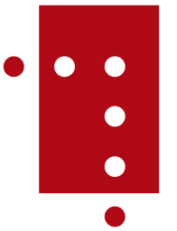

8,162 Wikipedia articles in 148 languages in which images from Category:Images from Nasjonalbiblioteket are used, grouped by language
This overview is based on this XML output of the GLAMorous tool d.d. 26-01-2024.
It was generated using the GLAMorousToHTML Python script.
Also see the documentation of this tool.
Available languages
Nynorsk (2,479)
English (1,011)
Nynorsk (543)
Swedish (483)
German (311)
French (287)
Russian (255)
Danish (234)
Spanish (157)
Egyptian Arabic (155)
Polish (153)
Dutch (143)
Italian (136)
Czech (135)
Finnish (125)
Ukrainian (121)
Arabic (93)
Eastern Armenian (78)
Catalan (76)
Persian (72)
Portuguese (67)
Hebrew (62)
Romanian (49)
Japanese (48)
Chinese (36)
Serbian (35)
Esperanto (34)
Basque (33)
Cebuano (33)
Belarusian (32)
Turkish (31)
Greek (30)
South Azerbaijani (29)
Slovene (28)
Hungarian (27)
Macedonian (24)
Vietnamese (24)
Standard Estonian (24)
Indonesian (23)
Bulgarian (22)
Korean (18)
Icelandic (17)
Asturian (17)
Galician (16)
Latin (15)
Georgian (13)
Azerbaijani (13)
Welsh (13)
Lithuanian (12)
Uzbek (11)
West Frisian (11)
Afrikaans (9)
Kotava (8)
Kazakh (8)
Latvian (8)
Bashkir (7)
Serbo-Croatian (7)
Punjabi (7)
Irish (7)
Slovak (7)
Tatar (7)
Bangla (7)
Urdu (7)
Malayalam (7)
Thai (6)
Cantonese (6)
Malay (6)
Inari Sami (5)
Croatian (5)
Tamil (5)
Faroese (5)
Hausa (4)
Kurmanji (4)
Western Armenian (4)
Hindi (4)
Chechen (4)
Waray (4)
Ido (4)
Sorani (4)
Interlingua (3)
Southern Quechua (3)
Mingrelian (3)
Scots (3)
Low Eastern Saxon (3)
Albanian (3)
Occitan (2)
Pashto (2)
Mazanderani (2)
Telugu (2)
Tajik (2)
Malagasy (2)
Kinyarwanda (2)
Aragonese (2)
Tagalog (2)
Kannada (2)
Turkmen (2)
Piedmontese (2)
Bavarian (2)
Kyrgyz (2)
Ligurian (2)
Ladin (2)
Minnan (2)
Breton (2)
Lingua Franca Nova (2)
Swahili (2)
Limburgish (2)
Classical Chinese (1)
Marathi (1)
Bosnian (1)
Corsican (1)
Maltese (1)
Northern Sami (1)
Santali (1)
Mirandese (1)
Kapampangan (1)
West Flemish (1)
Odia (1)
Kabyle (1)
Karakalpak (1)
Tumbuka (1)
Scottish Gaelic (1)
Hakka Chinese (1)
Ossetian (1)
Ilocano (1)
Javanese (1)
Wu Chinese (1)
Karachay-Balkar (1)
Luxembourgish (1)
Haitian Creole (1)
Bhojpuri (1)
Cornish (1)
Nepali (1)
Mongolian (1)
Shona (1)
Oromo (1)
Manx (1)
Burmese (1)
Alemannic (1)
Central Bikol (1)
Kabiye (1)
Yakut (1)
Crimean Tatar (1)
Zhuang (1)
Chuvash (1)
Lezgian (1)
Sanskrit (1)
Sindhi (1)
Yoruba (1)
Nynorsk (2,479)
1. vesterlenske infanteriregiment |
100-årsjubileet for Sarpsborgs gjenopprettelse |
17. mai (grunnlovsdag) |
2. vesterlenske infanteriregiment |
Aalborg |
Aars og Voss’ skole |
Aasmund Halvorsen Vinje |
Aasmund Olavsson Vinje |
Abbediengen |
Abelhaugen |
Abelmonumentet |
Adal stasjon |
Adamsfossen |
Adelaide Johanne Thekla Isidore Wedel-Jarlsberg |
Administrasjonsrådet |
Adolph Tidemand |
Agathe Grøndahls gate (Oslo) |
Agatunet |
Agnar Mykle |
Agnes Hiorth |
Agnordal |
Ahus Stensby sykehus |
Akerselva |
Akersgata (Oslo) |
Akershus |
Akershus slott og festning |
Akershus stiftamt |
Akershusiske ridende jegerkorps |
Akershusiske skarpskytterregiment |
Akerøy fort |
Akevitt |
Akkerhaugen stasjon |
Albert Armitage |
Albert Møller |
Alby gård |
Aleksander |
Alexander Kielland |
Alexandra hotell |
Alf Prøysen |
Alfred Lagerheim |
All makt skal samles i denne sal |
Allmenning (gater) |
Allround-NM på skøyter 1916 |
Allround-NM på skøyter junior |
Allround-VM på skøyter 1935, menn |
Alnestinden |
Alpelue |
Alt for Norge |
Alterskap |
Alunverket |
Alv Knutsson |
Alvilde Prydz |
Alvilde Torp |
Amalie Skram |
An die Hoffnung |
Anders Beer Wilse |
Anders Daae (1838–1910) |
Anders Sandvig |
Anders Svor |
Andersnatten |
Andreas Bloch |
Andreas Botner |
Andreas Kristian Andersen Grimsø |
Andreas Martin Seip |
Andreas Samuel Krebs |
Andresens Bank |
Andsvatnet |
Anita Augspurg |
Ankenes |
Ankenes kirke |
Anker (slekt) |
Anna Bugge Wicksell |
Anna Caspari Agerholt |
Anna Hvoslef |
Anna Rogstad |
Anna Tronds |
Anne Grimdalen |
Anne Holsen |
Anne Kure |
Anne Kures sti (Oslo) |
Annet trondhjemske infanteriregiment |
Annie Furuhjelm |
Antarctic-ekspedisjonen 1894–95 |
Anton Christian Houen |
Anton Eriksen |
Anton Marentius Hermo |
Apothekernes Laboratorium |
Arctanderbyen |
Arctic Coal Company |
Aremark kirke |
Arendal |
Arendal kirkegård |
Arendalsgata (Oslo) |
Arild Hamsun |
Arkitekturåret 1910 |
Arkitekturåret 1971 |
Armand Fallières |
Arne Hovde |
Arne Kildal |
Arne Smeland |
Arneberg (Åsnes) |
Arneberg stasjon |
Arnold Ræstad |
Arnstein Arneberg |
Arnulf Øverland |
Artillerie-Corpset |
Asbjørn Elgstøen |
Asbjørn Støholen |
Asbjørnsenselskapet |
Asiatisk Kompagni |
Ask stasjon |
Askeladden |
Asker |
Asker (bygd) |
Askim |
Askim (tettsted) |
Askim Gummivarefabrik |
Aslaug Vaa |
Asta Lie Isaachsen |
Astrid, fru Ferner |
Atneosen |
Audnedal |
Aufles holdeplass |
Aulestad |
Auma stasjon |
Aurdal |
Aurdal stasjon |
Aure (Sykkylven) |
Aurlandssko |
Auronasa |
Aurskog stasjon |
Avaldsnes kirke |
Avisåret 1862 |
Avisåret 1920 |
Axel Drolsum |
Axel Lindahl |
Axel Revold |
Bab Christensen |
Backer |
Badderen |
Badegjest |
Badeparken (Sandefjord) |
Balders gate (Oslo) |
Balestrand |
Baltikums adel |
Bandak–Norsjøkanalen |
Barnas dag |
Barnevogn |
Bastøy skolehjem |
Beinflørting |
Beitstad |
Bekkelagshøgda |
Bekkestua stasjon |
Beksømstøvler |
Bellevuehøyden |
Berby |
Berekvam stasjon |
Berg-og-dal-bane |
Bergans fritid |
Bergen |
Bergen Børs |
Bergenhus regiment |
Bergens Teatermuseum |
Bergens historie |
Bergensbanen |
Bergensbrannen 1916 |
Bergensskolen i arkitektur |
Berger skole (Nesodden) |
Bergliot Ibsen |
Berit Pynten |
Bernhard Rostad |
Bernt Bentsen |
Bernt Eriksen Orning |
Bernt Støylen |
Bernt Sverdrup Maschmann |
Besserudtjernet |
Bestum |
Betafo |
Bibliofilklubben |
Bilthuggertangen |
Birger Braadland |
Birkelunden |
Bislett |
Bispegata (Oslo) |
Bjarne Brustad |
Bjerke Travbane |
Bjoa kirke |
Bjølsen skole |
Bjølstad gård |
Bjørkelangen stasjon |
Bjørkeris |
Bjørn Berg |
Bjørn Bjørnson |
Bjørn Bogetvedt |
Bjørn Helland-Hansen |
Bjørnerud stasjon |
Bjørnholt (Nordmarka) |
Bjørnstad stasjon |
Bjørnstjerne Bjørnson |
Bjørvika |
Blaker skanse |
Blaker stasjon |
Blindern Studenterhjem |
Blommenholm og Sandvika Tennisklubb |
Blomstrandbreen |
Blyberghaugen |
Blytts gate (Oslo) |
Bodøgård |
Bodøsaken |
Bognes |
Bogstad Camping |
Bogstadveien (Oslo) |
Bokmål |
Boksing |
Bolkesjø |
Bolstadfjorden |
Bomveien (Oslo) |
Bondalen |
Bondeøks |
Bonnevie (slekt) |
Bonnevieprisen |
Borgarsyssel museum |
Borgerrepresentantene i Christiania – de 12 eligerede menn |
Borgund kirke (Sogn og Fjordane) |
Borgund kirke (Ålesund) |
Borgund stavkirke |
Bossekop |
Boydell’s picturesque scenery of Norway |
Bragernes torg |
Brand |
Brannen i Colosseum kino 1963 |
Brannen i Grue kirke |
Brannkonstabel |
Braskereidfoss |
Brattlandsdalen |
Bredo Greve (arkitekt) |
Breifonna (Stryn) |
Breim gamle kirke |
Breimsvassdraget |
Breimsvatnet |
Breitinden (Rauma) |
Brekke sluser |
Brennevinsforbudet |
Brevik |
Briskebyveien (Oslo) |
Britannia Hotel |
Broch (slekt) |
Brochmann (slekt) |
Broen i Vigelandsanlegget |
Brud |
Brudeferd i Hardanger |
Brudekrone |
Brumunddal |
Brumunddal stasjon |
Bruraskaret |
Bryllup |
Bryn stasjon |
Brynjulf Larsson |
Bryting |
Brønn |
Buarbreen |
Budeie |
Bulken stasjon |
Bunad |
Bybrannen i Ålesund 1904 |
Bybrua (Drammen) |
Bygdøy |
Bygningene i friluftsmuseet på Norsk Folkemuseum |
Bygstad kirke |
Byparken (Sandefjord) |
Bytårnet (Moss) |
Byutvidelser i Oslos historie |
Bål |
Båntjern |
Bærum sykehus |
Bærums Skiklub |
Bødtker |
Bøgh |
Bøkker |
Børge Olsen-Hagen |
Børre Henrik Børresen |
Børsbygningen i Bergen |
Børsen (Oslo) |
Børsparken |
Bøverdal kirke |
Camilla Collett |
Camilla Colletts vei (Oslo) |
Camilla Wiese |
Cantico di Ringraziamento |
Carl Anton Bjerknes |
Carl Arnold |
Carl Berner |
Carl Cederström |
Carl Christian Wischmann |
Carl Emil Krefting |
Carl Gustaf Armfeldt |
Carl Huitfeldt |
Carl Ludvig Jacobsen |
Carl Lumholtz |
Carl Lundh |
Carl Normann |
Carl Otto Løvenskiold |
Carl Schulz |
Carl Struve |
Carl Størmer |
Carl von Ossietzky |
Carrie Chapman Catt |
Carsten Anker |
Carsten Anker-monumentet |
Carsten Tank |
Carte de visite |
Cato Guldberg |
Centralbanken for Norge |
Centralteatret |
Charlottenlund (Trondheim) |
Chaussé |
Chr. Bjelland & Co |
Christen Krog |
Christian Fredrik Michelet |
Christian II av Danmark, Norge og Sverige |
Christian Krohg |
Christian Krohgs gate (Oslo) |
Christian Magnus Falsen |
Christian Michelsen |
Christian Michelsens gate (Bergen) |
Christian Michelsens regjering |
Christian Olsen |
Christian Olsen Thon |
Christian Rakovskij |
Christian Samuel Eyde |
Christian Tønsberg |
Christiania/Kristiania |
Christiania Dampkjøkken |
Christiania Seildugsfabrik |
Christiania Tivoli |
Christiestøtten |
Christoffer Trondsen |
Christopher Hansen Blom |
Christopher Hansteen (astronom) |
Christopher Hornsruds regjering |
Christopher Knudsen |
Cirkus Empress |
Claes Gill |
Claire Mjøen |
Clara Tschudi |
Claus Pavels Riis |
Claus Peter Knudsen |
Colin Archer |
Colletts bro |
Colosseum kino |
Colt mitraljøse m/29 |
Conrad Nicolai Schwach |
Cora Sandel |
Cort Adelers gate (Oslo) |
Curt Bräuer |
Cæciliaforeningen |
DS «Alden» |
DS «Askøy» (1912) |
DS «Constitutionen» |
DS «Dronning Maud» |
DS «Firda» (1900) |
DS «Kristianiafjord» |
DS «Lyra» |
DS «Mira» |
DS «Oslo» |
DS «Prins Olav» |
DS «Skibladner» |
DS «Stavenes» |
DS «Viking» |
Dagbladet |
Dagfin Werenskiold |
Dagny Bjørnson Sautreau |
Dal |
Dal stasjon |
Dale kirke (Luster) |
Dalen |
Dalsnibba |
Danebu |
Daniel Georg Nyblin |
Dansen gjenom skuggeheimen |
Dansk Vestindia |
Danske Artilleriregiment |
David Arnesen |
David Christopher Frich |
David Monrad Johansen |
De tre bukkene Bruse |
Deichman bibliotek |
Deichmans hovedbibliotek på Hammersborg |
Demarkasjonslinjen i 1940 |
Den Nationale Legion |
Den Nationale Scene |
Den Norske Fjellskolen Rondeheim |
Den Norske Løve (orden) |
Den Norske Nobelkomite |
Den bergenske kongevei |
Den gamle stortingssalen |
Den jarlsbergske hovedvei |
Den norske Amerikalinje |
Den norske Amerikalinjes hovedkontor |
Den norske Nordhavsekspedisjon 1876–78 |
Den syvende far i huset |
Det Hvite Bånd |
Det Rivertzke kvartal |
Det Søndenfjelds-Norske Dampskibsselskab |
Det frivillige Skyttervesen |
Det norske litrasystemet i jernbanen |
Det sibirske kompani |
Det skandinaviske selskab |
Detektivens barnepike |
Di 3 |
Diabolo |
Diakonhjemmet sykehus |
Dietrichson (slekt) |
Digermulen |
Dikemark sykehus |
Dikka Møller |
Djupvatnet (Stranda) |
Doblouggården (1933) |
Dolstad kirke |
Domkirkeruinene på Hamar |
Dompap |
Dore Lavik |
Dorgefossen |
Douglas Fairbanks |
Dovrehallen |
Down Town Key Club |
Drammen |
Drammen havn |
Drammen rutebilstasjon |
Drammen stasjon |
Drammen videregående skole |
Drammens Børs |
Drammens Jernstøberi |
Drammenselva |
Drammensfjorden |
Drammensveien (Oslo) |
Drevsjø |
Drikkevise |
Drivhuseffekt |
Drolsum stoppested |
Dronningen (selskapslokale) |
Dronningens utsikt (Hole) |
Drøbak |
Drøbak kirke |
Du må ikke sove |
Dukketeater |
Dyna fyr |
Dyrehodestolpene i Osebergfunnet |
Dælenenga |
Dødsfall i 2009 |
Dødsfall i 2014 |
Dødsfall i 2015 |
Dødsmaske |
Dønnes kirke |
Ebba Haslund |
Edvard Hagerup Bull (1855–1938) |
Edvard Munch |
Edward Backhouse |
Egertorget (Oslo) |
Eggsentral |
Egne hjem stasjon |
Eidsberg kirke |
Eidsberg stasjon |
Eidsdal |
Eidsfos Jernverk |
Eidsgata |
Eidsvoll |
Eidsvollsbygningen |
Eigerøy bru |
Eikesdalsvatnet |
Eilert Sundt |
Eilert Sundts gate (Oslo) |
Einar Bjørnson |
Einar Gerhardsen |
Einar Gerhardsens første regjering |
Einar Greve |
Einar Landvik |
Eiterstraum stoppested |
Eivind Astrup (1871–1895) |
Eivind Groven |
Ekebergrestauranten |
Ekman & Smith |
Eksamen |
Eksingedalen |
Elbe–Lübeck-kanalen |
Elektrisk lastebil |
Elgeseter bru |
Eli plass |
Ella Anker |
Elling Eielsen |
Ellinor Hamsun |
Ellisif Wessel |
Elly Simonsen |
Else Frölich |
Elsk meg bort fra min bristende barndom |
Elvegata (Trondheim) |
Elverhøj (skuespill) |
Elverum folkehøgskule |
Elverumsfullmakten |
Emanuel Vigeland |
Embetsmannsstaten |
Embret Mellesmo |
Emil Collett |
Emil Kvanlid |
Emil Lie |
Energi i Norge |
Enevold Skaktavl |
Engebret Soot |
Engebret Soot (1855–1913) |
Engerdal |
Enige og tro inntil Dovre faller |
Epithalamion (Valen) |
Erik Glosimodt |
Erik Knutsson (Tre Rosor) |
Erik Ottesen Orning |
Erik Vullum |
Erika Nissen |
Erling Bjørnson |
Erling Viksjø |
Ernest Shackleton |
Ernst Glaser |
Ernst Sars |
Erotiske folkeeventyr |
Espa stasjon |
Espevær bedehuskapell |
Et dukkehjem |
Etikett |
Etnesjøen |
Europavei 136 |
Europavei 16 (Norge) |
Europavei 39 (Norge) |
Europavei 39 (Sogn og Fjordane) |
Europavei 39 (Vestland) |
Europavei 6 (Norge) |
Eva Nansen |
Evangeliekirken Bergen |
Evangervatnet |
Evje kirke |
Eyvind Alnæs |
Fabian Gustaf Norström |
Fahlstrøms Theater |
Falkensten |
Fana kirke |
Fana kommune |
Fanitullen |
Fantebrauta tunnel |
Fartein Valen |
Farøy |
Fauske stasjon |
Faxe |
Faxe kommune |
Feda |
Feda (tettsted) |
Fedreland |
Fedrelandslaget |
Fefor Høifjellshotell |
Felle |
Felttoget i Trøndelag i 1718 |
Femmila |
Ferdaminne frå sumaren 1860 |
Fergesambandet Horten–Moss |
Ferje |
Ferjesambandet Bognes–Lødingen |
Ferjesambandet Svelvik–Verket |
Fernanda Nissen |
Festiviteten i Skien |
Festningsplassen (Oslo) |
Fet prestegård |
Fidjetun stasjon |
Filefjell |
Filmåret 1973 |
Filmåret 2012 |
Fingerkrok |
Finlandshjelpen |
Finnan |
Finneidfjord stasjon |
Finse |
Fitjavatnet |
Fjeldfuglen |
Fjellsetra (Trondheim) |
Fjordbåt |
Fjordferge |
Fjordsjø |
Fjære kirke |
Flagget |
Flatanger prestegjeld |
Fleischer’s Hotel |
Flekkefjord kirke |
Fleskhus stoppested |
Flikkeid stasjon |
Flosshatt |
Flukten fra Oslo etter 9. april 1940 |
Flyfoto |
Flyktningkrisen i 1921 |
Flå stasjon |
Flåm stasjon |
Flåmsbana |
Flåmselvi |
Fløysvingene |
Folkeforbundet |
Folketeatret (1952–1959) |
Fonograf |
Fontenen i Vigelandsanlegget |
Forbudstiden |
Fornøyelsespark |
Fossum bru |
Fotografi |
Fotokrom |
Fougner (slekt) |
Fra gutt til mann |
Framekspedisjonen |
Framheim |
Francis Bull |
Frede Castberg |
Freden i Roskilde |
Frederik Hilfling-Rasmussen |
Frederik Klem |
Frederik Ludvig Vibe |
Fredrich Christian Holberg Arentz |
Fredrik August Wessel-Berg |
Fredrik Meyn |
Fredrikke Marie Qvam |
Fredrikke Nielsen |
Fredrikke Waaler |
Fredriksberg fort |
Fredriksodde |
Fredrikstad Mekaniske Verksted |
Fredrikstad tollbod |
Frenologi |
Fridtjof Nansen |
Fridtjof Nansens vei (Bærum) |
Frigjøringsdagen (Norge) |
Friluftsliv |
Frisinnede Venstre |
Fritz Heinrich Frølich |
Fritzøehus |
Frogner skole (Oslo) |
Frogner stadion |
Frognerbadet |
Frognerkilen |
Frognerseteren |
Frognerseteren stasjon |
Frognerseterveien (Oslo) |
Frøen |
Frønsvollen |
Fuglenes |
Funny Boys |
Fylkesting |
Fylkesvei 1941 |
Fylkesvei 217 |
Fylkesvei 219 |
Fylkesvei 222 |
Fylkesvei 55 |
Fylkesvei 5994 |
Fylkesvei 63 |
Fyllinga |
Fåbro |
Færder |
Færder fyr |
Fødselsstiftelsen i Christiania |
Følling kirke |
Førde (kommune) |
Førde kirke (Førde) |
Førre |
Første trondhjemske infanteriregiment |
Første verdenskrig |
Gabels gate (Oslo) |
Gabriel Scott |
Gabriel Tischendorf |
Galtung |
Gamle Aker kirke |
Gamle Asker kirke |
Gamle Bergen hovedbrannstasjon |
Gamle Dyrskartunnel |
Gamlebyen (Oslo) |
Gamlebyen skole |
Gardermoen flystasjon |
Gauldalsraset |
Gaupne gamle kirke |
Gaustatoppen |
Geiranger |
Geiranger kirke |
Geirangerelva |
Geirangervegen |
Geitabru |
Geithus |
Geithus bru |
Generalforsamling |
Georg Antonius Brustad |
Georg Ossian Sars |
Georg Sibbern |
Georg Stang |
Georg Valentin von Munthe af Morgenstierne |
Georg Østerholt |
Gerd Grieg |
Gerhard Henrik Armauer Hansen |
Gerhard Munthe |
Gerhard Munthe (1919–1997) |
Gerhard Schøning |
Gimmestad gamle kirke |
Gina Oselio |
Gisken Wildenvey |
Gjeble Pederssøn |
Gjelleråsen |
Gjemsø kloster |
Gjerpen (Skien) |
Glatveds Hotel |
Glemmen |
Glittertinden |
Glomfjord |
Glomfjord kirke |
Godfred Hansen |
Godlia |
Godlia hageby |
Godthaab |
Goðafoss |
Grafferbunad |
Gran (slekt) |
Grand Hotel (Oslo) |
Granum (Fluberg) |
Granvin |
Grasdøla (Stryn) |
Grav (Bærum) |
Grav skole |
Graverens Teglverk |
Gravfølge |
Gravhalstunnelen |
Gravøl |
Grefsen Folkesanatorium |
Grefsenåsen kapell |
Gregorius Gravlid |
Grensevakt |
Greve (slekt) |
Grevskapet Samsøe |
Greåker stasjon |
Grinddalsfossen |
Grinder |
Grip |
Grip fyr |
Groruddalen |
Grunge kirke |
Grungedal |
Grytten kirke |
Grønlands torg (Oslo) |
Grønnbyen |
Grønvollfoss stasjon |
Grønøy |
Grøttørbrua |
Gud signe vårt dyre fedreland |
Gudbrand Skatteboe |
Gudbrandsdalsbanen |
Gudbrandsdalslågen |
Gudvangen |
Gudå |
Gulbrand Lunde |
Guldbergs Akademiske Kor |
Gullsmedvik stasjon |
Gulltransporten |
Gunnar Hermansen |
Gunnar Holmsen |
Gunnar Knudsen |
Gunnar Sætren |
Gunnar Sønstevold |
Gunnar Utsond |
Gustaf Fröding |
Gustav Borgen |
Gustav Jensen |
Gustav Vigeland |
Gårdsnisse |
H. Meyers Trikotasjefabrikk |
Haakon VII |
Hagbart Berner |
Hagbart Haakonsen |
Hageby |
Haglebu |
Haglebuslaget |
Haider Ali |
Hakapik |
Hakekors |
Halden |
Halden stadion |
Halden sykehus |
Halfdan Cleve |
Hallstein Sundet |
Hallvard Vebjørnsson |
Halvdan Koht |
Halvdanshaugen på Stein |
Halvor Emil Heyerdahl |
Hamar stadion |
Hamarøyskaftet |
Hankø |
Hanna Resvoll-Holmsen |
Hans Aanrud |
Hans Christian Petersen |
Hans Christopher Gedde |
Hans Ditlev Franciscus von Linstow |
Hans E. Kinck |
Hans Heinrich Jess |
Hans Henrik Holm |
Hans Ingelsrud |
Hans Jacob Grøgaard |
Hans Krum |
Hans Latza |
Hans Lauritzen |
Hans Lauritzen Blix |
Hans Majestet Kongens Gardes historie |
Hans Mustad |
Hans Rasmus Astrup (1831–1898) |
Hans Strøm |
Hansa bryggeri |
Hansteen (slekt) |
Hansteens gate (Oslo) |
Harald Bertrand |
Harald Bothner |
Harald Dal |
Harald Grieg |
Harald Hardråde |
Harald L. Tveterås |
Harald V |
Haraldshaugen |
Harbitz (slekt) |
Hardanger |
Hardangerbana |
Hardangerbunad |
Hardangerfjorden |
Hardangerjøkulen |
Harmonien (bygning) |
Harpun |
Harriet Backer |
Harstad |
Harstad (by) |
Hartvig Knudssøn Bille |
Hartvig Nissen |
Hartvig Nissens skole |
Haslemo stasjon |
Haslum stasjon |
Hattfjelldal kirke |
Hauerseter stasjon |
Haug skole og ressurssenter |
Haugesund rådhus |
Haugfossen |
Haukeliekspressen |
Hausmanns bru |
Havbruk |
Have Germanerne invandret til Skandinavien fra nord eller fra syd? |
Heddal stavkirke |
Hedemarksbanen |
Hegdehaugsveien (Oslo) |
Heggedal stasjon |
Heidmanns gate (Hamar) |
Heinrich Jacob Goldschmidt |
Helhest |
Helldalsmo stasjon |
Hellebard |
Hemnes (Aurskog-Høland) |
Hemnes stasjon |
Hen (Rauma) |
Hen fangeleir |
Hengebrua (Atna) |
Hengedal |
Henny Skjønberg |
Henrik Angell |
Henrik Backer |
Henrik Greve Blessing |
Henrik Ibsen |
Henrik Ibsens gate (Oslo) |
Henrik Jørgen Huitfeldt-Kaas |
Henrik Lindstrøm |
Henrik Sørensen |
Herman Frangs gate |
Herman Friele (1838–1921) |
Herman Semmelmann |
Herman Severin Løvenskiold (hoffsjef) |
Herman Treschow |
Herman Wildenvey |
Hermann Christian Neupert |
Hermetikk |
Hernes |
Herredshuset på Jessheim |
Hersleb skole |
Hestevogn |
Hidra kirke |
Himmelseng |
Historisk museum |
Historiske kart over Norge |
Hitra |
Hjalmar Johansen |
Hjalmar Kjerulf |
Hjalmar Pettersen |
Hjalmar Welhaven |
Hjartdal kirke |
Hjellum stasjon |
Hjelmtegn |
Hjemmebrent |
Hjørnesteinsbedrift |
Hobøl gård |
Hoemsbrua |
Hoff terrasse (Oslo) |
Hokksund |
Hokksund bru |
Hokksund stasjon |
Holden hovedgård |
Holger Nielsens metode |
Holla |
Holla kirkeruin |
Holmenkollen Turisthotel |
Holmestrand |
Holocaust i Norge |
Holsbrua |
Holt (Tvedestrand) |
Holtegata (Oslo) |
Holtet hageby |
Hopsfossen kraftverk |
Hordaland |
Horngården |
Hornindalen |
Hornindalsvatnet |
Hornlue |
Horten Verft |
Horten sykehus |
Hospitsveien (Oslo) |
Hotel Alexandra |
Hotel Kong Carl |
Hotel Mundal |
Hotel Norge (Bergen) |
Hotel Norge Høsbjør |
Hotel Viking |
Hovedbanen |
Hovedportalen i Vigelandsanlegget |
Hovsfoss |
Huitfeldt |
Huitfeldts gate (Oslo) |
Hulda Garborg |
Hungersnøden i Russland 1921–1922 |
Hurrungane |
Husdyr |
Hvaler (kommune) |
Hvalsmoen leir |
Hvalstrand bad |
Hvam videregående skole |
Hvitsymre i utslåtten |
Hvoslef |
Hydro Energi |
Hydrobygget |
Hydroparken |
Håkon Five |
Håkon Jarls gate (Trondheim) |
Hårknute |
Hårnålssving |
Høgskolebrua |
Høgskolen i Innlandet, studiested Blæstad |
Hønefoss |
Hønefoss bru |
Hørsand stasjon |
Høy |
Høybråten skole |
Ildjernet |
Ildsted |
Ilen kirke |
Illustreret Tidende |
Immatrikulering |
Industrigata (Oslo) |
Inge Krokann |
Ingeborg Motzfeldt Løchen |
Ingelbrecht Knudssøn |
Ingeniørkorpset |
Ingier (slekt) |
Ingierstrand bad |
Ingvald Schey |
Ingvar Langlien |
Innfjorden |
Innfjordtunnelen |
Innføring av kvinnelig stemmerett i Norge |
Innhavet |
Innholmtunnelen |
Innvik |
Innvik kirke |
Institutt for historiske studier (NTNU) |
Inuitter |
Is |
Isak Jørgen Coldevin |
Isdrift |
Iuellsklev (Arendal) |
Ivar Aasen |
Ivar Aavatsmark |
Ivar Otto Irgens Mogstad |
Iver Hirtzholm |
J.C. Heuch |
Ja, vi elsker dette landet |
Jac Brun |
Jacob Aall |
Jacob Aalls gate (Oslo) |
Jacob Hegel |
Jacob Hilditch |
Jacob Nicolai Wilse |
Jacob S. Worm-Müller |
Jacob Ziegler |
Jakob Schøning |
Jarlsberg (gods) |
Jazz i Norge |
Jens Andreas Friis |
Jens Christian Hauge |
Jens Dunker |
Jens Ferdinand Willumsen |
Jens Lieblein |
Jens Munthe Svendsen |
Jens Rolfsen |
Jens Westly |
Jernbanealleen (Sandefjord) |
Jernbanetorget (Oslo) |
Jessheim |
Jessheim stasjon |
Jessnes stasjon |
Jesuittparagrafen |
Jo Gjende |
Jobergtunnelen |
Johan Alfred Svendsen |
Johan Borgen |
Johan Bøgh |
Johan Daniel Stub Landmark |
Johan Diederich Behrens |
Johan Falkberget |
Johan Fjeldsted Dahl |
Johan Frederik Vinsnes |
Johan Gunnar Andersson |
Johan Hennum |
Johan Jacob Bennetter |
Johan Kristoffersen |
Johan Lausen Bull |
Johan Ludwig Mowinckels andre regjering |
Johan Ludwig Mowinckels tredje regjering |
Johan Nygaardsvolds regjering |
Johan Peter Weisse |
Johan Sebastian Welhaven |
Johan Selmer |
Johan Svendsen |
Johan Sverdrup |
Johan Theodor Landmark |
Johan Thorne |
Johan von der Fehr |
Johannes Steens andre regjering |
Johannes kirke |
John Theodor Lund |
John Utheim |
John William Edy |
Johs. Andenæs |
Jomfruland nasjonalpark |
Jon Alfred Mjøen |
Jon Leirfall |
Jon Snersrud |
Jon Tvedte |
Jonas Lie |
Jonas Lie (1899–1945) |
Jonas Lied |
Jordalen |
Jordskred |
Josefines gate (Oslo) |
Joseph Frantz Oscar Wergeland |
Joseph Grimeland |
Jostedalsbreen |
Jotunheimen |
Jubileumsutstillingen på Frogner 1914 |
Jul |
Julebukk |
Julegate |
Julekort |
Juletre |
Julli Wiborg |
Junkerdalen |
Justaucorps |
Jøder i Norge |
Jølstra |
Jønsberg videregående skole |
Jørgen Berner |
Jørgen Brunchorst |
Jørgen Henrik Hegermann Brochmann |
Jørgen Løvland |
Jørgen Moe |
Jørgen Moes vei (Hole) |
Jørgen Stubberud |
KNA-hotellet i Oslo |
KS «Heimdal» (1892) |
Kaare Støylen |
Kabelferge |
Kalott |
Kambo |
Kampen park |
Kampen skole (Oslo) |
Kanalbrua (Moss) |
Kanalen i Horten |
Kantstein |
Kapitulasjonsavtalen 1940 |
Karen Grude Koht |
Karjol |
Karl Edvard Diriks |
Karl Ernst von Baer |
Karl III Johan |
Karl Johan-monumentet |
Karl Johans gate |
Karl Knutsson (Tre Rosor) |
Karl Konow |
Karl Marthinsen |
Karl Norbeck |
Karl Uchermann |
Karlebotn kapell |
Karlstadforhandlingene |
Karoline Bjørnson |
Kathrine Lie |
Katnoselva |
Katti Anker Møller |
Kaupanger stavkirke |
Kikutstua |
Kinnar-Sandfjorden |
Kinnskjegg |
Kirkefjerdingen skole (Tjølling) |
Kirkegården ved havet |
Kirkehamn |
Kirkestriden |
Kirketorget (Kongsberg) |
Kiromanti |
Kirsten Flagstad |
Kistenuten |
Kjeller FF9 Kaje |
Kjeller Flyfabrikk |
Kjelsås stasjon |
Kjemisk institutt (UiO) |
Kjemåga holdeplass |
Kjenge |
Kjetta på Dovre |
Kjosen (Ullsfjord) |
Kjosfoss kraftverk |
Kjølbergs plass (Oslo) |
Kjøpstad |
Kjøs bru |
Klara Semb |
Klaveness (slekt) |
Kleivstua |
Klevfos Cellulose- & Papirfabrikk |
Klippfisk |
Kløfta |
Kløfta stasjon |
Kløv (transport) |
Knapstad stoppested |
Knud Knudsen (fotograf) |
Knudaheio |
Knut Alvsson |
Knut Hamsun |
Knuten (vei) |
Kolera |
Kommandantboligen (Trondheim) |
Kon-Tiki ekspedisjonen (bok) |
Konduktør |
Konfirmasjon |
Kong Bele |
Kong Øystein-statuen |
Kongen (klubbhus) |
Kongens utsikt |
Kongevegen over Filefjell |
Konglungen |
Kongsberg |
Kongsseteren |
Kongsten fort |
Konow |
Konsmo |
Kontor |
Kontraskjæret |
Kornbånd |
Kornoppløpet i Arendal 1813 |
Kors kirke |
Kortevarer |
Kragerø |
Kragerø kirke |
Kravatt |
Krigsgenerasjonen |
Kringkastingshuset |
Kringsjå (Oslo) |
Krinoline |
Kristelig Gymnasium |
Kristian |
Kristian Birkeland |
Kristian Friis Petersen |
Kristian Hovde |
Kristian Kristiansen (grønlandsfarer) |
Kristian Prestrud |
Kristian Strøm |
Kristian Winterhjelm |
Kristiania Læseforening for Kvinder |
Kristiansand |
Kristiansand folkebibliotek |
Kristiansund |
Kristine Bonnevie |
Kristofer Lehmkuhl |
Kristofer Uppdal |
Krokket |
Krokkleiva |
Krokstrand |
Krokstrand holdeplass |
Kroksund |
Kroksund bru |
Kronborg slott |
Kronprinsesse Märthas allé |
Krossobanen |
Kråkerøy |
Kubbestol |
Kulturhistorisk museum |
Kulturslottet Soria Moria |
Kunstnernes Hus |
Kunståret 1845 |
Kunståret 1932 |
Kvalfors stasjon |
Kvalsundskipet |
Kvam (tettsted) |
Kvamskleiva |
Kvener |
Kvernen som maler langsomt |
Kviknes Hotel |
Kvinesdal kirke |
Kvinnebunad fra Øst-Telemark (raudtrøye) |
Kvås |
Kykkelsrud kraftverk |
Kylling bru |
Kystmuseet Hvaler |
Kåfjord (Alta) |
Kåfjord kirke (Alta) |
Kåfjord kobberverk |
Kårdalstunnelen |
Kåre Siem |
La Isla de las Calmas |
Labrofossen |
Lafteverk |
Lagertha Broch |
Lahaugmoen leir |
Laks |
Laksfors stasjon |
Lalla Carlsen |
Lallakroken (Oslo) |
Lambertseter senter |
Landeeika |
Landhandel |
Landmåling |
Landnot |
Landsutstillingen i Bergen 1928 |
Landtoning |
Landvikvannet |
Lange (etternavn) |
Langeleik |
Langfossen |
Langsævannet |
Larkollen |
Lars Holst |
Lars Jorde |
Lars Thorstensen Tønsager |
Lars Vegard |
Larvik |
Lavvo |
Leangkollen |
Lebensborn |
Leiegårdene i Oslos historiske murby |
Leif Slagtern |
Leirskredet i Sokkelvika i 1959 |
Leirvassbu |
Lekterferge |
Lenvik kirke |
Lenvik prestegjeld |
Lesja |
Lesjaskog kirke |
Liberté, égalité, fraternité |
Lier |
Lierfoss stasjon |
Likklede |
Liknes |
Likvake |
Lille Presteskjær fyr |
Lille Øvregaten |
Lillebil Ibsen |
Lillehammer Skiklub |
Lilleskagen |
Lillestrøm stasjon |
Lincolnmonumentet |
Lindesnes fyr |
Lismarka |
Liste over Den Norske Nobelkomites medlemmer |
Liste over Norges kirke- og undervisningsministre |
Liste over Norges landskamper i fotball for herrer 1915–1919 |
Liste over Norges landskamper i fotball for herrer 1920–1924 |
Liste over Norges revisjonsministre |
Liste over Norges statsministre |
Liste over båter som har trafikkert Telemarkskanalen |
Liste over eidsvollsmenn |
Liste over elver i Trøndelag |
Liste over forfattere i Norsk Salmebok 2013 |
Liste over innsjøer i Viken |
Liste over kirker i Finnmark |
Liste over kirker i Nordland |
Liste over kirker i Rogaland |
Liste over kirker i Telemark |
Liste over kirker i Troms |
Liste over kirker i Trøndelag |
Liste over kirker i Vestland |
Liste over kulturminner i Asker |
Liste over kulturminner i Bygland |
Liste over kulturminner i Dovre |
Liste over kulturminner i Elverum |
Liste over kulturminner i Flatanger |
Liste over kulturminner i Fredrikstad |
Liste over kulturminner i Gran |
Liste over kulturminner i Hamar |
Liste over kulturminner i Hole |
Liste over kulturminner i Hvaler |
Liste over kulturminner i Kongsvinger |
Liste over kulturminner i Lillehammer |
Liste over kulturminner i Lillestrøm |
Liste over kulturminner i Marka (Oslo) |
Liste over kulturminner i Meløy |
Liste over kulturminner i Moss |
Liste over kulturminner i Narvik |
Liste over kulturminner i Nordre Follo |
Liste over kulturminner i Notodden kommune |
Liste over kulturminner i Ringerike |
Liste over kulturminner i Sel |
Liste over kulturminner i Selbu |
Liste over kulturminner i Senja |
Liste over kulturminner i Sentrum (Oslo) |
Liste over kulturminner i Stange |
Liste over kulturminner i Steigen |
Liste over kulturminner i Steinkjer |
Liste over kulturminner i Stryn |
Liste over kulturminner i Tjeldsund |
Liste over kulturminner i Ullensaker |
Liste over kulturminner i Valle |
Liste over kulturminner i Vindafjord |
Liste over kulturminner i Vinje |
Liste over kulturminner i Vågan |
Liste over kulturminner i bydel Stovner |
Liste over kunstverk på norske frimerker |
Liste over mottakere av Nobels fredspris |
Liste over nasjonalparker i Norge |
Liste over ordførere i Heim (tidligere kommune) |
Liste over ordførere i Lillehammer |
Liste over ordførere i Vossestrand |
Liste over ras i Norge |
Liste over stasjoner på T-banen i Oslo |
Liste over stortingsrepresentanter for Nord-Trøndelag |
Liste over stortingsrepresentanter for Tromsø |
Liste over stortingsrepresentanter for Trondheim og Levanger |
Lit de parade |
Litteraturåret 1818 |
Litteraturåret 1841 |
Litteraturåret 1846 |
Litteraturåret 1859 |
Litteraturåret 1860 |
Litteraturåret 1863 |
Litteraturåret 1870 |
Litteraturåret 1876 |
Litteraturåret 1878 |
Litteraturåret 1889 |
Litteraturåret 1902 |
Litteraturåret 1911 |
Litteraturåret 1918 |
Litteraturåret 1933 |
Litteraturåret 1938 |
Litteraturåret 1939 |
Litteraturåret 1953 |
Litteraturåret 1959 |
Litteraturåret 1961 |
Litteraturåret 1967 |
Litteraturåret 1968 |
Little Norway |
Livshjulet (Gustav Vigeland) |
Lofotfiskets historie |
Lofotjolle |
Loft (bygning) |
Lofthusopprøret |
Logen Teater |
Lom stavkirke |
Lorang Andersen |
Lorentz Skougaard-Severini |
Lorgnett |
Losby gods |
Losna (innsjø) |
Louise Abel |
Louise Engen |
Louise Qvam |
Lovatnet |
Lovisenlund skole |
Ludo |
Ludvig Bergh |
Ludvig Daae |
Ludvig Daae Zwilgmeyer (1855–1910) |
Ludvig Forbech |
Ludvig Wiese |
Ludwik Szaciński |
Luftskipet «Norge» |
Luftskipshangaren i Ny-Ålesund |
Luktvatnet |
Lur |
Lurudal stoppested |
Luster |
Lyrikkåret 1859 |
Lyrikkåret 1860 |
Lyrikkåret 1885 |
Lyrikkåret 1889 |
Lyrikkåret 1900 |
Lyrikkåret 1910 |
Lyrikkåret 1911 |
Lyrikkåret 1923 |
Lyrikkåret 1933 |
Lyrikkåret 1952 |
Lyrikkåret 1959 |
Lyrikkåret 1968 |
Lyrikkåret 1973 |
Lyrikkåret 1993 |
Lysaker stasjon |
Lysekloster kapell |
Lystlunden |
Lårdal |
Lårdal (kommune) |
Låtefossen |
Lærdal |
Lærdalselvi |
Lærdalsøyri |
Løken stasjon |
Lørenfallet |
Lørenseter |
Lørensetertjern naturreservat |
Løvenskiold |
Løvenskiolds gate (Oslo) |
MB «Bitihorn» |
MF «Bastø II» (1939) |
MF «Bastø II» (1961) |
MF «Bastø I» (1956) |
MF «Bastø» (1949) |
MF «Fjærlandsfjord» (1951) |
MF «Geiranger» (1937) |
MF «Hardangerfjord» |
MF «Huglo» |
MS «Borgå» |
MS «Fæmund II» |
MS «Gripsholm» (1957) |
MS «Hamarøy» (1951) |
MS «Haugesund» (1943) |
MS «Marko Polo» |
MS «Meteor» |
MS «Midnatsol» (1949) |
MS «Polarlys» (1952) |
MS «Tonjer» (1953) |
MS «Venus» |
MS «Veslekari» (1918) |
MS «Victoria» |
Madserud gård |
Magerholm |
Magne Valen-Sendstad |
Magnus Vigrestad |
Maja Michelsen |
Majavatnet |
Majorstuhuset |
Mally Lammers |
Mamelukk (klesplagg) |
Mannen (fjell i Romsdal) |
Marcus Pløen |
Marcus Selmer |
Marcus Thrane |
Maren Sars |
Margaretakirken |
Marie Gleditsch |
Marie Hamsun |
Marie Nordstrøm |
Marienlyst (Drammen) |
Maristova |
Marius Müller |
Markens gate |
Marthine Emilie Strømme |
Marthinius Skøien |
Martin Rønne |
Mary Pickford |
Maråk |
Matklokke |
Maud av Norge |
Mausund |
Melhus kirke |
Mellombølge |
Memurubu |
Menga Schjelderup-Ebbe |
Menotti Jakobsson |
Mensendieckskolen i Oslo. Høgskole i fysioterapi |
Meråkerbanen |
Mesna |
Midfjorden |
Midtstuen Sanatorium |
Midøya |
Mikaelshulen |
Millicent Fawcett |
Mimi Frellsen |
Minnehallen |
Minneparken (Ullevål hageby) |
Minnesund jernbanebru |
Mjølfjellet |
Mjøsa |
Mo i Telemark |
Mo kirke (Rana) |
Modum Bad |
Moelv stasjon |
Mofjorden |
Mogreina kirke |
Mohns skar |
Mokasin |
Molde |
Molde domkirke |
Moldefjorden (Molde) |
Moldes historie |
Moltke Moe |
Momarkedet |
Momarken |
Momarken travbane |
Mon Schjelderup |
Mongefossen |
Monolitten |
Monumentalkunst |
Mor Norge |
Moss |
Moss Hotel |
Moss Jernverk |
Moss Kurbad |
Moss kirke |
Moss stasjon |
Mostranda |
Motorveier i Norge |
Muffe (klesplagg) |
Munkedamsveien (Oslo) |
Munken i Nidarosdomen |
Munkholmen |
Munthe |
Muntlig litteratur |
Murbyen (Oslo) |
Museumsplass |
Musikkfesten i Bergen |
Musikkonservatoriet i Oslo |
Musikkåret 1871 |
Musikkåret 1872 |
Musikkåret 1887 |
Musikkåret 1895 |
Musikkåret 1904 |
Musikkåret 1912 |
Musikkåret 1932 |
Musikkåret 1952 |
Musikkåret 1962 |
Musikkåret 1991 |
Myllarguten |
Myntkabinettet |
Myr |
Myrdal stasjon |
Myrens verksteds hageby |
Mysen stasjon |
Måbødal-ulykken |
Måbødalen |
Måna |
Måndalen |
Måråi |
Mæl kirke |
Mære stoppested |
Mødrehjem |
Møkkakjeller |
Mølltunet |
Møre og Romsdal |
Namdal prosti |
Namsbrua |
Namsos (tettsted) |
Namsos kirke |
Namsos’ historie |
Nanne Storm |
Nannestadgata (Oslo) |
Nansenpass |
Nansens Fram-ekspedisjon |
Narvik |
Nasjonal verneplan for veger, bruer og vegrelaterte kulturminner |
Nasjonalbiblioteket |
Nasjonalsang |
Nationaltheatret stasjon (T-bane) |
Naturfotografering |
Nedre Foss |
Nedre Leirfoss |
Nedre Vollgate (Oslo) |
Nedre Vøiens Bomuldsspinderi |
Neger |
Neiden |
Neiden bru |
Nenetsere |
Nenia (Valen) |
Neselvi |
Nesflaten |
Nesodden |
Nicolay Wiborg |
Nidarosdomen |
Nidarø |
Nidarø sagbruk |
Nidelva (Agder) |
Nidelva (Trøndelag) |
Niels Johan Føyn |
Niels Juels gate (Oslo) |
Niels Winge Grimnes |
Nikolai Gunnerius Bøhmer |
Nikolaikirkeallmenningen (Bergen) |
Nils Ringdal (flyger) |
Nina Grieg |
Nisse |
Nisseberget |
Nisselue |
Nitedals Krudtværk |
Nobelprisen i litteratur |
Nomevatn |
Non plus ultra |
Nora Thorstensen |
Norangsdalen |
Nordahl Grieg |
Nordenfjeldske Dragonregiment |
Nordenfjeldske infanteriregiment |
Nordfjordbunad |
Nordiska taflor |
Nordlands Postkontor |
Nordlandssykehuset Vesterålen |
Nordmarka |
Nordseter |
Nordstrand skole |
Nordsundbrua (Kristiansund) |
Norge fremstillet i Tegninger |
Norges Godtemplar Ungdomsforbund |
Norges Grunnlov |
Norges Grunnlov § 2 |
Norges Kvinder |
Norges Skaal |
Norges berggrunn |
Norges dokumentarv |
Norges finansminister |
Norges geografi |
Norges geologiske undersøkelse |
Norges handelshøyskole |
Norges kronregalier |
Norges miljø- og biovitenskapelige universitet |
Norges skål! – Norske drikkeviser gjennom 200 år |
Norgesmesterskapet i fotball for menn 1918 |
Norsk Brændselolje |
Norsk Hoved-Jernbane |
Norsk Jernverk |
Norsk Kvinnesaksforening |
Norsk Teknisk Porselen |
Norsk emigrasjon til USA |
Norsk energihistorie |
Norsk forsvarshistorie |
Norsk hvalfangst |
Norsk lokalhistorisk institutt |
Norsk misjon blant hjemløse |
Norske Folkelivsbilleder |
Norske Studenters Roklub |
Nortraships flåte |
Not (fiskeredskap) |
Notodden kirke |
Notodden prestegjeld |
Nova Spektrum |
Novaja Semlja |
Novlefoss |
Ny-Hellesund |
Nygaardsgaten |
Nygårds allé (Oslo) |
Nykirke stasjon |
Nykirken i Bergen |
Nylands mekaniske verksted |
Nærøydalen |
Næs Jernverk |
Nørholm |
Odd Dahl |
Odd munks saga om Olav Tryggvason |
Oddmund Vik |
Odds Ballklubb |
Ode til ensomheten |
Odnes stasjon |
Oksøy fyr |
Oktoberrevolusjonen |
Olaf Amundsen |
Olaf Barda |
Olaf Boye |
Olaf Bulls plass |
Olaf Gulbransson |
Olaf Martin Peder Væring |
Olaf Rye |
Olai Grønmark |
Olaus Arvesen |
Olav Duun |
Olav Engelbrektsson |
Olav H. Hauge |
Olav Midttun |
Olav Tryggvason-monumentet |
Olav V |
Olavsmerket |
Olavstatuetten |
Olberg kirke |
Olden |
Ole Bull |
Ole F. Bergan |
Ole Høiland |
Ole Nilsen Ravna |
Ole Olsen (skøyteløper) |
Ole Paus |
Ole Sivert Welde |
Ole Wilhelm Lund |
Olenegonka |
Oljehyre |
Oluf Dietrichson |
Oluf Pedersen Maaneskiold |
Oluf Wold-Torne |
Omsens gate (Oslo) |
Ona fyr |
Ondulering |
Onsøy prestegård |
Operasjon Musketoon |
Opo (Odda) |
Oppegård |
Oppegård stasjon |
Oppland Regiment |
Opplandgata (Oslo) |
Orm-familien |
Ormegård |
Ormøy kirke |
Orvos stasjon |
Oscar Heggelund |
Oscar Lærum |
Oscar Mathisen |
Oscarsborg festning |
Oscarshall |
Oseberghaugen |
Osebergvogna |
Oskar Omdal |
Oslo |
Oslo-Filharmonien |
Oslo Børs |
Oslo Fiskehall |
Oslo Handelsgymnasium |
Oslo Lysverker |
Oslo Militære Samfund |
Oslo Sparebank |
Oslo Tennisklub |
Oslo domkirke |
Oslo jernbanetollsted |
Oslos historie |
Otta (elv) |
Otta stasjon |
Otto B. Halvorsen |
Otto Sinding |
Otto Sverdrup |
Otto Tangen |
Over Ævne I |
P.A. Larsen |
P.H. Holtermann |
P.O. Schjøtt |
Paal Brekke |
Pannelugg |
Pareidoli |
Pariserhjul |
Park hotell (Sandefjord) |
Parole |
Parr (slekt) |
Passasjerferge |
Pastorale (Valen) |
Paul Armin Due |
Paul Christian Eugen Holmsen |
Paul Michelet |
Paul Olaf Bodding |
Paul René Gauguin |
Paul Winge |
Pauline Hall |
Paus |
Peder Cappelen Thurmann |
Peder Colbjørnsen |
Peder Kolstads regjering |
Peder O. Aune |
Peder Povelsson Paus |
Peer Gynt (Grieg) |
Per Bortens regjering |
Per Hurum |
Per Sunderland |
Per Winge |
Pesta |
Peter Frederik Wergmann |
Peter O. B. Treschow |
Peter Petersen (fotograf) |
Peter Waage |
Peterson (firma) |
Philip Henrik Hansteen |
Pianosonate nr. 2 (Valen) |
Pincenez |
Planovergang |
Pliktavlevering |
Poetokrati |
Politbyrået i Sovjetunionen |
Politikkåret 1848 |
Politikkåret 1878 |
Politikkåret 1922 |
Politikkåret 1945 |
Porsgrunn |
Porsgrunn/Skien |
Portør havn |
Postkort |
Povel Pedersson Paus |
Pram |
Preben von Ahnen |
Prinsens Livregiment |
Prospekt (topografisk bilde) |
Psalm 121 |
Puttis |
Påskehare |
Qaqortoq |
Quenangen Mining Association |
RS 17 «Christian Børs» |
RS 50 «Osloskøyta» |
RS 55 «Olav Østensjø jr.» |
RS 82 «Øivind Lorentzen» |
Ragnar Omtvedt |
Ramsvik tuberkulosehjem |
Randi Blehr |
Randklev bru |
Randsfjord stasjon |
Rasmus Olai Mortensen |
Rasulykken i Loen i 1905 |
Raudnova |
Rauland |
Rauma |
Rauma (elv) |
Raumabanen |
Raumabrua |
Redningsskøyte |
Reginald Koettlitz |
Reidar Karlsen (1912–2000) |
Reknes sanatorium |
Rena |
Rena kartonfabrikk |
Rettssak |
Richard Andvord (1839–1913) |
Riksforsamlingen |
Riksgrense |
Ringebu |
Ringebu stavkirke |
Ringedalsfossen |
Ringeriksveien (Bærum) |
Ringsaker kirke |
Ringsaker stasjon |
Ringstabekk stasjon |
Risør (tettsted) |
Rjukanbanen |
Rjukanfossen |
Roald Amundsen (film) |
Roaring forties |
Robert Levin |
Robert Merkulov |
Rodeløkkens kolonihager |
Rolf Jacobsen |
Rolf Kaarby |
Rolf Lunde |
Romanifolket |
Romerike Folkehøgskole |
Romsdal |
Romsdalen |
Romsdalshorn stoppested |
Romsdalshornet |
Romsdalsmarkedet |
Rore |
Rosemaling |
Rosenhoff |
Rosenkrantz’ gate (Oslo) |
Rotvoll |
Ruseløkkveien (Oslo) |
Russefeiring |
Rye |
Rygge stasjon |
Rådhusbryggene |
Rådmannsgården |
Råheimsdalen |
Rånåsfoss kraftstasjon |
Rød herregård |
Rødfyllgata |
Rødliste for husflidsteknikker |
Røkland stasjon |
Røldal vegmiljø |
Røn |
Rørstad |
Røsta stoppested |
Røyken stasjon |
Røykenvik stasjon |
Røykovn |
Røykovnstue |
Røykstue |
Sagasøylen |
Sagene ring |
Saks (fangstredskap) |
Salmaker |
Samenes historie |
Samfundets Støtter |
Samfunnsgata (Oslo) |
Samisk historie i moderne tid |
Samuel Balto |
Samuel Borgfelt |
Sand (Rogaland) |
Sandefjord kurbad |
Sanderud sykehus |
Sandvinvatnet |
Sankthans |
Sarabråtveien (Oslo) |
Sarpefossen |
Sauland kirke |
Scandic Meyergården hotell |
Schnitler (slekt) |
Schultz’ gate (Oslo) |
Schønings gate (Oslo) |
Sefrivatn stasjon |
Seilskip |
Selbustrand kirke |
Selfangst |
Selje kloster |
Selmer (slekt) |
Selmer Malvin Norland |
Sem kirke |
Semb hovedgård |
Semska stasjon |
Seter |
Setesdal |
Setesdalsbunad |
Setring |
Setring i Loen |
Severin Segelcke |
Shackleton (TV-serie) |
Sigbjørn Obstfelder |
Sigmund Skard |
Signe Greve Dal |
Signe Lund |
Sigrid Bølling |
Sigrid Undset |
Sigurd Hoel |
Sigurd Kloumann |
Sigurd Lie |
Sigurd Scott Hansen |
Sigvald Moa |
Sildefiske |
Simen Fougner |
Sinding |
Singsakerlinjen |
Sinnataggen |
Sion (norsk borg) |
Sjark |
Sjuende far i huset |
Sjøbuss |
Sjøgaten (Oslo) |
Sjøholt |
Sjømannsskolen |
Sjøsamer |
Skagastølstraversen |
Skaktavl |
Skanke |
Skansen restaurant |
Skanseparken (Trondheim) |
Skansevollene |
Skarnes |
Skasen |
Skaugum |
Ski (redskap) |
Ski stasjon |
Skibet gaar videre |
Skien |
Skihistorie |
Skimuseet |
Skistua |
Skjennungstua |
Skjerstad kirke |
Skjomen kirke |
Skjærhalden |
Skogbruk i Norge |
Skovveien (Oslo) |
Skrikjofossen |
Skulerud stasjon |
Skulerudvannet |
Skutehandel |
Skyssbåt |
Skysstasjon |
Skånland kirke |
Skånland prestegjeld |
Slaget på Norderhov |
Slaget ved Fimreite |
Slaget ved Kringen |
Slaget ved Matrand |
Slaktern |
Slepebåtaksjonen |
Slependen stoppested |
Slettafossen |
Slettøya |
Slitu |
Slitu stasjon |
Slottsfjellet |
Slottsfjellsmuseet |
Slottsfjelltårnet |
Slottsparken |
Slottsplassen (Oslo) |
Slå på hjul |
Smaalenenes Avis |
Smalåsen stasjon |
Smørbukk |
Snekkerbukse |
Snorremonumentet |
Snutebuss |
Sofies gate (Oslo) |
Sofus Arctander |
Soggebrua |
Sognefjellshytta |
Sognefjorden |
Sokkelvik |
Soknebud |
Solbergfoss kraftverk |
Solligata (Oslo) |
Solvang Kolonihager |
Sommer-OL 1906 |
Sonetto di Michelangelo |
Sons gate (Oslo) |
Sophies Minde Ortopedi |
Sophus Aars |
Sophus Lie |
Sorgenfri gressbane |
Sorgenfrigata (Oslo) |
Soria Moria slott |
Sortland rådhus |
Spjærøy kirke |
Sportsklubben Trygg/Lade |
Spådomskunst |
St. Andreaslogen Hamarhus |
St. Elisabeths hospital (Trondheim) |
St. Jakob kirke |
St. Johanneslogen St. Olaus til den hvide Leopard |
Stabbestein |
Stabbur |
Stabburet matsenter |
Stabekk stasjon |
Stakk (landbruk) |
Stalheim Hotel |
Stalheimskleivi |
Statens husstellærerhøgskole |
Statens kunstakademi |
Statens kunstnerlønn |
Stavanger |
Stavanger domkirke |
Staverns Fort |
Steen & Strøm |
Stein kirkeruin |
Steinhellebro |
Steinrøysa neri bakken |
Steinsettingen på Bilden |
Steinvik stasjon |
Stenselva |
Stiftamtmann Kaas’ vei (Oslo) |
Stiftelsen Signo |
Stiftsgården |
Stiftsgården i Christiania |
Stiftsgårdsparken |
Stiklestad |
Stiklestad kirke |
Stockholm |
Stoklands Bilruter |
Stolmakergata (Oslo) |
Stoltenbergparken |
Stor-Elvdal kirke |
Store Ullevål gård |
Store Venjetinden |
Storfjorden (Sunnmøre) |
Storgata (Lillehammer) |
Storhamargata |
Storm (slekt) |
Stormbull |
Storsteinnes |
Storsæterfossen |
Stortingsbygningen |
Stortingsvalget 1897 |
Stortingsvalget 1900 |
Stortingsvalget 1903 |
Stortingsvalget 1918 |
Stortingsvalget 1921 |
Stortingsvalget 1927 |
Stortingsvalget 1930 |
Stortingsvalget 1936 |
Stortorget (Hamar) |
Storøen gård (Hole) |
Strandsitter |
Straumgjerde |
Strilekrigen |
Strilelandet |
Struthette |
Stryn |
Strømsfoss sluser |
Strømsø torg |
Stubbebryter |
Studenterlunden |
Studentersamfundet i Trondhjem |
Studentlue |
Studiehjem for unge piker |
Stue (bygning) |
Stødi stasjon |
Suffragist |
Sukkerhusbryggen |
Sula (Frøya) |
Suldalsosen |
Sulitjelma gruber |
Sundbrua (Eidsvoll) |
Sundet (Eidsvoll) |
Sundvolden Hotel |
Sundvollen |
Sundøya |
Sunnmøre |
Sunnmørsbåt |
Suzannah Ibsen |
Suzanne Bull |
Svandalsflonatunnelen |
Svaneapoteket i Bergen |
Svanviken arbeidskoloni |
Sveindal |
Sveitserstil |
Svelvikstrømmen |
Sven Sømme |
Svenningdal stasjon |
Svenska Margaretakyrkan |
Sverdfegerbakken (Oslo) |
Sverre Poulsen |
Sverre Østbye |
Sverrer Knudsen (bildekunstner og tegneserieskaper) |
Svinesund |
Svolvær |
Svøufallet |
Sylte (Norddal) |
Sylte (tidligere kommune) |
Symfoni nr. 1 (Valen) |
Symfoni nr. 2 (Valen) |
Symfoni nr. 4 (Valen) |
Syndle |
Synnøve Solbakken (1957) |
Synnøve Strigen |
Såheim kraftverk |
Såner kirke |
Sånum |
Søndenfjeldske Dragonregiment |
Søndenfjeldske infanteriregiment |
Søndmøre fogderi |
Sør-Fron kirke |
Søren Christian Sommerfelt (1794–1838) |
Søren Årstad |
Sørgeklær |
Sørumsand stasjon |
T-banen i Oslo |
Talestasjon |
Talvik |
Tana museum |
Tancred Ibsen |
Tarebrenning |
Taubane |
Taubro |
Teaterparken (Bergen) |
Teateråret 1876 |
Teateråret 1879 |
Teateråret 1884 |
Teateråret 1889 |
Teateråret 1895 |
Teateråret 1906 |
Teateråret 1910 |
Teateråret 1924 |
Teateråret 1928 |
Teateråret 1933 |
Teateråret 1934 |
Teateråret 1953 |
Teateråret 1967 |
Teateråret 1973 |
Teateråret 2012 |
Teateråret 2017 |
Teateråret 2020 |
Teglverksgata (Oslo) |
Telegrafbygningen (Oslo) |
Telemark |
Telemarkskanalen |
Telthus |
Tennis |
Terje Vigen (1917) |
Terningmoen |
Thaulow |
Theodor August Dop |
Theodor Jacobsen |
Theodor Kittelsen |
Thomas Angells gate |
Thomas Heftye (1822–1886) |
Thomas Peter Krag |
Thomasine Lie |
Thon Hotel Trondheim |
Thor Heyerdahl |
Thora Daugaard |
Thorbjørn Egner |
Thorbjørn Olufsen Skaktavl |
Thorstein Diesen |
Thorvald Lammers |
Thorvald Nilsen |
Throndhjem stasjon |
Tidslinje over Sarpsborgs historie |
Tigerstaden |
Tilthornet |
Tine (beholder) |
Tinfoss Jernverk |
Tingvoll kirke |
Tinnegrend stoppested |
Tinnfoss |
Tinnosbanen |
Tinnoset |
Tistedal stasjon |
Tistedalen |
Tjernsrud stasjon |
Toivo Nykänen |
Tokke |
Tollbugata (Oslo) |
Tonstad |
Tonsåsen sanatorium |
Tonsåsen stasjon |
Torbern Torbernssøn Skaktavl |
Torbjørn Bratt |
Torbjørn Nicolaysen |
Tore Hamsun |
Torget (Bergen) |
Torget (Sandefjord) |
Torggata (Oslo) |
Torghatten |
Torgslaget |
Torshovbyen |
Torstein Skinnarland |
Torsø herregård |
Torv |
Torvet (Tønsberg) |
Tovdalselva |
Toven stasjon |
Trara skole |
Tre Rosor |
Trelast |
Trikken i Bergen |
Trikken i Oslo |
Trollfossen (film) |
Trollhättan |
Trolljuv bru |
Trolljuvtunnelene |
Trollstigheimen |
Trollstigvegen |
Trolltindan |
Trolltunga |
Tromøybrua |
Trondheim |
Trondheim sentralstasjon |
Trondhjems Mekaniske Værksted |
Trondhjems Provincialloge |
Tryggve Gran |
Tryvannstårnet |
Tråstad skanse |
Trømborg kirke |
Tuberkulosehjem |
Tullinløkka |
Tuneskipet |
Tungeskjæring |
Tungtvannsaksjonen |
Tur |
Turisme |
Turisme i Norge |
Turisthytta i Bodø |
Tusse |
Tynset |
Typografenes Byggeselskap |
Tysnes |
Tåsen hageby |
Tórshavn |
Tømmer |
Tømmerfløter |
Tømmerfløting |
Tønsberg |
Tøyen hovedgård |
Tøyengata (Oslo) |
Ullensaker kirke |
Ullensaker prestegård |
Ullensvang |
Ullern holdeplass |
Ullevaal Stadion |
Ullevål Hageby |
Ullevål stadion stasjon |
Ullmann |
Ulnes kyrkje |
Ulrik Frederik Lange |
Ulsrudvann |
Ulvik |
Ulvik kirke |
Ulvøybrua |
Undredal stavkirke |
Ungdommens ret |
Unionsmerket |
Unionsoppløsningen |
Universitetets aula |
Universitetsbiblioteket i Oslo |
Universitetsbygningene ved Karl Johans gate |
Universitetshagen |
Universitetsmuseet i Bergen |
Universitetsplassen (Oslo) |
Unntakstilstanden i midt-Norge |
Uranienborg (museum) |
Uranienborg terrasse (Oslo) |
Urd (ukeblad) |
Urnes stavkirke |
Utburd |
Utne Hotell |
Utne kirke |
Utsikten (Trondheim) |
Utvandring |
Vadsekk |
Valbergtårnet |
Valborg Platou |
Valens fiolinkonsert |
Valkyrie plass stasjon |
Valldal |
Valle (tettsted) |
Valle kirke (Aust-Agder) |
Vallekilen stoppested |
Vallø slott |
Valløy |
Valnesfjord holdeplass |
Vamma kraftverk |
Vang |
Vang kirke (Ridabu) |
Vang kirke (Valdres) |
Vangsvatnet |
Vanse |
Vanse prestegard |
Vansjø |
Vardø kirke |
Vardøhus festning |
Varghammartunnelen |
Vasstun bru II |
Vaterlands bro |
Vatnahalsen høyfjellshotell |
Vazelina Bilopphøggers |
Veblungsnes |
Veggli |
Veitunneler i Norge |
Veldre kirke |
Veldre stasjon |
Venjesdalen |
Verdens ende |
Vermafossen |
Verneplikt |
Verneplikt i Norge |
Vesljuvbreen |
Vestbygd kirke (Lødingen) |
Vesterlenske infanteriregiment |
Vestkorridoren |
Vestlandske hovedvei |
Vestnorsk fjordlandskap |
Vetrlidsallmenningen |
Vettakollen |
Vettakollen stasjon |
Vi ere en Nation vi med |
Vibes gate (Oslo) |
Victoria Hotell Hamar |
Victoria terrasse (Oslo) |
Vidkun Quisling |
Vigelandsanlegget |
Viggo Ullmann |
Vik (Flatanger) |
Vik kirke (Flatanger) |
Vikja i Viksdalen |
Vildanden |
Vilhelm Bjerknes |
Vilhelm Krag |
Vilhelmine Ullmann |
Villa Retiro |
Villa Sorgenfri |
Vinderen stasjon |
Vindhelleveien (Lærdal) |
Vindkraft |
Vingersjøen |
Vingnes |
Vinje (andre betydninger) |
Vinjeboka |
Vinterkrigen |
Vippebrønn |
Vippetangen fyr |
Vitenskapsåret 1594 |
Vitenskapsåret 1842 |
Vitenskapsåret 1874 |
Vitenskapsåret 1876 |
Vitenskapsåret 1899 |
Vitenskapsåret 1922 |
Voksenkollen sanatorium |
Voksenkollen stasjon |
Voksenkollveien (Oslo) |
Voksenlia stasjon |
Volla skole |
Vollen (Asker) |
Volrath Vogt |
Von Munthe af Morgenstierne |
Von Tangen |
Voss jordbruksskule |
Vossebanen |
Vossestrand |
Vossevangen |
Votedalen |
Vrangfoss sluser |
Vurrusjøen |
Vågsbunnen (Bergen) |
Vågå kirke |
Vålerenga skole |
Vårstigen |
Vøringsfossen |
Walther Rathenau |
Wedel-Jarlsberg |
Werenskiold |
Wergeland |
Wergelandsveien 29 |
Wessel (slekt) |
Wilhelm Lorange |
Wilhelm Maximilian Carpelan |
Wilhelm Munthe |
Wilhelm Olssøn |
Wilhelm Peder Daniel Cappelen |
Wilhelm Rasmussen |
Wilhelm Redieß |
Wilhelm von Munthe af Morgenstierne |
Willem Barents |
Wollert Konow (H) |
Yangshaokulturen |
Ziegler (adelsslekt) |
«Den knelende soldat» |
«Eidsvold 1814» |
«En bondebegravelse» |
«Fram» |
«Haugianerne» |
«Hvalfangstmonumentet» |
«I storm» |
«Jason» |
«Kon-Tiki» |
«Nornen» (korvett fra 1855) |
«Stenbocken» |
«Udsigter fra Ulrikken» |
Ådalsbruk stasjon |
Åheim |
Åkebergveien (Oslo) |
Åkersvika |
Åkrestrømmen |
Ålesund (by) |
Ålesund (tidligere kommune) |
Ålgård stasjon |
Åmot kirke (Rena) |
Åna |
Åna-Sira |
Åna-Sira kirke |
Åndalsnes |
Årdal kirke (Årdal) |
Årdalstangen |
Årestue |
Årnes bru |
Årnes stasjon |
Årstad kirke |
Ås stasjon |
Åse Gruda Skard |
Åsgårdstrand |
Åsta stasjon |
Øks (symbol) |
Ølkrus |
Øraveien (Oslo) |
Ørnevegen |
Ørnulf Bast |
Østbanehallen |
Østbanestasjonen |
Østensjøbanen |
Østfold regiment |
Østlandske Petroleumscompagni |
Østmarksetra |
Østre Fredrikstad kirke |
Østre torg |
Øverbygd |
Øvregaten (Bergen) |
Øyjord
English (1,011)
1349 in Norway |
1594 |
1683 in Norway |
1710 in Norway |
1738 in Norway |
1764 in Norway |
1779 in Norway |
1794 in Norway |
1838 in Norway |
1842 in Norway |
1856 in Norway |
1859 in Norway |
1870 |
1871 in Norway |
1878 in Norway |
1884 in Norway |
1901 Nobel Peace Prize |
1902 in Norway |
1903 Nobel Prize in Literature |
1905 in Norway |
1910 in Norway |
1914 Jubilee Exhibition |
1919 Soviet invasion of Ukraine |
1920 Nobel Prize in Literature |
1922 |
1928 in Norway |
1938 |
1940s |
1944 |
1945 in Norway |
1948 in Norway |
1952 in Norway |
1957 in Norway |
1960 in Norway |
1965 in Norway |
1967 in Norway |
1968 in Norway |
1971 in Norway |
1972 in Norway |
1979 in Norway |
1999 in Norway |
2017 in Norway |
AD Flying Boat |
A Doll's House |
Aasmund Olavsson Vinje |
Abbas Mirza Mosque, Yerevan |
Aberdeen Harbour |
Abergeldie Castle |
Adolf Lindstrøm |
Adolph Tidemand |
Aeneas Mackintosh |
Agnar Mykle |
Agnes Hiorth |
Albert Armitage |
Albert Hastings Markham |
Alexander Buchan (meteorologist) |
Alexander Kielland |
Alexander Tsiurupa |
Alfred Lagerheim |
Allah jang Palsoe |
Amelie Posse |
Anders Beer Wilse |
Anders Daae (prison director) |
Anders Nicolai Kiær |
Andreas Bloch |
Andreas du Plessis de Richelieu |
Andørja Church |
Anita Augspurg |
Ankenes Church |
Anna Bugge |
Anna Howard Shaw |
Anna Hvoslef |
Anna Louise Strong |
Anne Bolette Holsen |
Annie Furuhjelm |
Anton Christian Houen |
Arctic exploration |
Arendal |
Aristocracy of Norway |
Arne Hovde |
Arne Kildal |
Arneberg Church |
Arnold Christopher Ræstad |
Arnulf Øverland |
Aron Sheinman |
Art Deco |
Artemy Lyubovich |
Askeladden |
Aslaug Vaa |
Audnedal |
Aurdal Church |
Avaldsnes (municipality) |
Avaldsnes Church |
Axel Christian Zetlitz Kielland |
Axel Drolsum |
Bab Christensen |
Badderen |
Bagn Church |
Baltic German nobility |
Bamble Church |
Bandak |
Bantu Kavirondo |
Basnæs |
Battle of Fimreite |
Battle of Haglebu |
Battle of Matrand |
Battle of the Square |
Begnadalen Church |
Beiarn Church |
Beitstad (municipality) |
Bekkelaget station |
Bengt Danielsson |
Bergen Line |
Bergliot Ibsen |
Berkåk |
Bernhard Dunker |
Bernt Støylen |
Bestum |
Bindal |
Birmingham East (UK Parliament constituency) |
Bislett |
Bjarne Brustad |
Bjerke Travbane |
Bjoa Church |
Bjørn Helland-Hansen |
Bjørnstjerne Bjørnson |
Bodø affair |
Bolkesjø |
Bolstadfjorden |
Borgund Church |
Borgund Stave Church |
Borregaard |
Brandval (village) |
Brevik, Norway |
Bryn Station |
Brøttum Church |
Buchananisen |
Bunad |
Buttero |
Bygdøy Royal Estate |
Bygland |
Bygland Church |
Bykle |
Bykle (village) |
Byremo |
Båntjern |
Bø Church (Telemark) |
Børge Olsen-Hagen |
Bøverdal Church |
Calvinium |
Camilla Collett |
Camilla Wiese |
Cape Steen Bille |
Cappelen (family) |
Carl Anton Bjerknes |
Carl Arnold (composer) |
Carl G. O. Hansen |
Carl Lundh |
Carl Otto Løvenskiold |
Carl Ryder |
Carl Sofus Lumholtz |
Carl Størmer |
Carrie Chapman Catt |
Carte de visite |
Cathedral Ruins in Hamar |
Cato Maximilian Guldberg |
Cattle |
Central Committee of the 10th Congress of the Russian Communist Party (Bolsheviks) |
Central Committee of the 11th Congress of the Russian Communist Party (Bolsheviks) |
Central Committee of the 12th Congress of the Russian Communist Party (Bolsheviks) |
Central Committee of the 13th Congress of the All-Union Communist Party (Bolsheviks) |
Central Committee of the 14th Congress of the All-Union Communist Party (Bolsheviks) |
Central Committee of the 15th Congress of the All-Union Communist Party (Bolsheviks) |
Central Committee of the 16th Congress of the All-Union Communist Party (Bolsheviks) |
Central Committee of the 17th Congress of the All-Union Communist Party (Bolsheviks) |
Central Committee of the 5th Congress of the Russian Social Democratic Labour Party |
Central Committee of the 6th Congress of the Russian Social Democratic Labour Party |
Central Committee of the 7th Congress of the Russian Communist Party (Bolsheviks) |
Central Committee of the 8th Congress of the Russian Communist Party (Bolsheviks) |
Central Committee of the 9th Congress of the Russian Communist Party (Bolsheviks) |
Chief of Defence (Norway) |
Chihil Sutun |
Childhood nudity |
Children's Day |
Christen Bentsen Schaaning |
Christian Bjelland I |
Christian Krohg |
Christian Rakovsky |
Christian Skredsvig |
Christian Sørenssen |
Christian Tønsberg |
Christiania Dampkjøkken |
Christmas card |
Christmas tree |
Churches in Norway |
Cinderella |
Circumpolar peoples |
Claes Gill |
Colin Archer |
Comparison of the Amundsen and Scott expeditions |
Concrete ship |
Copley Medal |
Cornelis Nay |
Coronations in Norway |
Crispbread |
Cross-country skiing |
Czechoslovakia–Norway relations |
Daniel Cornelius Danielssen |
Danzig Cross |
Dare not to sleep |
David Monrad Johansen |
December 1902 |
Det Norske Luftfartsrederi |
Diabolo |
Discovery Expedition |
Dmitry Kursky |
Dolstad Church |
Dombås Church |
Dore Lavik |
Dornier Do J Wal |
Dovre Church |
Drammensfjord |
Droughts and famines in Russia and the Soviet Union |
Eastern Østfold Line |
Ebba Haslund |
Eduard von Knorr |
Edvard Diriks |
Edvard Hagerup Bull |
Edvard Munch |
Egersund Church |
Egne hjem station |
Eidsberg Station |
Eidsborg Stave Church |
Eidskog |
Eidskog Church |
Eidsvoll |
Eikesdal Church |
Einar Landvik |
Eivind Astrup |
Elverum |
Elverum Church |
Emil Collett |
Emil Kvanlid |
Enets |
Engebret Café |
Engebret Soot |
Enige og tro inntil Dovre faller |
Erik Hesselberg |
Erik Werenskiold |
Erika Nissen |
Erling Viksjø |
Ernest Shackleton |
Ernst Rolf |
Ernst Sars |
Espeland Falls |
Eva Nansen |
Evje Church |
Eyvind Alnæs |
Family |
Famine |
Fana (municipality) |
Fartein Valen |
Fatherland League (Norway) |
Feda Church |
Felix König |
Feminism in Norway |
Feragen |
Ferdinand von Mueller |
Fernanda Nissen |
Ferro meridian |
Fifth Conference of the International Woman Suffrage Alliance |
Filefjell Kongevegen |
Fjære Church |
Flekkefjord (town) |
Flå Station |
Fløibanen |
Four Last Songs |
Fox (ship) |
Fram (ship) |
Framheim |
Frederick George Jackson |
Frederik Riise |
Fredrik August Wessel-Berg |
Fredrikke Marie Qvam |
Fredrikke Nielsen |
Fredrikke Waaler |
Fredriksvern Church |
Free Exhibitions |
Freyja |
Fridtjof Nansen |
Frogner Church |
Frosta |
Frosta Church |
Frøen station |
Fåberg |
Fåberg Church |
Følling Church |
Førde Church |
Førre |
Gabriel Langfeldt |
Gamlebyen Church |
Gammel Skovgård, Gentofte Municipality |
Gauldal |
Gausdal |
Georg Brustad |
Georg Morgenstierne |
Georg Ossian Sars |
Georg Sibbern |
Georg Sverdrup |
George Baden-Powell |
Georgy Chicherin |
Gerd Grieg |
Gina Krog |
Gjøvik |
Glittertind |
Glomfjord Church |
Glossary of Lie groups and Lie algebras |
Golden Party Badge |
Gosbank |
Gransherad Church |
Granvin Church |
Granvinsvatnet |
Greenland cod |
Greenlandic Inuit |
Grigory Sokolnikov |
Grimstad (town) |
Grimstad Church |
Grinder, Norway |
Grorud Station |
Grue Church |
Grunge Church |
Grytten Church |
Gudbrand Skatteboe |
Gulbrand Lunde |
Gunnar Sønstevold |
Gustaf Fröding |
Gustaf V |
Gustav Jensen |
HDMY Dannebrog (1879) |
HMS Volunteer (D71) |
Haakon VII |
Halden Stadion |
Halfdan Cleve |
Halftone |
Hamar |
Hamar Cathedral |
Hamar Station |
Hamarøy |
Hammerfest (town) |
Hamre (municipality) |
Hanna Resvoll-Holmsen |
Hans Haslum |
Hans Henrik Holm |
Hans Holmboe |
Hans Jacob Grøgaard |
Hans Jæger |
Hans Jørgen Walle-Hansen |
Hans Linstow |
Hans T. H. Lütken |
Harald Dal |
Harald L. Tveterås |
Harald Pettersen |
Harald V |
Hardangerbunad |
Harriet Backer |
Harry & Charles |
Harstad Church |
Hartvig Nissen |
Hauge Church |
Haugesund City Hall |
Hauketo Station |
Heddal |
Heddal Stave Church |
Hegge Stave Church |
Helge Alexander Haugan |
Hen Church |
Henningsvær Church |
Henrik Ibsen |
Henrik Jørgen Huitfeldt-Kaas |
Henry Morton Stanley |
Henry Stephens Washington |
Henry Van der Weyde |
Heradsbygd |
Herman Watzinger |
Herman Wildenvey |
Heroic Age of Antarctic Exploration |
Hildur Schirmer |
History of Inuit clothing |
History of Ny-Ålesund |
History of South Georgia and the South Sandwich Islands |
History of cardiopulmonary resuscitation |
History of research ships |
History of skiing |
Hjalmar Johansen |
Hjalmar Pettersen |
Hjartdal Church |
Hjelme |
Hjemmenes Vel |
Hof, Innlandet |
Hof Church |
Hokksund |
Holger Nielsen |
Holger Sinding-Larsen |
Holla Church |
Holmenkolbanen |
Hotel Alexandra (Loen) |
Howard, South Dakota |
Hugh Annesley, 5th Earl Annesley |
Hulda Garborg |
Husby, Norway |
Hvalsmoen |
Hönökaka |
Immigration to Norway |
Imperial Trans-Antarctic Expedition |
Indigenous peoples of Siberia |
Inge Krokann |
Ingelbrecht Knudssøn |
Innvik (village) |
Ivar Mortensson-Egnund |
J.W. Cappelens Forlag |
J. A. D. Jensen |
Jackson–Harmsworth expedition |
Jacob Aall |
Jacob Hilditch |
Jacob Marius Schøning |
Jacob Nicolai Wilse |
Jacob Rosted |
Jacob S. Worm-Müller |
James Irvine (chemist) |
James Pond (Medal of Honor) |
Jan Mayen |
January 1915 |
Jason (1881 ship) |
Jealousy |
Jenny Nyström |
Jens Lieblein |
Jesuit clause |
Johan Alfred Svendsen |
Johan Borgen |
Johan Bøgh |
Johan Christian Heuch |
Johan Collett |
Johan Falkberget |
Johan Fjeldsted Dahl |
Johan Frederik Classen |
Johan Gunnar Andersson |
Johan Kristoffersen |
Johan Ludvig Vibe |
Johan Peter Weisse |
Johan Svendsen |
John Benjamin Stone |
John Bernhard Rekstad |
John Utheim |
John William Edy |
Jonas Danilssønn Ramus |
Jonas Lie (writer) |
Jonas Lied |
Jonsvatnet |
Julli Wiborg |
Jørgen Løvland |
Jørgen Moe |
Kaare Støylen |
Kabara, Mali |
Kaffir (racial term) |
Kalmar Castle |
Karen Grude Koht |
Karl-Alexander Island |
Karl Ernst von Baer |
Karl Marthinsen |
Karl Uchermann |
Karoline Bjørnson |
Katti Anker Møller |
Kaupanger Stave Church |
Ket people |
Khyber Pakhtunkhwa clothing |
Kiev offensive (1920) |
Kilefjorden |
King Oscar II Chapel |
Kirkenær |
Kistenuten |
Kistrand Church |
Kjeller F.F.9 Kaje |
Kjosfossen |
Kjøpstad |
Klara Semb |
Klæbu (village) |
Knaben |
Knut Hamsun |
Knut Haugland |
Kolstad's Cabinet |
Kon-Tiki (1950 film) |
Kon-Tiki (2012 film) |
Kon-Tiki Museum |
Kon-Tiki expedition |
Kontraskjæret |
Kopervik |
Kopervik Church |
Korgen (municipality) |
Kors Church |
Kragerø Church |
Kringsjå (station) |
Kristelig Gymnasium |
Kristian Fredrik Grøn |
Kristian Friis Petersen |
Kristian Kristiansen (explorer) |
Kristian Strøm |
Kristiansand |
Kristiansund |
Kristine Bonnevie |
Kristofer Uppdal |
Kråkstad Station |
Kuttam Pokuna |
Kvikne Church (Tynset) |
Kvinesdal |
Kvinesdal Church |
Kvås (municipality) |
Käthe Schirmacher |
Kåfjord Copper Works |
Kåre Siem |
Lade Church |
Lademoen Church |
Lagertha Broch |
Lalla Carlsen |
Landvik |
Langeby |
Langesund |
Larkollen |
Lars Thorstensen Tønsager |
Larvik |
League of Nations |
Leinstrand Church |
Lenvik Church |
Leonard Knight Elmhirst |
Leonid Serebryakov |
Lev Khinchuk |
Lian, Norway |
Liberal feminism |
Librarian |
Liknes |
Lille Presteskjær Lighthouse |
Lillehammer Church |
Lillesand |
List of American Civil War Medal of Honor recipients: M–P |
List of Arctic expeditions |
List of Danish full generals |
List of Dutch explorations |
List of MPs elected in the 1950 United Kingdom general election |
List of Nobel laureates in Literature |
List of Norwegian actors |
List of Norwegian operatic sopranos |
List of Norwegians |
List of Old Alleynians |
List of Russian scientists |
List of Soviet foreign ministers |
List of Swedish monarchs |
List of bridges in Norway |
List of castles in Norway |
List of churches in Agder og Telemark |
List of churches in Hamar |
List of churches in Nidaros |
List of churches in Nord-Hålogaland |
List of churches in Rogaland |
List of churches in Sør-Hålogaland |
List of county governors of Møre og Romsdal |
List of county governors of Nordland |
List of county governors of Sogn og Fjordane |
List of county governors of Telemark |
List of defunct airlines of Norway |
List of female librarians |
List of female nominees for the Nobel Prize |
List of finance ministers of Russia |
List of heads of government of Norway |
List of heads of government of Russia |
List of health ministers of Russia |
List of individuals nominated for the Nobel Peace Prize |
List of justice ministers of Russia |
List of leaders of the Dagestan ASSR |
List of mammals of Iceland |
List of members of the Norwegian Nobel Committee |
List of nominees for the Nobel Prize in Literature |
List of nominees for the Nobel Prize in Physics |
List of organisms named after famous people (born 1800–1899) |
List of people from Chicago |
List of people with bipolar disorder |
List of prime ministers of Ukraine |
List of princesses of Denmark by marriage |
List of princesses of Sweden |
List of railway stations in Norway |
List of ships built at John I. Thornycroft & Company, Woolston |
List of statues of Abraham Lincoln |
List of waterfalls by height |
Ljan Station |
Loenga–Alnabru Line |
Lofthus, Vestland |
Lom, Norway |
Lom Stave Church |
Lomen Stave Church |
Lomseggi |
Lord Kelvin |
Lorentz Severin Skougaard |
Lovisenberg Church |
Ludvig Bergh |
Ludvig Mariboe |
Ludvig Vibe |
Luktvatnet |
Lårdal (municipality) |
Løkken, Denmark |
Løten Church |
Magne Valen-Sendstad |
Magnus Brostrup Landstad |
Manandona |
Mandal Church |
Marcus Thrane |
Mardalsfossen |
Maren Sars |
Margara |
Marie Thomsen |
Marius Müller (musician) |
Market town |
Masfjorden |
Maud of Wales |
May 1914 |
Mayor of Moscow |
Mayor of Seattle |
Melhus Church |
Mensendieck system |
Meråker Line |
Mesnali Church |
Michelsen's Cabinet |
Millicent Fawcett |
Mimi Frellsen |
Minister of Agriculture and Food (Norway) |
Minister of Education (Norway) |
Minister of Finance (Norway) |
Minister of Foreign Affairs (Norway) |
Minister of Foreign Affairs (Russia) |
Minister of Justice and Public Security |
Minister of Labour and Social Inclusion |
Minister of Trade and Industry (Norway) |
Mo i Rana |
Molde |
Molde Cathedral |
Moltke Moe |
Mon Schjelderup |
Mongefossen |
Moss Jernverk |
Mount Clare, Roehampton |
Mysen Station |
Måbødalen |
Måbødalen bus accident |
Mæl Church |
Namsos Church |
Nansen's Fram expedition |
Nansen International Office for Refugees |
Nansen passport |
National Legion (Norway) |
National Library of Norway |
National personification |
Nenets |
Nenets Herding Laika |
Nerthus |
Nes Church (Ringsaker) |
Nesflaten |
Netsilik |
Nicolai Lumholtz |
Nicolas de Nicolay |
Nidaros Cathedral |
Nidelva (Agder) |
Niels Henrik Abel |
Niels Johan Føyn |
Niels Treschow |
Nikolai Semashko (medicine) |
Nikolay Alexandrovich Milyutin |
Nisse (folklore) |
Nissedal Church |
Nisser |
Nord-Aurdal |
Nord-Frøya |
Nordahl Grieg |
Nordfold Church |
Nordland Line |
Nordstrand Station |
Norman Thompson N.T.2B |
Norsk Teknisk Porselen |
North Atlantic right whale |
North Pole |
Northeast Passage |
Norwegian-American Lutheranism |
Norwegian Association for Women's Rights |
Norwegian National Women's Council |
Norwegian heavy water sabotage |
Notodden Church |
Novaya Zemlya |
November 1905 |
Ny-Hellesund |
Ny-Ålesund |
Nykirken |
Nystuen |
O. Mustad & Son |
Odd Dahl |
Odd Hassel |
Odda Church |
Oddmund Vik |
Olaf Amundsen |
Olaf Barda |
Olaus Arvesen |
Olav Midttun |
Olav V |
Old Bykle Church |
Old Dyrskartunnel |
Old Eidfjord Church |
Old Gaupne Church |
Old Gimmestad Church |
Old Hjelme Church |
Old Kviteseid Church |
Old Søgne Church |
Old Tingelstad Church |
Ole Nilsen Ravna |
Oluf Christian Dietrichson |
Operation Freshman |
Oppheim Church |
Oppstad Church |
Orthogenesis |
Oscar II |
Oscar O'Neill Oxholm (1809–1871) |
Oscarshall |
Oslo |
Oslo Conservatory of Music |
Oslo SK |
Ottestad Church |
Otto Aasen |
Paal Brekke |
Paghman |
Pakol |
Paléet |
Parachi language |
Paul Kruger |
Paul Michelet |
Paul Olaf Bodding |
Pauline Chaponnière-Chaix |
Pauline Hall (composer) |
Peder Colbjørnsen |
People's Commissariat for Foreign Affairs of the Russian SFSR |
Per Sunderland |
Per Winge |
Personnel of the Imperial Trans-Antarctic Expedition |
Peter J. K. Petersen |
Peter Olrog Schjøtt |
Peter Waage |
Philip Henrik Hansteen |
Polish–Soviet War |
Politburo of the 13th Congress of the All-Union Communist Party (Bolsheviks) |
Povel Pedersson Paus |
Prince's Life Regiment |
Prince Gustaf Adolf, Duke of Västerbotten |
Princess Astrid, Mrs. Ferner |
Princess Märtha of Sweden |
Pyotr Bogdanov |
Pyotr Smidovich |
Qaqortoq |
Quenangen Mining Association |
Ragnar Omtvedt |
Randi Blehr |
Raymond Lee Newcomb |
Reginald Koettlitz |
Reindeer herding |
Religion in Minnesota |
Rikard Nordraak |
Ringebu Stave Church |
Ringsaker Church |
Risør |
Rjukan Church |
Rjukan Falls |
Roald Amundsen |
Roaring Forties |
Robert Merkulov |
Robert Peary |
Rolf Jacobsen (poet) |
Rolf Kaarby |
Romnes Church |
Romsdalen |
Romsdalshornet |
Rosenfeldt |
Royal Palace, Oslo |
Royal christening gown |
Russian famine of 1921–1922 |
Rykene |
Røn |
Røn Church |
Røros |
Røros Line |
Rørstad Church |
SMS Braunschweig |
SS Constitutionen |
Saint Hripsime Church |
Saltstraumen Church |
Samoyedic peoples |
Samuel Balto |
Sand Church (Innlandet) |
Sandefjord |
Sandefjord Spa |
Sandeid (municipality) |
Sandnessjøen Church |
Sandvik Church |
Sandvika |
Santali Latin alphabet |
Sarp Bridge |
Sauherad Church |
Sauland Church |
Scandic Park Hotel |
Scott Nunataks |
Sel Church |
Selbustrand Church |
Seljord Church |
Semashko model |
Sermilik |
Setesdalsbunad |
Severin Løvenskiold |
Sexual frustration |
Sigbjørn Obstfelder |
Sigdal |
Sigmund Skard |
Signe Lund |
Sigurd Hoel |
Sigurd Lie |
Siljan Church |
Singsaker |
Singsaker Line |
Sirdal |
Sjusjøen |
Skasen |
Skaugum |
Ski |
Skjeggedal, Vestland |
Skjerstad Church |
Skjomen Church |
Skotfoss Church |
Skrikjofossen |
Skudeneshavn |
Skånland Church |
Skøyen station |
Sled dog |
Slip-on shoe |
Slitu Station |
Snøhetta |
Soavina, Betafo |
Sogge Bridge |
Sokndal Church |
Solbergbakken |
Solbergfoss Line |
Sophia of Nassau |
Sophus Aars |
Sophus Lie |
Sophus Torup |
Sortland Church |
St. James's Church, Bergen |
St. Margaret's Church, Oslo |
Stad, Norway |
Stamnes, Nordland |
Stamsund Church |
Stave church |
Stavsjø Church |
Stem christie |
Stepan Makarov |
Stiklestad |
Stokken Church |
Stor-Elvdal Church |
Storekvina |
Strand Church (Nord-Aurdal) |
Strøm Church |
Støren (municipality) |
Sukuma people |
Suldalsosen |
Sulitjelma Church |
Sundal |
Suzannah Ibsen |
Svend Borberg |
Svend Borchmann Hersleb |
Svinør |
Swan pharmacy |
Swedish Academy Nordic Prize |
Swedish realism |
Sykkylven Church |
Sámi history |
Sámi peoples |
Såheim Hydroelectric Power Station |
Søndeled Church |
Sør-Rana |
Søren Christian Sommerfelt |
Sørskogbygda Church |
Talvik (municipality) |
Tanum Church (Vestfold) |
Tarki |
The Four Greats (Norwegian writers) |
The Kon-Tiki Expedition |
The Man Who Would Be King |
Thomas Krag |
Thor Heyerdahl |
Thorstein Diesen |
Thorsø, Norway |
Thorvald Nilsen |
Timeline of entomology – prior to 1800 |
Tingvoll Church |
Tjølling Church |
Tollerodden |
Tomasz Łubieński |
Tonstad (municipality) |
Tonstad Church |
Tore Hamsun |
Torgallmenningen |
Torstein Raaby |
Trampoline |
Tresfjord |
Tresfjord Church |
Treungen Church |
Trial of the Socialist Revolutionaries |
Trolltunga |
Trondenes |
Trondheim |
Tryggve Gran |
Trysil Church |
Tvedestrand (town) |
Tynset |
Tynset (novel) |
Tynset Church |
U-shaped valley |
USS Long Island (CVE-1) |
Ukrainians in Russia |
Ullensvang |
Ullensvang Church |
Ullevål stadion station |
Ulnes Church |
Ulrik Frederik Lange |
Ulriken |
Ulvik Church |
Umivik Bay |
Union Dissolution Day |
Union between Sweden and Norway |
Utne Church |
Vadsø Church |
Valborg Platou |
Valentin Christian Wilhelm Sibbern |
Valerian Dovgalevsky |
Valkyrie plass station |
Valle (village) |
Valle Church (Valle) |
Valnesfjord Church |
Vang Church (Hamar) |
Vanse Church |
Vardø Church |
Vasily Yakovenko |
Veldre Church |
Vemork |
Vermafossen |
Vesterøya |
Veum Church |
Vidkun Quisling |
Vigeland, Norway |
Viggo Ullmann |
Vik Church |
Vik Church (Flatanger) |
Viksdalen Church |
Viktor Balck |
Vilhelm Krag |
Vilhelmine Ullmann |
Vinderen (station) |
Vingrom Church |
Vinje, Vestland |
Vinje Church (Telemark) |
Vinje Church (Vestland) |
Vinjevatn |
Vistdal Church |
Voll, Møre og Romsdal |
Voll Church |
Volrath Vogt |
Vossestrand |
Vurrusjøen |
Vågå Church |
Våler Church |
Værnes Church |
Walker Electric Truck |
Whaling in Norway |
White-Bear-King-Valemon |
Wilhelm Munthe |
Wilhelm Peters (painter) |
Wilhelm Rediess |
Willem Barentsz |
William M'Intosh |
William Watts (engraver) |
William Watts McNair |
Willow City, North Dakota |
Wollert Konow (Hedemarken politician) |
Yeniseian people |
Ytre Rendal Church |
Åkebergveien |
Ålesund Church |
Åmot Church |
Åna-Sira |
Åna-Sira Church |
Årstad Church |
Åse Gruda Skard |
Åsmarka Church |
Åsnes Church |
Åvik |
Øksfjord Church |
Ølen |
Østfold Line |
Øvre Rendal |
Øvre Rendal Church |
Øvre Vang Church |
Øye Church (Innlandet)
Nynorsk (543)
10. oktober |
16. oktober |
1829 |
1832 |
1842 |
1862 |
1866 |
1870 |
1872 |
1876 |
1882 |
1899 |
1905 |
1906 |
1914 |
1920-åra |
1926 |
1930 |
1930-åra |
1962 |
1979 |
22. april |
22. februar |
25. desember |
26. juli |
3. oktober |
7. desember |
8. desember |
997 |
Aasmund Olavsson Vinje |
Aasta Hansteen |
Adamstuen |
Administrasjonsrådet |
Agate |
Agnar Mykle |
Akershus festning |
Alexander Kielland |
Alexander Nansen |
Andersnatten |
Andreas Bloch |
Andørja kyrkje |
Anita Augspurg |
Anna Bugge Wicksell |
Anna Hvoslef |
Anna Rogstad |
Anne Kure |
Anton Odin Eriksen |
Arktiske folk |
Arnulf Øverland |
Asker gamle kyrkje |
Asker kyrkje |
Aslaug Vaa |
Audnedal kommune |
Aurlandskoen |
Bab Christensen |
Badehus |
Balholm |
Bamble kyrkje |
Bekkelaget stasjon |
Bekkelagshøgda |
Bergensbanen |
Bernt Støylen |
Besserudtjernet |
Birger Braadland |
Bjoa kyrkje |
Bjørn Bjørnson |
Bjørnstjerne Bjørnson |
Bjørnstjerne Bjørnson-Akademiet |
Bodin |
Bondalen |
Bondeheimen |
Borgund kyrkje i Sogn |
Borgund kyrkje i Ålesund |
Bragernes torg |
Brandval |
Breitinden i Rauma |
Bryting |
Bunad |
Bygard |
Bygdedans |
Bygland kommune |
Børge Olsen-Hagen |
Bøverdal kyrkje |
Camilla Collett |
Carl Anton Bjerknes |
Carl Gustaf Armfeldt |
Carl Otto Løvenskiold |
Carl Størmer |
Carsten Anker |
Carsten Borchgrevink |
Cato Guldberg |
Christian Holberg Gran Olsen |
Christian Tønsberg |
Christopher Hansteen |
Claes Gill |
Claus Pavels Riis |
Colin Archer |
Cora Sandel |
DS «Bratsberg» |
DS «Constitutionen» |
DS «Jonas Lie» |
DS «Lyra» (1912) |
DS «Mars» |
DS «Mira» (1891) |
DS «Neptun» (1930) |
DS «Nordstjernen» (1882) |
DS «Skibladner» |
DS «Uranus» (1880) |
Dagbladet |
Dampcentralen i Oslo |
Danmarksplass |
David Monrad Johansen |
Den bergenske kongevegen |
Den norske grunnlova |
Det Bergenske Dampskibsselskab |
Dikka Møller |
Dore Lavik |
Douglas Fairbanks |
Drøbak kyrkje |
Dusk |
Dødsmaske |
Dønvigs bøye |
Ebba Haslund |
Eidsvoll kommune |
Eidsvoll prestegard |
Eiker |
Einige og tru til Dovre fell |
Eldstad |
Ella Anker |
Elling Eielsen |
Elvegård |
Elverum folkehøgskule |
Emil Lie |
Engebret Soot |
Erik Werenskiold |
Erling Viksjø |
Ernest Shackleton |
Ernst Sars |
Erotiske folkeeventyr |
Espevær kapell |
Et frit Forhold |
Etikett |
Etnesjøen |
Eva Nansen |
Evje kyrkje |
Eyolf Soot |
Eyvind Alnæs |
Fagerborg kyrkje |
Fagernes |
Fana kyrkje |
Fartein Valen |
Fefor høyfjellshotell |
Feiar |
Fernanda Nissen |
Fet prestegard |
Finse stasjon |
Follo Museum |
Fonograf |
Forbodstida |
Forening for Sosialt Arbeid |
Framheim |
Framsyning |
Frans Josefs land |
Frederik Meyn |
Fredrikstad Mekaniske Verksted |
Fredriksvern |
Frognerbadet |
Fylkesveg 217 |
Færing |
Følling kyrkje |
Gauldalsraset |
Geithus |
Georg Sibbern |
Georg Stang |
Georg Valentin von Munthe af Morgenstierne |
Glomfjord kyrkje |
Godøysund |
Gokstadskipet |
Grefsenåsen kapell |
Grensen i Oslo |
Grensevakt |
Grindheim |
Grunge kyrkje |
Grytten kyrkje |
Gulbrand Lunde |
Gunnar Heiberg |
Gunnar Sønstevold |
Gustav Borgen |
Gustav Jensen |
Gustav Lærum |
Haakon VII av Noreg |
Hagbard Emanuel Berner |
Hakapik |
Halfdan Cleve |
Hammeren kraftstasjon |
Hanna Resvoll-Holmsen |
Hans E. Kinck |
Hans Henrik Holm |
Hans Jacob Grøgaard |
Harald Grieg |
Haraldshaugen |
Harold Lundh |
Harpun |
Harriet Backer |
Hartvig Nissen |
Haugianerne |
Haukeliekspressen |
Henrik Jørgen Huitfeldt-Kaas |
Henrik Lindstrøm |
Henrik Lund |
Herman Wedel-Jarlsberg |
Herman Wildenvey |
Hermetikk |
Himmelseng |
Hjalmar Johansen |
Hjartdal kyrkje |
Hof kyrkje i Åsnes |
Hoffselva |
Holla kyrkjeruin |
Holmenkollbanen |
Hornlue |
Horten Verft |
Horvadrag |
Hosanger |
Hotel Ullensvang |
Hovedbanen |
Hulda |
Hulda Garborg |
Hurra |
Hvalsmoen |
Høgsetetavle |
Ila i Oslo |
Ildjernet |
Inge Krokann |
Ingelbrecht Knudssøn |
Isdrift |
Jacob Calmeyer |
Jarlsberg hovudgard |
Jens Dunker |
Jens Lieblein |
Johan Alfred Svendsen |
Johan Borgen |
Johan Christian Heuch |
Johan Falkberget |
Johan Fredrik Eckersberg |
Johan Gunnar Andersson |
Johan Selmer |
Johan Svendsen |
Johan von der Fehr |
Johannes Steen si andre regjering |
Johannes kyrkje |
John Utheim |
John William Edy |
Johs. Andenæs |
Jomfruland nasjonalpark |
Jon Tvedte |
Jonas Lie |
Julenatt |
Jørgen Brunchorst |
Jørgen Løvland |
Jørgen Stubberud |
Kahytt |
Karahavet |
Karen Grude Koht |
Karjol |
Karl Johans gate |
Karl Norbeck |
Karlebotn kapell |
Karlstadforhandlingane |
Katti Anker Møller |
Kinnskjegg |
Kirsten Flagstad |
Kistenuten |
Kjerring |
Kjosen i Ullsfjorden |
Kjøpstad |
Klara Semb |
Klokkespel |
Klåstadskipet |
Knut Hamsun |
Komse |
Konsulatsaka |
Konvensjonsgarden |
Kornband |
Kors kyrkje |
Kragerø kyrkje |
Krinoline |
Kristian Friis Petersen |
Kristian Prestrud |
Kristine Bonnevie |
Kristofer Uppdal |
Krokket |
Krøter |
Kvalsundskipet |
Kvinesdal kyrkje |
Kykkelsrud kraftverk |
Kyrkjebø kommune |
Lalla Carlsen |
Landtoning |
Landvikvannet |
Lars Holst |
Lars Torstensen Tønsager |
Lebesby kommune |
Leira |
Lenvik kyrkje |
Liknes |
Lille Presteskjær fyrstasjon |
Lillestrøm stasjon |
Lista |
Ljan stasjon |
Lofotfisket |
Lomseggje |
Losna i Gudbrandsdalen |
Luftskip |
Luftskipet «Norge» |
Luktvatnet |
Lysaker stasjon |
Lysekloster kapell |
Lånke |
MF «Huglo» |
MS «Astrea» (1941) |
MS «Capella» (1945) |
MS «Uranus» (1925) |
MS «Vega» (1938) |
MS «Venus» (1931) |
Majorstuen stasjon |
Mannen i Romsdalen |
Marcus Jacob Monrad |
Margaretakyrkja |
Maridalen |
Maristova |
Marius Müller |
Markus kyrkje |
Marthinius Skøien |
Mary Pickford |
Mattias Soggemoen |
Medlemmer av Riksforsamlinga på Eidsvoll |
Melsom-prisen |
Meråkerbanen |
Middag |
Minnehallen |
Mo i Telemark |
Mogreina kyrkje |
Molde kommune |
Moltke Moe |
Momarken |
Mongefossen |
Moropark |
Muffe |
Myntkabinettet |
Måbødalsulukka |
Møkkakjellar |
Namdal prosti |
Narve Skarpmoen |
Nationaltheatret |
Nesflaten |
Nidelva |
Nordahl Grieg |
Nordlandsbåt |
Nordstrand stasjon |
Noregs landbrukshøgskule |
Norge fremstillet i Tegninger |
Norges Jubilæumsutstilling |
Norsk Jernverk |
Norsk folkedans |
Norsk litteratur |
Norsk mat |
Norsk utvandring til Amerika |
Norske Folkelivsbilleder |
Notbåt |
Notodden kyrkje |
Novlefoss |
Nykirken |
Nylands mekaniske verksted |
Nørholm |
Odd Dahl |
Oddmund Vik |
Olaf Amundsen |
Olaf Barda |
Olaus Arvesen |
Olav I av Noreg |
Olav Midttun |
Ole Welde |
Ole Wilhelm Lund |
Oluf Saxe |
Oscarsborg festning |
Osebergskipet |
Oskar Omdal |
Othar Holmboe |
Otto Sinding |
Paal Brekke |
Paul Olaf Bodding |
Peder Balke |
Peder Colbjørnsen |
Per Schei |
Personar som nasjonalsymbol |
Pesta |
Peter Andreas Munch |
Peter Waage |
Piperviken småkyrkje |
Postkort |
Pram |
Påskekort |
Påskekylling |
RS «Christian Børs» |
Randi Blehr |
Ready |
Regjeringa Michelsen |
Reinlendar |
Rikard Nordraak |
Roald Amundsen |
Roald Amundsens heim Uranienborg |
Robert Merkulov |
Romsdalen |
Runddans |
Råsegl |
Samfundets Støtter |
Sanatorium |
Selbustrand kyrkje |
Semb Hovedgård |
Sengemat |
Seter |
Sigbjørn Obstfelder |
Sigdal kommune |
Sigmund Skard |
Signe Greve Dal |
Signe Lund |
Sigurd Hoel |
Sigurd Lie |
Sigvald Moa |
Simen Fougner |
Sjølvbindar |
Skammestein |
Ski stasjon |
Skinnbrok |
Skjersjøelva |
Skjerstad kyrkje |
Skjervøy kyrkje |
Skjomen kyrkje |
Skjærhalden |
Skrikjofossen |
Skyss-stasjon |
Skånland kyrkje |
Slitu |
Slottsfjellet |
Slottsparken |
Smed |
Snutebuss |
Snøplog |
Sognsvannsbanen |
Sophus Lie |
St. Jakob kyrkje |
Statens Fjellstuer |
Steen & Strøm |
Steilene |
Stenselva |
Stiftsgården i Christiania |
Storgata i Oslo |
Stortorget i Oslo |
Strømsø torg |
Studentlue |
Suzannah Ibsen |
Svartedauen |
Svartisen |
Svend Foyn |
Svenska Margaretakyrkan |
Svøufallet |
Sykkylven |
Såner kyrkje |
Sølje |
Søndenfjeldske Dragonregiment |
Tana museum |
Tautra kloster |
Telemarkskanalen |
Teppekast |
Terje Vigen |
Terningmoen |
Theodor Kittelsen |
Thomas Heftye (1822–1886) |
Thorstein Diesen |
Thorvald Nilsen |
Tidsskriftet Juletræet |
Tinghaug i Klepp |
Tinnosbanen |
Tinnoset |
Tista |
Tonstad |
Tore Hamsun |
Torgslaget |
Trilling |
Trollstigheimen |
Tryggve Gran |
Tuneskipet |
Tur |
Tusse |
Ullensaker prestegard |
Ullensvang kyrkje |
Ullevålsveien |
Ulrik Lange |
Ulsrudvatnet |
Ulvik kyrkje |
Universitetets aula |
Universitetsmuseet i Bergen |
Universitetsplassen i Oslo |
Utne |
Utne kyrkje |
Vadheimsfjorden |
Valborg Platou |
Valldal |
Valle i Setesdal |
Valle kyrkje i Setesdal |
Vamma kraftverk |
Vang kyrkje på Hedmarken |
Vaterlands bru |
Vaudeville |
Veldre |
Veldre kyrkje |
Velkomst |
Verdens ende |
Vermafossen |
Vestbygd kyrkje |
Vettakollen |
Vettakollen stasjon |
Viggo Ullmann |
Vik i Flatanger |
Vik kyrkje i Flatanger |
Vikingskip |
Viksdalen |
Vilhelm Bjerknes |
Vilhelm Krag |
Vippetangen |
Voll i Rauma |
Vossestrand |
Vurrusjøen |
Vågå kyrkje |
Wilhelm Munthe |
Wilhelm Redieß |
Wollert Konow (H) |
Ålesund |
Årdal kyrkje i Sogn |
Åse Gruda Skard |
Østre Fredrikstad kyrkje |
Øverbygd
Swedish (483)
1910-talet |
1911 |
1988 |
2. Dragonregiment |
5th Conference of the International Woman Suffrage Alliance |
Aasmund Olavsson Vinje |
Adolf Lindstrøm |
Agnar Mykle |
Agnes Hiorth |
Akershus universitetssykehus |
Alan Hopwood Grey |
Alexander Buchan |
Alexander Kielland |
Alf Prøysen |
Alfred Lagerheim |
Alma Braathen |
Alnaelva |
Alpha AS |
Alta-Talviks kommun |
Amelie Posse |
Andenes kommun |
Anders Sandvig |
Andreas Bloch |
Anna Bugge-Wicksell |
Anna Caspari Agerholt |
Anna Ollson |
Anton Christian Houen |
Anton Svendsen |
Anton Wilhelm Manthey |
Arnulf Øverland |
Askim Gummivarefabrik |
Aslaug Vaa |
Audnedals kommun |
Aurskogs kommun |
Avaldsnes kommun |
Axel Drolsum |
Axel Lindahl (fotograf) |
Bab Christensen |
Beitstads kommun |
Bergliot Ibsen |
Bernt Støylen |
Bjarne Brustad |
Blakers kommun |
Bodins kommun |
Bodøaffären |
Borgunds kommun, Sogn og Fjordane |
Brandbu kommun |
Brandvals kommun |
Breims kommun |
Brekke kommun |
Brumunddal |
Bruviks kommun |
Brønnøysunds kommun |
Carl Arnold (1794–1873) |
Carl Cederström (flygpionjär) |
Carl Dørnberger |
Carl Lumholtz |
Carl Otto Løvenskiold |
Carl Ryder |
Carl Struve |
Carl Størmer |
Cato Guldberg |
Centrumkiosken på Eidsvolls plass |
Christian Blache |
Christian Hammer |
Christian Rakovskij |
Chulalongkorn |
Claes Gill |
Clemensallmenningen |
Clemenskirken |
D/S Constitutionen |
D/S Kong Ring (1929) |
Dagbladet (norsk tidning) |
David Monrad Johansen |
Deichmanske bibliotek |
Det Søndenfjelds-Norske Dampskibsselskab |
Dore Lavik |
Drevsjø |
Dronning Eufemias gate |
Dronningens Livregiment |
Drøbaks kommun |
Dyna fyr |
Dønnes kommun |
Ebba Haslund |
Egersunds kommun |
Eikers kommun |
Eilert Sundt |
Einar Landvik |
Eka |
Elisabeth Meyer (fotograf) |
Elling Eielsen |
Ellisif Wessel |
Eresfjord og Vistdals kommun |
Erik Glosimodt |
Erik Knutsson (Tre Rosor) |
Erik Schia |
Erling Viksjø |
Ernest Shackleton |
Ernst Sars |
Etnesjøen |
Eumesogrammus praecisus |
Eva Nansen |
Evje kommun |
Evje og Vegusdals kommun |
Fabian Gustaf Norström |
Fana kommun |
Fanø |
Fanø kommun |
Fartein Valen |
Feda kommun |
Feltherrens Fodregiment |
Fernanda Nissen |
Finspångs bruk |
Fjotlands kommun |
Fjällnäs |
Fjære kommun |
Florø kommun |
Fløibanen |
Franciskanklostret i Oslo |
Fredrich Christian Holberg Arentz |
Fredrikstad Mekaniske Verksted |
Fridtjof Nansen |
Furnes kommun |
Fynske Livregiment |
Fåbergs kommun |
Færder fyr |
Första svenska Antarktisexpeditionen |
Förtöjningsmasten för luftskepp i Ny-Ålesund |
Gamla Uppsala fornlämningsområde |
Gamlebyen kirke |
Gamlebylinjen |
Gaupne |
Geitabru |
Georg Brustad |
Georg Sibbern |
Georg von Munthe af Morgenstierne |
Gerhard Fischer |
Gerhard Munthe |
Gerhard Munthe (bibliotekarie) |
Gina Krog |
Gjenreisningen |
Gjerpens kommun |
Glasräka |
Glemmens kommun |
Gol og Hemsedals kommun |
Green Harbour |
Grenaderkorpset |
Grenadjär |
Grindheims kommun |
Grips kommun |
Gryttens kommun |
Gråsteinsbygningen |
Grönlandstorsk |
Gud signe vårt dyre fedreland |
Gudbrand Skatteboe |
Gudbrandsdalslågen |
Gunnar Sønstevold |
Gustaf Adolf (1906–1947) |
Gustaf Fröding |
Hafslo kommun |
Hagbard Berner |
Haldenvassdragets kanalmuseum |
Halfdan Cleve |
Hallvardskatedralen |
Halse og Harkmarks kommun |
Hamre kommun |
Hans E. Kinck |
Hans Gabriel Trolle-Wachtmeister |
Hans Majestet Kongens Garde |
Harriet Backer |
Heddals kommun |
Helligdomsklipperne |
Henrik Jørgen Huitfeldt-Kaas |
Hens kommun |
Herman Wildenvey |
Hjalmar Johansen |
Hjalmar Pettersen |
Hjalmar Welhaven |
Hjemmefronten |
Hoemsbru |
Hofs kommun, Hedmark |
Holdens herrgård |
Holla kommun |
Holts kommun |
Honnørbrygga |
Hosangers kommun |
Houcke |
Hovedbanen |
Hovedøya kloster |
Hovinbekken |
Hovins kommun |
Hugo Hennig (kamrer) |
Hulda Garborg |
Hungersnöden i Ryssland 1921–1922 |
Hylestads kommun |
Hålands kommun |
Hægelands kommun |
Høvågs kommun |
I ungdomen |
Ida Ekman |
Inge Krokann |
Ingelbrecht Knudssøn |
Inger på stranden |
Innviks kommun |
Jacob Hanssen |
Jacob Hegel |
Jakob Schøning |
Jarlsbergs gods |
Jason (fartyg) |
Jeløy kommun |
Jenisejsk |
Jens Christian Hauge |
Jens Lieblein |
Johan Beronka |
Johan Borgen |
Johan Bøgh |
Johan Christian Heuch |
Johan Falkberget |
Johan Gunnar Andersson |
Johan Ludvig Nils Henrik Vibe |
Johan Peter Weisse |
Johan Selmer |
Jonas Collin (zoolog) |
Jonas Lie (författare) |
Jostedals kommun |
Juletræet (årsskrift) |
Jyske Fodregiment |
Jämtlands hästjägarkår |
Jørgen Brunchorst |
Jørgen Løvland |
Kabinettssekreterare |
Karl Edvard Diriks |
Karl Ernst von Baer |
Kastelholms slott |
Katti Anker Møller |
Kaupangers stavkyrka |
Kinns kommun, Sogn og Fjordane |
Kirkenær |
Kirsten Flagstad |
Klara Semb |
Knäckebröd |
Kongens Fodregiment |
Kongesangen |
Kongsgården i Oslo |
Konsmo kommun |
Koperviks kommun |
Korgens kommun |
Korskirken, Oslo |
Kristian Hovde |
Kristine Bonnevie |
Kristofer Uppdal |
Kråkstads kommun |
Kulturmiljöer i Norge |
Kunstnernes Hus |
Kvikne kommun |
Kväner |
Kvås kommun |
Kyrkjebø kommun |
Kåre Siem |
Lalla Carlsen |
Langesunds kommun |
Leonid Serebrjakov |
Lillestrøms kommun, Akershus |
Lista kommun |
Lista över Norges utrikesministrar |
Lista över Sovjetunionens ledare |
Lista över mottagare av Serafimerorden |
Livregementets dragoner |
Loenga bru |
Lokomotivverkstedet |
Loms stavkyrka |
Lorentz Skougaard-Severini |
Ludvig Bergh |
Luftskeppshangaren i Ny-Ålesund |
Luftskipsmuseet på Spitsbergen |
Lunde kommun |
Lånke kommun |
Lårdal |
Lårdals kommun |
Løkken |
M. Peterson & Søn |
M/S Alandia (1939) |
M/S Fæmund II |
Malmagen |
Malmö rådhus |
Mariakyrkan i Oslo |
Marineregimentet |
Marinregementet |
Maud av Storbritannien |
Medeltidsstaden, Oslo |
Menotti Jakobsson |
Middelalderparken |
Millicent Fawcett |
Minneparken |
Mo kommun, Nordland |
Mo kommun, Telemark |
Mordet i Locus Peccatorum |
Moss Järnverk |
Moss Værft & Dokk |
Mysens kommun |
Människoutställning |
Måbødalolyckan |
Nanne Storm |
Nansenpass |
Nasjonalbiblioteket |
Neiden |
Nes kommun, Hedmark |
Niels Johan Føyn |
Nikolaikirken |
Nils Bergslien |
Nonneseter kloster, Oslo |
Nord-Rana kommun |
Nordahl Grieg |
Nordfolds kommun |
Nordiska Taflor |
Nordli kommun |
Nordre Hølands kommun |
Nordre strete |
Nordviks kommun |
Nore kommun |
Norges försvarschef |
Norges statsminister |
Norsk Kvinnesaksforening |
Novaja Zemlja |
Nylands mekaniske verksted |
Oddernes kommun |
Ogna kommun |
Olaus Arvesen |
Olav Midttun |
Olavsklostret |
Ole Wilhelm Lund |
Onsøy kommun |
Oscarsborg |
Oslo Børs |
Oslo Hospital |
Oslo bispeborg |
Oslo bispegård |
Oslo filharmoniska orkester |
Oslo gate |
Oslo katedralskole |
Oslo ladegård |
Oslo torg |
Oslofjorden |
Otello (opera, Verdi) |
Otto Aasen |
Otto Irminger |
Otto Sinding |
Paul Olaf Bodding |
Pauline Chaponnière-Chaix |
Pauline Hall |
Per Sunderland |
Per Winge |
Pesta (folktro) |
Peter O.B. Treschow |
Peter Olrog Schjøtt |
Peter Waage |
Postfartyg |
Poul Bjerre |
Prins Oscar-klass |
Prinsens Livregiment |
Prov (diagnostiskt test) |
Påskkyckling |
Qvarnstensgruvan Minnesfjället |
Ragnar Omtvedt |
Randi Blehr |
Raulands kommun |
Regeringen Michelsen |
Restaurering av Medeltidsstaden i Oslo |
Revy |
Riddarholmskyrkan |
Roald Amundsens sydpolsexpedition |
Roaring forties |
Robert Collett |
Roland, Iowa |
Romedals kommun |
Rosendalsvasen |
Råshult |
Rökugn |
Rörstrand (varumärke) |
Rød herregård |
Rødvig |
Røldals kommun |
Røn |
Røra kommun |
S/S Hedda |
S/S Skibladner |
Samuel Balto |
Sand, Rogaland |
Sandeids kommun |
Sands kommun |
Sandskuta |
Sandsværs kommun |
Saxegården |
Setermoen |
Sigmund Skard |
Signe Lund |
Sigrid Bølling |
Sigurd Hoel |
Sigurd Lie |
Sjusjøen |
Självbetjäning inom handel |
Sjællandske Livregiment |
Skjold, Troms |
Skjærhalden |
Skotterud |
Skudeneshamns kommun |
Skuthandeln |
Skåneviks kommun |
Skånska husarregementet |
Skövde |
Slidre kommun |
Sociala förhållanden i Danmark-Norges arméer 1750-1815 |
Sofia av Nassau |
Sophus Christian Munk Aars |
Sophus Lie |
Sophus Torup |
Sorunda kyrka |
Sotar-Blixt |
St. Halvards plass |
St. James, Minnesota |
Stepan Makarov |
Stokkens kommun |
Stora synagogan i Stockholm |
Storsteinnes |
Suldals kommun |
Sunnmøre |
Sunnylvens kommun |
Suzannah Ibsen |
Svartedauen |
Svend Foyn |
Svendborg Sund |
Svenska arméns gradbeteckningar |
Svenska militära uniformer |
Synnøve Strigen |
System Mensendieck |
Syvde kommun |
Sånum |
Södertäljes historia |
Søndre Hølands kommun |
Sør-Audnedals kommun |
Sør-Rana kommun |
Sør-Vågsøy kommun |
Søren Christian Sommerfelt (botaniker) |
Sørkjosen |
Tana museum |
Thjottaätten |
Thora Daugaard |
Tisdagsklubben |
Tistedalen |
Torgslaget |
Tre Rosor |
Tresfjords kommun |
Triangelspår |
Tryvannstårnet |
Tveits kommun |
Tyristrands kommun |
Tórshavn |
Ulan |
Ulriksdals slott |
Uniform m/1860 |
Uppsala centralstation |
Varaldsøy kommun |
Vestre Molands kommun |
Vestre strete |
Viggo Ullmann |
Viktor Balck |
Vilhelm Krag |
Vingers kommun |
Volls kommun |
Volrath Vogt |
Vossestrands kommun |
Västergötland |
Västergötlands historia |
Wilhelm Munthe |
Wilhelm Rediess |
Wollert Konow (1847–1932) |
Åse Gruda Skard |
Österåkers socken, Södermanland |
Ørnulf Bast |
Østre strete |
Øverbygds kommun |
Øvrebø og Hægelands kommun |
Øymarks kommun
German (311)
16. Juni |
1792 |
1876 |
1898 |
19. Februar |
1904 |
20. Januar |
20. Juli |
21. Januar |
22. November |
23. Januar |
25. August |
4. August |
4. März |
5. Oktober |
6. April |
Aasmund Olavsson Vinje |
Abbas-Mirza-Moschee (Jerewan) |
Adolf von Tiedemann |
Adolph Tidemand |
Aeroarctic |
Agnar Mykle |
Akerselva |
Albert Armitage |
Alexander-Lange-Kielland-Denkmal |
Alexander Buchan |
Alexander Lange Kielland |
Alfred Stooß |
Alnestinden |
Amelie Posse |
Andreas Bloch (Maler) |
Andsvatnet |
Anita Augspurg |
Anna Hvoslef |
Annie Furuhjelm |
Arnulf Øverland |
Aschenputtel |
Askeladden |
Aslaug Vaa |
Atlantischer Nordkaper |
Auf überwachsenen Pfaden |
Augusta Blad |
Aurland |
Auslagerung der norwegischen Goldreserven im Zweiten Weltkrieg |
Baganda |
Bahnhof Hamar |
Bahnhof Throndhjem Kalvskinnet |
Bautastein von Bud |
Birger Bergersen |
Bjarne Brustad |
Bjørnstjerne Bjørnson |
Breitinden |
Bukken |
Carl Arnold (Komponist) |
Carl Ryder |
Carl Sophus Lumholtz |
Carl Størmer |
Carrie Chapman Catt |
Christian Georgijewitsch Rakowski |
Claes Gill |
Colin Archer |
Colosseum Kino |
Constitutionen (Schiff, 1826) |
Dagfinn Morseth |
Daniel Cornelius Danielssen |
Das kranke Kind |
David Monrad Johansen |
Der Schrei |
Die Haugianer |
Djupvatnet (Møre og Romsdal) |
Drachenstil |
Ebba Haslund |
Ebony and Ivory |
Eduard von Knorr |
Efraim Markowitsch Skljanski |
Eifersucht (Munch) |
Elbe-Lübeck-Kanal |
Else Frølich |
Elverhøj |
Emil Possehl |
Emil Wolpmann |
Encyclopædia Iranica |
Erik Werenskiold |
Erika Nissen |
Ernst Hoenisch (Fotograf) |
Ernst Kohlschütter (Geophysiker) |
Ernst Sars |
Erwin Raupp |
Eva Nansen |
Eyvind Alnæs |
Fartein Valen |
Fefor |
Femundsee |
Fernanda Nissen |
Festung Akershus |
Filefjell |
Finspångs styckebruk |
Fischmarkt (Bergen) |
Framheim |
Frederick George Jackson |
Frederik VIII (Schiff, 1914) |
Fridtjof Nansen |
Friedrich Heinrich Bertling |
Friedrich Krüger |
Friedrich de la Motte-Fouqué (Generalmajor) |
Frognerseteren |
Frühling (Munch) |
Ganggrab Stuehøj |
Geiranger |
Geirangerstraße |
Geokryologie |
Georg Arnold Behn |
Georg Liebermann |
Georg Ossian Sars |
Georg Sibbern |
Georg Valentin von Munthe af Morgenstierne |
Gerhard Armauer Hansen |
Geschichte der Architektur |
Geschichte der Stadt Eckernförde |
Godfred Hansen |
Grotli |
Gudbrand Skatteboe |
Gulbrand Lunde |
Gunnar Sønstevold |
Gustaf Fröding |
Gustav V. (Schweden) |
Gustav Vigeland |
Gut Jarlsberg |
Haakon VII. |
Halfdan Cleve |
Halvdanshaugen (Stein) |
Hanseatic (Schiff, 1930) |
Heinrich Klug |
Henrik Jørgen Huitfeldt-Kaas |
Henry S. Washington |
Herman Friele |
Herman Wildenvey |
Hermann Wilhelm Fehling |
Hildur Schirmer |
Horik II. |
Hotel Alexandra |
Hulda Garborg |
Ilka von Fabrice |
Islam in Armenien |
Jacob Aall |
Jan Huygen van Linschoten |
Jenisseisk |
Jenny Nyström (Malerin) |
Joachim Frich |
Johan Borgen |
Johan Falkberget |
Johan Fjeldsted Dahl |
Johan Gunnar Andersson |
Johan Peter Selmer |
Johan Svendsen |
Jørgen Brunchorst |
Jørgen Løvland |
Jørgen Stubberud |
Kabara (Mali) |
Karen Grude Koht |
Karl Ernst von Baer |
Katti Anker Møller |
Kaufhaus Sundt |
Keten |
Kirche Sunnylven |
Kirche von Hvalsey |
Kirche von Ålesund |
Kirchen in Rom |
Kirsten Flagstad |
Klara Semb |
Knut Hamsun |
Knäckebrot |
Kon-Tiki |
Kristian Prestrud |
Kristine Bonnevie |
Kristofer-Randers-Denkmal |
Krossfjord |
Kvalsund-Schiff |
Käthe Schirmacher |
Königliche Oper (Stockholm) |
Lalla Carlsen |
Leonid Petrowitsch Serebrjakow |
Lew Michailowitsch Chintschuk |
Liste der 999 Frauen des Heritage Floor |
Liste der 999 Frauen des Heritage Floor/Margaret Sanger |
Liste der Biografien/Hams |
Liste der Biografien/Mau |
Liste der Biografien/Noe |
Liste der Biografien/Rak |
Liste der Hallenkirchen – sonstige Staaten |
Liste der Justizminister Norwegens |
Liste der Kulturdenkmäler in Frogner (Oslo) |
Liste der Mitglieder der Deutschen Akademie der Naturforscher Leopoldina/1820 |
Liste der Mitglieder der Deutschen Akademie der Naturforscher Leopoldina/1882 |
Liste der Stolpersteine in Oslo-Sentrum |
Liste deutscher Erfinder und Entdecker |
Liste von Burgen und Schlössern in Norwegen |
Liste von Museumsschiffen |
Liste von Persönlichkeiten der Stadt Seattle |
Liste von evangelischen Pfarrerskindern (G–O) |
Liste von evangelischen Pfarrerskindern (P–Z) |
Louise Qvam |
Magnor (Norwegen) |
Maniitsoq |
Marinedenkmal (Stavanger) |
Maud von Großbritannien und Irland |
Menotti Jakobsson |
Millicent Garrett Fawcett |
Minnesund jernbanebru |
Molde |
Molde (Tettsted) |
Moltke Moe |
Mon Schjelderup |
Musikjahr 1895 |
Märtha von Schweden |
Nansen-Pass |
Nansens Fram-Expedition |
Netsilik |
Nidarosdom |
Nikolai Michailowitsch Knipowitsch |
Nils Bergslien |
Nimrod-Expedition |
Nina Grieg |
Nordfjordeid |
Norges Bank (Bergen) |
Nuuk |
Olav V. (Norwegen) |
Ole Høiland |
Olympische Winterspiele 1932/Nordische Kombination |
Olympische Winterspiele 1932/Ski Nordisch |
Oscar Wergeland |
Oseberg-Schiff |
Ostseehandel |
Otto Sverdrup |
Paal Brekke |
Paamiut |
Palästinensisch-portugiesische Beziehungen |
Patua |
Paul Olaf Bodding |
Pauline Chaponnière-Chaix |
Pauline Hall (Komponistin) |
Pazifischer Kabeljau |
Per Winge |
Peter Andreas Brandt |
Peter Rehder (Bauingenieur) |
Philip Noel-Baker |
Qaqortoq |
Ragnhild von Norwegen |
Randi Blehr |
Randsfjordferja II |
Raoul Richter |
Reginald Koettlitz |
Roald Amundsen |
Robert Wiktorowitsch Merkulow |
Rogaland (Schiff, 1929) |
Rollo-Denkmal |
Råshult |
Rønneberghaugen |
Salonwagen in Norwegen |
Sandarne |
Schloss Boller |
Schloss Holsteinborg |
Schweizerstil |
Seilbahn |
Sermilik (Fjord, Ammassalik) |
Sigrid Undset |
Sigurd Hoel (Schriftsteller) |
Sigurd I. (Norwegen) |
Singsakerlinjen |
Skibladner (Schiff) |
Sophus Lie |
Stadtbrand von Ålesund |
Stadtpark Ålesund |
Stanghelle |
Steinkreis von Vestre Bilden |
Stiftsgården |
Straßenbahn Bergen |
Suzannah Ibsen |
Svend Foyn |
Sámuel Teleki |
Theodor Schorer |
Thomas Peter Krag |
Thor Heyerdahl |
Thora Daugaard |
Thorolf Holmboe |
Thorstein Diesen |
Tiergartenstraße 4 |
Toll (Adelsgeschlecht) |
Tomasz Łubieński |
Torgallmenningen |
Towarzystwo Żeglugowe Sarmacja |
Tranekær Sogn |
Turisthytta (Bodø) |
Uganda-Vertrag |
Und ewig singen die Wälder (Roman) |
Universität Tartu |
Valentin Sibbern |
Venus (Schiff, 1931) |
Vertrag von Karlstad |
Vigelandsanlegget |
Viktor Balck |
Waldehuset |
Walther Bruns |
Wega (Schiff, 1938) |
Weihnachtskarte |
Wildschur |
Working-Equitation |
Zentraldienststelle T4 |
Zipfelmütze |
Årungen |
Åse Gruda Skard
French (287)
1876 en science |
1895 en musique classique |
1895 en science |
1952 en musique classique |
1962 en musique classique |
Aasmund Olavsson Vinje |
Adolf Lindstrøm |
Alexander Buchan (météorologue) |
Alexander Kielland |
Alliance internationale des femmes |
Anders Beer Wilse |
Andreas Bloch |
Anna Bugge-Wicksell |
Anna Caspari Agerholt |
Anna Howard Shaw |
Anna Hvoslef |
Anna Throndsen |
Anton Svendsen |
Apatride |
Arne Hovde |
Arnulf Øverland |
Asbjørn Elgstøen |
Askeladden |
Aslaug Vaa |
Association norvégienne pour les droits des femmes |
Au-delà des forces |
Aurore polaire |
Axel Lindahl (photographe) |
Beitstad |
Bjørnstjerne Bjørnson |
Borrevannet |
Brandval |
Calvinium |
Canal Elbe-Lübeck |
Carl Anton Bjerknes |
Carl Arnold |
Carl Cederström |
Carl Hartwig Ryder |
Carl Sofus Lumholtz |
Cathédrale de l'Épiphanie de Ienisseïsk |
Charles XIV Jean |
Christian Rakovski |
Christian Sinding |
Chute d'eau |
Claes Gill |
Colin Archer |
Combiné nordique aux Jeux olympiques de 1928 |
Congrès international des femmes |
Constantin Stepanovitch Staritsky |
Cornelis Gijsbertsz Zorgdrager |
De pierre et d'os |
Det Norske Samlaget |
Deuxième République (Grèce) |
Dikemark |
Djelal ed-Din Korkmasov |
Décoration de pignon en Scandinavie |
Dýrafjörður |
Ebba Haslund |
Einar Landvik |
Eivind Astrup |
Embret Mellesmo |
Emil Kvanlid |
Engelsviken |
Enrico Chiaradia |
Eva Nansen |
Expédition de La Recherche |
Eyvind Alnæs |
Fartein Valen |
Fernanda Nissen |
Fianarantsoa |
Flottage du bois |
Forges de Finspång |
Forum de Nerva |
Fosston (Minnesota) |
Framheim |
Frederik Ludvig Vibe |
Fredrikke Marie Qvam |
Fridtjof Nansen |
Fritz R. Huitfeldt |
Frøya (île) |
Gare centrale d'Uppsala |
Gare d'Alvdal |
Gare d'Halden |
Gare de Dal |
Gare de Drammen |
Gare de Fagernes |
Gare de Grorud |
Gare de Knapstad |
Gare de Kolbotn |
Gare de Lillehammer |
Gare de Lillestrøm |
Gare de Mo i Rana |
Gare de Moelv |
Gare de Mysen |
Gare de Rakkestad |
Gare de Rygge |
Gare de Røyken |
Gare de Strømmen |
Gare de Svenningdal |
Gare de Valnesfjord |
Geithus |
Georg Sverdrup |
Georg Østerholt |
George Baden-Powell |
Gina Krog |
Gjelleråsen |
Godfred Hansen |
Godøysund |
Gosbank |
Gouvernement d'Astrakhan |
Gouvernement de Saratov |
Gregorius Gravlid |
Grorud |
Grønnøy |
Gulbrand Lunde |
Gunnar Holmsen |
Gustaf Fröding |
Génocide arménien |
HMS Volunteer (D71) |
Hagbart Haakonsen |
Hallstein Sundet |
Hankø |
Hans Aanrud |
Hans Jæger |
Hans Kinck |
Harald Økern |
Harriet Backer |
Hartley (Iowa) |
Henrik Wergeland |
Herman Wildenvey |
Histoire des Juifs à Suwałki |
Histoire des femmes |
Histoire des femmes en Norvège |
Histoire du Primorié |
Histoire du transport ferroviaire en Russie |
Histoire globale |
Histoire économique de la Suède |
Homburg (chapeau) |
Hospice |
Howard (Dakota du Sud) |
Hulda Garborg |
Husebyrennet |
Hylestad |
Ienisseïsk |
Ildjernet |
Ilka von Fabrice |
Inconnue d'Isdal |
Inge Krokann |
Inger à la plage |
Innhavet |
Installation de Vigeland |
Inuits Netsilik |
Ishbel Hamilton-Gordon |
Jacob Aall |
Jenny Nyström |
Jens Hundseid |
Jens Lieblein |
Johan Borgen |
Johan Falkberget |
Johan Jacob Bennetter |
Johan Kristoffersen |
Johan Selmer |
Johan Svendsen |
John Bauer |
John Benjamin Stone |
John Snersrud |
Jonas Hambraeus |
Jonas Lie (1833-1908) |
Jørgen Brunchorst |
Jørgen Stubberud |
Karl Edvard Diriks |
Karl Ernst von Baer |
Katti Anker Møller |
Kirsten Flagstad |
Knut Lunde |
Kristian Hovde |
Kristian Prestrud |
Kristine Bonnevie |
Kristoffer Throndsen |
Käthe Schirmacher |
Kètes |
L'Expédition du Kon-Tiki |
L'Homme qui voulut être roi (nouvelle) |
L'Épée de Shannara |
Lars Kinsarvik |
Leif Skagnæs |
Les Ingénieurs du bout du monde |
Liste de quakers |
Liste des chefs du gouvernement ukrainien |
Liste des héritiers du trône de Danemark |
Liste des héritiers du trône de Norvège |
Liste des héritiers du trône de Suède |
Liste des membres de l'Assemblée constituante de Norvège |
Littérature norvégienne |
Littérature suédoise |
Lurøya |
Mariage de l'infant Juan Carlos d'Espagne et de la princesse Sophie de Grèce |
Mausund |
Menotti Jakobsson |
Mensendieck |
Ministère des Affaires étrangères (Norvège) |
Mon Schjelderup |
Mongefossen |
Morue du Groenland |
Mount Clare (Roehampton) |
Märtha de Suède |
Nikolaï Aleksandrovitch Semachko |
Nikolaï Milioutine (architecte) |
Nordahl Grieg |
Nouvelle-Zemble |
Oddbjørn Hagen |
Olaf Barda |
Olav V |
Oluf Christian Dietrichson |
Opération Musketoon |
Oregoniidae |
Oscar Wergeland |
Otto Aasen |
Otto Sinding |
Otto Tangen |
Pantalettes |
Parc national de Jomfruland |
Parcs nationaux de Suède |
Parti libéral de gauche (Norvège) |
Passeport |
Passeport Nansen |
Paul Kruger |
Pauline Chaponnière-Chaix |
Peder Claussøn Friis |
Per Winge |
Peter Kolb |
Phare d'Hellisøy |
Photographie post-mortem |
Polhøgda |
Poul Bjerre |
Prisonniers de guerre de la Première Guerre mondiale en Russie |
Ragnar Omtvedt |
Randi Blehr |
Raymond Lee Newcomb |
Reginald Koettlitz |
Rio de San Moisè |
Rjukanfossen |
Roland (Iowa) |
Rolf Kaarby |
Route du Ienisseï |
Sculpture sur bois norvégienne |
Sigbjørn Obstfelder |
Signe Lund |
Sigurd Hoel |
Simen Fougner |
Skaugum |
Ski |
Skjold (Troms) |
Skonseng |
Slettøya |
Sophus Lie |
Sophus Torup |
Stade olympique |
Statue équestre de Cecil Rhodes |
Stepan Makarov |
Sula (Trøndelag) |
Sundøya (Hole) |
Suzannah Ibsen |
Svend Foyn |
Sverre Østbye |
Symbolique du chêne |
Sør-Audnedal |
Temple de Diane (Villa Borghèse) |
Tentes mongoles |
Thor Heyerdahl |
Thora Daugaard |
Thoralf Strømstad |
Thorvald Nilsen |
Toivo Nykänen |
Tomasz Andrzej Łubieński |
Tomma |
Troll |
Tryggve Gran |
Union des républiques socialistes soviétiques |
Valkyrie plass (métro d'Oslo) |
Vidkun Quisling |
Vier letzte Lieder |
Vik (Flatanger) |
Viktor Balck |
Wilhelm Rediess |
William Carmichael McIntosh |
Øverbygd
Russian (255)
Dannebrog (колёсная яхта) |
Frognerseteren (станция метро) |
Kjeller Flyfabrikk |
Абергелди (замок, Шотландия) |
Абердин, Джон Кэмпбелл Гамильтон-Гордон |
Агерхольт, Анна Каспари |
Акерсэльва |
Альнес, Эйвинн |
Амундсен, Руаль |
Амурская железная дорога |
Андерссон, Юхан Гуннар |
Анкер, Педер |
Аркадьевка (Амурская область) |
Армитедж, Альберт |
Астрид Норвежская |
Аструп, Эйвин |
Аугспург, Анита |
Балто, Сэмюэль |
Барда, Олаф |
Бартлетт, Роберт |
Баст, Эрнульф |
Бира (посёлок городского типа) |
Блер, Ранди |
Богданов, Пётр Алексеевич (председатель ВСНХ) |
Боддинг, Пауль Улаф |
Бонневи, Кристине |
Борода |
Борребю (замок) |
Британская антарктическая экспедиция (1901—1904) |
Брунс, Вальтер |
Брустад, Георг |
Брюханов, Николай Павлович |
Бугге, Анна |
Бьёрнсон, Бьёрнстьерне |
Бэр, Карл Эрнст фон |
Бюнад |
Вааге, Петер |
Вален, Фартейн |
Вашингтон, Генри Стивенс |
Вежа (жилище) |
Виллем Баренц |
Вилленвей, Херман |
Винге, Пер |
Винье, Осмунн Улафсон |
Волосатый рак-отшельник |
Востротин, Степан Васильевич |
Гамсун, Кнут |
Гарборг, Хульда |
Гарпунная пушка |
Голод (роман) |
Голод в Поволжье (1921—1922) |
Голубые города (Алексей Толстой) |
Градоначальники Москвы |
Гражданская война в России |
Гренландская экспедиция Нансена |
Гренландские эскимосы |
Гуде, Ханс |
Гульдберг, Като Максимилиан |
Гюмри |
Дворянская улица (Одесса) |
Дельфин (вилла) |
Джексон, Фредерик |
Дирикс, Карл Эдвард |
Дитриксон, Олаф |
Довгалевский, Валериан Савельевич |
Домашний бык |
Енисейский тракт |
Загородный дом |
Иванов, Андрей Васильевич |
История Еревана |
Йоа (яхта) |
Калманович, Моисей Иосифович |
Каменев, Лев Борисович |
Камея (вилла) |
Кеты |
Колмогорово (Красноярский край) |
Колпак (головной убор) |
Кольбе, Питер |
Кон-Тики (фильм, 1950) |
Краг, Вильгельм |
Краг, Томас |
Кристиансен, Кристиан (исследователь) |
Крузенштерн, Иван Фёдорович |
Курский, Дмитрий Иванович |
Кьёсфоссен |
Кэтт, Керри Чапмен |
Кётлиц, Реджинальд |
Лагар-Аульские тоннели |
Лагерхейм, Альфред |
Лалла Карлсен |
Ланге, Бальтазар |
Левинские Пески |
Легг, Джеймс |
Летняя ночь. Ингер на берегу |
Ливеровский, Александр Васильевич |
Лига Наций |
Лид, Йонас |
Литвинов, Максим Максимович |
Лорис-Меликов, Иосиф Григорьевич |
Лубенский, Томаш |
Луватнет |
Луначарский, Анатолий Васильевич |
Лыжи |
Льеблейн, Йенс |
Любович, Артемий Моисеевич |
Лёвланд, Йёрген Гуннарсон |
Макаров, Степан Осипович |
Маркем, Альберт Гастингс |
Марсвинсхольм |
Массовый голод |
Меркулов, Роберт Викторович |
Мечеть Аббаса Мирзы |
Миватн |
Микельсен, Кристиан |
Милютин, Николай Александрович |
Мод (шхуна) |
Мод Великобританская |
Монгефоссен |
Моргенстьерне, Георг |
Морская архитектура |
Мунк, Эдвард |
Мюнте, Хольм |
Мёллер, Катти Анкер |
Набережная 30-го Гвардейского Корпуса |
Нансен, Ева |
Нансен, Фритьоф |
Нансеновский паспорт |
Национальная библиотека Норвегии |
Ненцы |
Норвежская антарктическая экспедиция (1910—1912) |
Норвежская арктическая экспедиция (1898—1902) |
Норвежская полярная экспедиция (1893—1896) |
Олимпийский почётный диплом |
Операция «Незнакомец» |
Освоение Арктики |
Памятники Дзержинскому |
Пасхальная открытка |
Пасхальный цыплёнок |
Паульсен, Аксель |
Пири, Роберт |
Площадь Борцов Революции (Владивосток) |
Поздеевка (Амурская область) |
Поссе, Амелия |
Правда (газета, Вена) |
Председатель Всероссийского центрального исполнительного комитета |
Преструд, Кристиан |
Пульхёгда |
Равна, Оле |
Раковский, Христиан Георгиевич |
Регистрационный номер |
Рейн, Рихард Петрович |
Рингедалсфоссен |
Рождественская открытка |
Рьюкандефоссен |
Рёнтген, Юлиус |
Сагер-хаус |
Сборная Норвегии по футболу |
Свенсен, Антон |
Свенсен, Юхан Северин |
Свердруп, Отто |
Северный гладкий кит |
Сельмер, Юхан |
Семашко, Николай Александрович |
Серебряков, Леонид Петрович |
Серпантин (дорога) |
Сибберн, Георг Кристиан |
Синдинг, Отто Людвиг |
Синий кит |
Сиротство в России |
Система Семашко |
Скаттебё, Гудбран |
Скипуллинг |
Склянский, Эфраим Маркович |
Скрикйофоссен |
Смидович, Пётр Гермогенович |
Смит, Бенджамин Ли |
Советская улица (Выборг) |
Советский образ жизни |
Соловьёв, Зиновий Петрович |
Соммерфельт, Сёрен Кристиан |
Состав Президиума/Политбюро ЦК КПСС |
Список глав государств в 1907 году |
Список глав государств в 1908 году |
Список глав государств в 1917 году |
Список глав государств в 1920 году |
Список глав государств в 1921 году |
Список глав государств в 1922 году |
Список номинантов на Нобелевскую премию по литературе |
Список номинантов на Нобелевскую премию по литературе (З — Н) |
Список номинантов на Нобелевскую премию по литературе (О — Ф) |
Список премьер-министров Норвегии |
Список премьер-министров Украины |
Список руководителей Банка России |
Список руководителей прокуратуры России и СССР |
Список футбольных стадионов в Норвегии |
Сравнение опыта экспедиций Амундсена и Скотта на Южный полюс |
Старицкий, Константин Степанович |
Столпы общества |
Стубберуд, Йорген |
Стёйлен, Коре |
Стёрмер, Карл |
Судебный процесс социалистов-революционеров |
Терра Нова (экспедиция) |
Тидеманд, Адольф |
Тихий океан |
Трамвай в Осло |
Транекер (замок) |
Троицкая башня |
Тырма (река) |
Угаров, Фёдор Яковлевич |
Удунга (река) |
Улаф V |
Улица Ладанова |
Уллевол |
Уллевол стадион (станция метро) |
Ульман, Вильгельмина |
Умершие в апреле 2017 года |
Умершие в ноябре 2022 года |
Фалькбергет, Юхан |
Феда (муниципалитет) |
Флагстад, Кирстен |
Фойн, Свен |
Фосетт, Миллисент |
Фостон (город, Миннесота) |
Фрам |
Фрамхейм |
Фрогнер (стадион) |
Фрёдинг, Густав |
Фурухьельм, Энни |
Хабарово (Ненецкий автономный округ) |
Халл, Паулина |
Хамсун, Мари |
Хансен, Хельмер |
Хегерманн, Дидерик |
Хинганские тоннели |
Хокон VII |
Холькенхавн (замок) |
Хольм, Ингебригт |
Хуль, Сигурд |
Хьелланн, Александр |
Центральный парк (Красноярск) |
Церковь Святой Рипсимэ |
Цюрупа, Александр Дмитриевич |
Чемпионат мира по конькобежному спорту в классическом многоборье 1935 |
Чичерин, Георгий Васильевич |
Шейнман, Арон Львович |
Ширмахер, Кете |
Эверланн, Арнульф |
Экспедиция Джексона — Хармсворта |
Эуднедал |
Юхансен, Давид Монрад |
Юхансен, Ялмар |
Якобс, Алетта |
Якобсен, Ролф |
Яковенко, Василий Григорьевич
Danish (234)
Aasmund Olavsson Vinje |
Aasta Hansteen |
Adal Station |
Adam Poulsen |
Agnar Mykle |
Akkerhaugen Station |
Alexander Buchan |
Alt for Norge (valgsprog) |
Anders Beer Wilse |
Anders Daae |
Andreas Bloch |
Anholt Fyr |
Antarctic-ekspeditionen 1894-1895 |
Arild Hamsun |
Arneberg Station |
Arnulf Øverland |
Arveprins Gustav Adolf af Sverige |
Ask Station |
Audnedal |
Augusta Blad |
Auma Station |
Aurdal Station |
Aurskog Station |
Axel Ender |
Bernt Støylen |
Bjarne Brustad |
Bjørkelangen Station |
Bjørnerud Station |
Bjørnstjerne Bjørnson |
Boldklubben af 1893 |
Brekke sluser |
Brevik |
Bulken Station |
Carl Anton Bjerknes |
Cato Guldberg |
Christian Krohg |
Christian Magnus Falsen |
Claes Gill |
Colin Archer |
Constitutionen |
Copleymedaljen |
Cora Sandel |
Cyprianus (bog) |
DS Skibladner |
Dansk Santalmission |
Den norske Nordhavsekspedition 1876-1878 |
Domkirkeruinerne |
Drolsum Station |
Eiterstraum Station |
Eivind Astrup |
Else Frölich |
Elverhøj |
En bondebegravelse |
Enningdalsälven |
Erling Viksjø |
Ernest Shackleton |
Ernst Sars |
Espa Station |
Eva Nansen |
Eyvind Alnæs |
Fadebur |
Fartein Valen |
Ferdinand Petersen |
Finneidfjorden |
Flå Station |
Folkeforbundet |
Forfattere fra Norge |
Fram-ekspeditionen 1910-1912 |
Fredede bygninger i Stevns Kommune |
Frederik VIII (skib) |
Frederik af Schaumburg-Lippe |
Fridtjof Nansen |
Frilandsmuseum |
Førre |
Georg Brustad |
Georg Sibbern |
Georg Stang |
Gerhard Munthe (kunstner) |
Gina Krog |
Godfred Hansen |
Grenaderkorpset |
Greåker Station |
Gustaf Fröding |
Gustav Jensen (teolog) |
Gåsetårnet |
Haakon 7. af Norge |
Hagbard Berner |
Hans Christopher Gedde |
Hans Dahl (maler) |
Hansa Bryggeri |
Harald 5. af Norge |
Harriet Backer |
Hartvig Nissen |
Haslemo Station |
Helldalsmo Station |
Helligdomsklipperne |
Hemnes Station |
Henrik Jørgen Huitfeldt-Kaas |
Henrik Lindstrøm |
Herman Wildenvey |
Historisk fiktion |
Hjalmar Johansen |
Hjelm (ø) |
Holger Louis Nielsen |
Hørsand Station |
Høstutstillingen |
Ja, vi elsker dette landet |
Jacob Hegel |
Jacob Hilditch |
Jan Huygen van Linschoten |
Jan Mayen |
Johan Ludvig Nils Henrik Vibe |
Johan Peter Weisse |
Johan Svendsen |
Jomfruland nationalpark |
Jonas Collin (zoolog) |
Jubilæumsudstillingen på Frogner 1914 |
Juletræet (årsskrift) |
Jørgen Løvland |
Kabelvåg |
Kanalbroen i Moss |
Kantsten |
Karahavet |
Karl Ernst von Baer |
Karl Norbeck |
Kirsten Flagstad |
Kjosen (Ullsfjord) |
Knud Knudsen (fotograf) |
Knut Hamsun |
Kolonihaveområde |
Kon-Tiki |
Kopervik |
Krinoline |
Kristian Prestrud |
Kvalsundskibet |
Københavns Amatør Forening |
Laksfors Station |
Lierfoss Station |
Lille Presteskjær fyr |
Liste over skibe bygget hos John I. Thornycroft & Company, Woolston |
Lofotenfiskeriets historie |
Ludvig Vibe |
Luftskib |
Luster |
Lyngenfjorden |
Lærdalsøyri |
M/S Veslekari |
Magnus Brostrup Landstad |
Marcus Selmer |
Marstal Søfartsmuseum |
Mensendieck |
Midfjorden |
Mo i Rana |
Moltke Moe |
Mongefossen |
Moss Jernværk |
Mossesundet |
Myntkabinettet |
Måbødalen |
Mære Station |
Nansen-pas |
Nansens Fram-ekspedition |
Nationalsang |
Niels Johan Føyn |
Nordahl Grieg |
Norge |
Norges rigsregalier |
Norges statsministre |
Ny-Hellesund |
Nykirke Station |
Olav Midttun |
Olav Tryggvason |
Olav Tryggvason-monumentet |
Ole Wilhelm Lund |
Oluf Wold-Torne |
Orvos Station |
Oslo Centralstation |
Otto Sinding |
Paul Olaf Bodding |
Peter Olrog Schjøtt |
Peter Waage |
Preben von Ahnen |
Prinsesse Astrid, fru Ferner |
Prinsesse Louise (1875-1906) |
Påskekylling |
Ringsaker Station |
Roaring forties |
Rydhave (Vinderup) |
Rådhusbryggerne |
Røsta Station |
Røykenvik Station |
Sangen om den røde rubin |
Sel Station |
Sigbjørn Obstfelder |
Sigurd Hoel |
Sigurd Lie |
Skien |
Skudehandel |
Slaget ved Fimreite |
Sophus Lie |
Sophus Torup |
Spådom |
Stenbogade |
Stiftsgården |
Stiklestad |
Strudhætte |
Svend Borberg |
Svend Foyn |
Svenningdal Station |
Svinesund |
Svolvær |
Thora Daugaard |
Thorolf Holmboe |
Tistedal Station |
Tonstad |
Tonsåsen Station |
Torvslaget |
Trondheim |
Tryggve Gran |
Trygve Gulbranssen |
Tuneskibet |
Undredal stavkirke |
Valkyrie plass Station |
Vallekilen Station |
Valnesfjord Station |
Veldre Station |
Verdens ende (Tjøme) |
Vidkun Quisling |
Vilhelm Krag |
Volrath Vogt |
Wilhelm Theodor Wegener Nielsen |
Willem Barents |
Wollert Konow (1847-1932) |
Østbanestasjonen
Spanish (157)
4 de agosto |
Aasmund Olavsson Vinje |
Adam Poulsen |
Aguas continentales |
Albert Armitage |
Alexander Kielland |
Andreas Bloch |
Anna Howard Shaw |
Arnulf Øverland |
Aslaug Vaa |
Audnedal |
Augusta Blad |
Aurskog |
Balsa (embarcación) |
Barco de Kvalsund |
Barco de Oseberg |
Biblioteca Nacional de Noruega |
Bjørnstjerne Bjørnson |
Cama elástica |
Canal Elba-Lübeck |
Capucha |
Carl Lumholtz |
Carl Størmer |
Casa de Glücksburg |
Christian Krohg (pintor) |
Christian Michelsen |
Christian Rakovski |
Colin Archer |
Corazón (símbolo) |
Cornelis Nay |
Cristián VIII de Dinamarca |
David Monrad Johansen |
Edad Antigua |
Edvard Munch |
Else Frölich |
Ernest Shackleton |
Ernst Rolf |
Escándalo Bodø |
Estadio olímpico |
Etnesjøen |
Eubalaena glacialis |
Expedición Antártica Sueca |
Exploración del Ártico |
Exploración polar |
Fernanda Nissen |
Fosston (Minnesota) |
Framheim |
Fridtjof Nansen |
Fåberg |
Gauldal |
Georg Brustad |
Georg Ossian Sars |
George Baden-Powell |
Gjoa Haven |
Gjøa |
Gosplán |
Grigori Sokólnikov |
Gueorgui Chicherin |
Gustaf Fröding |
Haakon VII de Noruega |
Hambruna rusa de 1921-1922 |
Hans Aanrud |
Hans Ernst Kinck |
Harriet Backer |
Helle (Agder) |
Henrik Lindstrøm |
Herman Wildenvey |
Historia de Noruega |
Historia de la biología evolutiva del desarrollo |
Historia genética de Europa |
Historia marítima |
Hulda Garborg |
Idioma ópata |
Iglesia de Geiranger |
Iglesia de Henningsvær |
Iglesia de Santa Hripsime |
Iglesia de Stor-Elvdal |
Iglesia de madera de Hegge |
Inge Krokann |
Jan Huygen van Linschoten |
Jenny Nyström |
Johan Borgen |
Johan Frederik Classen |
Johan Gunnar Andersson |
Johan Svendsen |
Jonas Lie |
Jørgen Løvland |
Jørgen Stubberud |
Karl Ernst von Baer |
Katti Anker Møller |
Ket |
Kirsten Flagstad |
Knut Hamsun |
Kon-tiki (expedición) |
Kristian Kristiansen |
Kristian Prestrud |
Kristine Bonnevie |
Kristoffer Trondsen Rustung |
La novia (película de 2017) |
Lalla Carlsen |
Lancelot Brown |
Lechera (oficio) |
Lyngseidet |
Marta de Suecia |
Martin Rønne |
Matriculación |
Maud de Gales |
Medalla Copley |
Millicent Fawcett |
Mongefossen |
Mor Norge |
Museo del Fram |
Måbødalen |
Nikolai Aleksandrovich Semashko |
Nikolái Miliutin |
Nordahl Grieg |
Noruega |
Nørholm |
Oluf Christian Dietrichson |
Orden al Mérito de Chile |
Orden de la Cruz |
Pakul |
Parque de Vigeland |
Pasaporte Nansen |
Pastoreo de renos |
Pauline Chaponnière-Chaix |
Pauline Hall |
Pedro José de Faya |
Per Sunderland |
Pescante |
Peter Egge |
Peter Kolbe |
Primavera (Munch) |
Pueblo ganda |
Randi Blehr |
Reginald Koettlitz |
Robert Merkulov |
Río Logar |
Røn |
Samuel Balto |
Sigurd Hoel |
Skjold (Troms) |
Sophus Lie |
Stiftsgården |
Suzannah Ibsen |
Svend Foyn |
Sånum |
Tabla de esquí |
The Kon-Tiki Expedition: By Raft Across the South Seas |
Thorvald Nilsen |
Tiergartenstrasse 4 |
Tomasz Łubieński |
Tonstad |
Universidad Nacional de Construcción Naval Almirante Makárov |
Wilhelm Rediess |
Willem Barents |
Åse Gruda Skard
Egyptian Arabic (155)
ابا هاسلوند |
اجنار ميكل |
ادولف تيديماند |
ارلينج ڤيكسچو |
ارن هوڤد |
ارنولد كريستوفر رايستاد |
ارنولف اوفيرلاند |
اسلاوج ڤا |
اسموند اولاڤسون ڤينچ |
الاميره استريد |
الفريد لاجيريم |
اليكساندر تسيوروپا |
انا كاسپارى اجيرولت |
انتون اريكسين |
اندرياس كريستيان انديرسين جريمسو |
انديرس بير ويلس |
انديرس ديه |
اوتو تانجين |
اودموند ڤيك |
اولاف اموندسين |
اولاف باردا |
اولاوس ارڤيسين |
اينار جريڤ |
اينار لاندڤيك |
ايڤيند النايس |
باب كريستينسين |
بحيره روسفاتنيت |
بحيره سكاسين |
بحيره لوسنا |
بحيره مالماجين |
بحيره ڤانسچو |
بحيره ڤوروسچوين |
بورج اولسين هاجين |
بولين شابونيير تشايكس |
بولين هال |
بيتر كولبى |
بيتر واج |
بيرجير برادلاند |
بيرنت ستويلين |
بيوتر بوجدانوف |
بيورنستيارنه بيورنسون |
تريجڤ جران |
تور هامسون |
توماس كراج |
جبل كيستينوتين |
جبل لومسيجى |
جورج بروستاد |
جوستاف فرودينج |
جون بورجن |
جون بينچامين ستون |
جون كريستوفيرسن |
جون وثيم |
جون ويليام ادى |
جونار سونستيڤولد |
جوناس لاى |
جينس ليبلين |
د'ارسى وينتورث ثومپسون |
دور لاڤيك |
ديڤيد مونراد چوهانسين |
راجنار اومتڤيدت |
روبرت ميركولوف |
رولف كاربى |
ريجنالد كويتليتس |
سامويل بورجفيلدت |
سفير اوستباى |
سوزاناه ايبسين |
سوفوس كريستيان مونك ارس |
سوفوس لاى |
سيجموند سكارد |
سيجنى لوند |
سيجورد لى |
سيجورد هويل (ناقد ادبى من النرويج) |
سڤيند بوربيرج |
فارتين ڤالين |
فاليريان س. دوفجاليفسكى |
فوستون |
فيرناندا نيسين |
فيلهلم مونته |
فيلهلمين اولمان |
فيليب هنريك هانستين |
كار ستويلين |
كارل ارنست فون باير |
كارل اوتو لوڤينسكيولد |
كارل ستورمر |
كارل سوفوس لومهولتز |
كارل لونده |
كارولين بچورنسون |
كارين جرود كوهت |
كاميلا فايسه |
كريستوفير وپدال |
كريستيان راكوفسكى |
كريستيان فريدريك جرون |
كريستيان فريس پيتيرسين |
كريستيان كروج |
كريستيان هوفدى |
كريستين بونيڤى |
كلارا سمب |
كلايس جيل |
كنوت همسون |
كنيسه Andørja |
كنيسه اولنس |
كنيسه بجوا |
كنيسه جلومفيورد |
كنيسه سيلبوستراند |
كنيسه فولنج |
كنيسه فيك |
كنيسه كفيتسايد القديمه |
كور سيم |
كيرستن فلاجستاد |
لودڤيج ڤيب |
ماجن ڤالين سيندستاد |
ماريوس مولر (ملحن) |
مدينة ملاهى |
مكتبة النرويج الوطنيه |
مود ويلز |
مون ستشچيلديروپ |
مونجيفوسين |
ميدان جرينلاند |
ميمى فريلسين |
مينوتى چاكوبسون |
نوردال جريج |
نيكولاى اليكساندروڤيتش ميليوتين |
نيكولاى سيماشكو |
هاجبارت هاكونسن |
هاجبارد بيرنير |
هارتفيج نيسن |
هارييت باكر |
هافدان كليف |
هانا چوهانسين |
هانز هنريك هولم |
هولجر نيلسن |
هيرمان ويلدينڤى |
هچالمار ويلهاڤين |
ويلهيلم ريديس |
ويليام مكينتوش |
يوحنا اندرسون |
يورجن لفلاند |
پول اولاف بودينج |
پير سونديرلاند |
پير وينج |
چاكوب هانسين |
چاكوب هيلديتش |
چورجين برونتشورست |
چورجين بيرنير |
چورچ اوستيرولت |
چورچ بادين پويل |
چورچ مورجينستيرن |
چوناس ليد |
چوهان سڤيندسين |
چوهان فالكبيرجيت |
چوهان كريستيان هيوتش |
چوهان پيتير ويس |
چينس كريستيان هاوج |
ڤيجو ولمان |
ڤيرمافوسين
Polish (153)
2 Korpus Jazdy (powstanie listopadowe) |
Aasmund Olavsson Vinje |
Adolf Hoel |
Adolf Lindstrøm |
Albert Armitage |
Aleksandr Ciurupa |
Alexander Kielland |
Alf Prøysen |
Arne Hovde |
Arnulf Øverland |
Aslaug Vaa |
Audnedal |
Axel Gudbrand Blytt |
Bergliot Ibsen |
Biblioteka Miejska w Oslo |
Bibliotekarz |
Birger Braadland |
Bunad |
Carl Størmer |
Christian Rakowski |
Cora Sandel |
Cukiernia |
David Monrad Johansen |
Efraim Sklanski |
Egzamin |
Eidsborg stavkirke |
Einar Landvik |
Eivind Astrup |
Emil Kvanlid |
Eugeniusz Podrucki |
Fartein Valen |
Ferdinand von Mueller |
Fiodor Ugarow |
Fosston |
Fram (1892) |
Frognerseteren |
Georg Østerholt |
Gerhard Munthe |
Gieorgij Cziczerin |
Grigorij Sokolnikow |
Gudbrand Skatteboe |
Gustaf Fröding |
Głowy państwa Rosji |
Hagbart Haakonsen |
Hans Aanrud |
Harriet Backer |
Helgheim |
Helmer Hanssen |
Herman Wildenvey |
Hulda Garborg |
Høre stavkirke |
Inge Krokann |
Innvik |
Johan Borgen |
Johan Falkberget |
Johan Gunnar Andersson |
Johan Kristoffersen |
Johan Nordahl Brun |
Johan Svendsen |
John Snersrud |
John Wolley |
Jonas Lie (pisarz) |
Jørgen Løvland |
Jørgen Stubberud |
Kaare Støylen |
Kapturnik morski |
Karl Ernst von Baer |
Karoline Bjørnson |
Kartka świąteczna |
Kirsten Flagstad |
Klara Semb |
Knut Hamsun |
Kongesangen |
Konsmo |
Kościół Norwegii |
Kościół w Oslo-Sofienbergu |
Kristian Hovde |
Kristian Prestrud |
Kristine Bonnevie |
Kristofer Uppdal |
Kārlis Landers |
Leif Dietrichson |
Leonid Sieriebriakow |
Lew Kamieniew |
Lista przewodniczących Stortingu |
Lista przewodniczących parlamentu Rosji |
Lomen stavkirke |
Ludzkie zoo |
Marius Sophus Lie |
Martin Rønne |
Menotti Jakobsson |
Millicent Fawcett |
Mongefossen |
Nagroda Norweskich Księgarzy |
Nils Trædal |
Nisse |
Norweski Komitet Noblowski |
Norweski Teatr Kristiania |
Ogrody Babura |
Olaf Barda |
Olaf V |
Ole Olsen (łyżwiarz) |
Oscar Wisting |
Otto Ruge |
Otto Sinding |
Otto Tangen |
Paal Brekke |
Paszport nansenowski |
Pieczywo chrupkie |
Piotr Bogdanow |
Podpory społeczeństwa |
Ponad siły |
Premierzy Norwegii |
Ragnar Omtvedt |
Raster (poligrafia) |
Roald Amundsen |
Robiert Mierkułow |
Rodezja Południowa |
Rolf Jacobsen |
Rolf Kaarby |
Rosja |
Rosyjska Federacyjna Socjalistyczna Republika Radziecka |
Rząd Pedera Kolstada |
Sardarapat |
Sarkis Hambarcumian |
Sigbjørn Obstfelder |
Sigurd Hoel |
Sigurd Lie |
Soavina (Betafo) |
Sophus Torup |
Stortorvet |
Svend Foyn |
Svenningdal (stacja kolejowa) |
Sverre Hassel |
Sverre Østbye |
Søren Christian Sommerfelt |
Telemarkskanalen |
Teoria grup |
Theodor Kittelsen |
Thor Heyerdahl |
Thoralf Strømstad |
Thorvald Nilsen |
Toivo Nykänen |
Tomasz Andrzej Łubieński |
Trondheim |
Tryvannstårnet |
University of Aberdeen |
Valnesfjord (przystanek kolejowy) |
Vidkun Quisling |
Wilhelm Redieß |
Wróg ludu (dramat) |
Wyprawa Amundsena na biegun południowy |
Wyprawa Kon-Tiki
Dutch (143)
Aasmund Olavsson Vinje |
Alexander Kielland |
Alf Andersen |
Alliance F |
Anton Svendsen |
Aslaug Vaa |
Assepoester |
August (roman) |
Beate Kielland |
Benoni (roman) |
Bergliot Ibsen |
Betonnen schip |
Biografielijst Ha |
Bjørnstjerne Bjørnson |
Busongeluk in Måbødalen |
Bybanen |
Camilla Wiese |
Carl Otto Løvenskiold |
Carl Struve |
Cecil Rhodes |
Christian Rakovski |
Cora Sandel |
D'Arcy Wentworth Thompson |
David Monrad Johansen |
De laatste vreugde |
De ontwrichten |
Demar |
Diofantische vergelijking |
Eerste Noordreis |
Endurance-expeditie |
Erika Nissen |
Eva Nansen |
Evig sommer |
Eyvind Alnæs |
Fire Krokannsanger |
Fram (schip, 1893) |
Framheim |
Grafheuvel |
Groenlandse kabeljauw |
Gustaf Frödings jordafärd |
Gustav Borgen |
Gåsetårnet |
Halvor Emil Heyerdahl |
Hanna Resvoll-Holmsen |
Henrik Wergeland |
Henry Morton Stanley |
Henry Van der Weyde |
Het laatste hoofdstuk |
Hildur Schirmer |
Hoe het groeide |
IJsbaan van Hamar |
Ida Ekman |
Ja, vi elsker dette landet |
Jan Huygen van Linschoten |
Jenny Nyström |
Joelfeest |
Johan Hennum |
Jonas Lie |
Jørgen Gunnarson Løvland |
Karl Ernst von Baer |
Kerstgebruiken wereldwijd |
Kirkehavn |
Kirsten Flagstad |
Knud Knudsen (fotograaf) |
Knut Hamsun |
Kon-Tiki (boek) |
Kristine Bonnevie |
Leven van Galilei |
Lijst van feministen |
Lijst van koningen van Noorwegen |
Lijst van personen overleden in 1948 |
Lijst van personen overleden in 1952 |
Lijst van personen overleden in 1962 |
Lijst van personen uit Genève |
Lijst van premiers van Noorwegen |
Lillestrøm (gemeente) |
Ludvig Bergh |
Maar het leven leeft |
Maja Michelsen |
Manandoana |
Margara |
Massastart (schaatsen) |
Meridiaan van Ferro |
Millicent Fawcett |
Måbødalen |
Nansenpaspoort |
Nationale Bibliotheek van Noorwegen |
Nimrod-expeditie |
Noors Nobelcomité |
Noorse literatuur |
Ocean Victory (schip, 1972) |
Olav Duun |
Over Ævne |
Overwinteren |
Paashaas |
Pagurus pubescens |
Palazzo Corsini |
Pauline Chaponnière-Chaix |
Per Sunderland |
Per Winge |
Premetro |
Rikard Nordraak |
Riksvei 7 |
Robert Merkoelov |
Rolvsøy |
Schaatsen op de Olympische Winterspelen 1932 |
Signe Lund (componist) |
Sigurd Hoel |
Slee |
Sophus Lie |
Stadsbrand van Bergen (1916) |
Station Auma |
Station Aurdal |
Station Fidjetun |
Station Flå |
Station Helldalsmo |
Station Nykirke |
Station Oppegård |
Station Svenningdal |
Station Tonsåsen |
Station Trondheim Kalvskinnet |
Station Vallekilen |
Station Valnesfjord |
Station Ålgård |
Station Ås (Noorwegen) |
Sterrenwacht |
Sverresborg (Trondheim) |
Thekla Resvoll |
Thomasine Lie |
Thor Heyerdahl |
Tijdlijn van de geschiedenis van Zuid-Afrika |
Toeroechansk |
Torgeir Augundsson |
Torshovteatret |
Tram van Oslo |
Verdrag van Karlstad |
Verdrag van Moskou met Georgië (1920) |
Vorstengraf |
Wilhelm Rediess |
Zes liederen op tekst van Bjørnstjerne Bjørnson |
Zwervers (roman) |
Øverlandliederen |
Łubieński
Italian (136)
Aleksandr Dmitrievič Cjurupa |
Alexander Kielland |
Amelie Posse |
Anders Nicolai Kiær |
Anna Howard Shaw |
Anna Louise Strong |
Arendal |
Arnolfo (nome) |
Arnulf Øverland |
Astrid di Norvegia |
Audnedal |
Axel Christian Zetlitz Kielland |
Bab Christensen |
Baleniera |
Bergliot Ibsen |
Bjørnstjerne Bjørnson |
Camilla Collett |
Campionato norvegese di scacchi |
Candidati al premio Nobel per la fisica |
Candidati al premio Nobel per la letteratura |
Capi di Stato dell'Ucraina |
Capi di governo dell'Ucraina |
Carl Sofus Lumholtz |
Carl Størmer |
Carte de visite |
Christian Georgievič Rakovskij |
Colin Archer |
Conservatorio di musica di Oslo |
Consorti dei sovrani norvegesi |
Cupola della Roccia |
De syv søstrene |
Donne fotografe |
Dýrafjörður |
Edward Backhouse |
Einar Landvik |
Enrico Chiaradia |
Erik Werenskiold |
Ernest Rude |
Etnesjøen |
Eva Nansen |
Eyvind Alnæs |
Fartein Valen |
Felice Trojani |
Femminismo in Norvegia |
Femminismo liberale |
Fosston |
Fram |
Frederick George Jackson |
Friluftsliv |
Gadus ogac |
Georg Brustad |
Georg Morgenstierne |
Georg Østerholt |
George Baden-Powell |
Grete Reinwald |
Gudbrand Skatteboe |
Gustaf Fröding |
Gustavo di Danimarca |
Haakon VII di Norvegia |
Hanna Resvoll-Holmsen |
Hans Aanrud |
Harald V di Norvegia |
Harriet Backer |
Henny Skjønberg |
Henrik Ibsen |
Henry Stephens Washington |
Hulda Garborg |
Hurrungane |
I pilastri della società |
Ispettorato dei lavoratori e dei contadini |
Jacob Rosted |
Jan Huygen van Linschoten |
Johan Borgen |
Johan Falkberget |
Johan Svendsen |
Johanna Elisabeth Meyer |
Jon Snersrud |
Karl Edvard Diriks |
Karl von Baer |
Kirkenær |
Kirsten Flagstad |
Kitsch |
Knut Hamsun |
Kon-Tiki |
Kristian Prestrud |
Kristine Bonnevie |
Kristofer Uppdal |
L'urlo |
Laika della Jacuzia |
Lev Chinčuk |
Lincoln Ellsworth |
Maihaugen |
Marcello Boglione |
Marta di Svezia |
Maud del Galles |
Memurubu |
Millicent Garrett Fawcett |
Moschea Abbas Mirza (Erevan) |
Natale in Norvegia |
Nikolaj Aleksandrovič Miljutin |
Niman |
Nobiltà baltica |
Norvegia |
Olaf Barda |
Passaporto Nansen |
Presidenza di Abraham Lincoln |
Prima ondata femminista |
Pëtr Germogenovič Smidovič |
Sigurd Hoel |
Sindaci di Mosca |
Skibladner |
Soavina (Betafo) |
Sofia di Nassau |
Sophus Lie |
Stavkirke |
Stavkirke di Borgund |
Stavkirke di Kaupanger |
Storia del Vittoriano |
Svend Foyn |
Svezia-Norvegia |
Tarki |
Tempio di Diana (Villa Borghese) |
Terje Vigen |
Thomas Peter Krag |
Thor Heyerdahl |
Thyra di Danimarca (1880-1945) |
Torraccio della Cecchina |
Torvslaget |
Tryggve Gran |
Tyrma |
Umivik |
Via Ostiense |
Vincitori del premio Nobel per la letteratura |
Wilhelm Munthe |
Wilhelm Rediess |
Willem Barents
Czech (135)
18. únor |
1872 |
1952 |
26. duben |
4. srpen |
AG Vulcan Stettin |
Aasmund Olavsson Vinje |
Alexander Kielland |
Alf Schrøder |
Alvilde Torp |
Amelie Posse-Brázdová |
Anders Beer Wilse |
Astrid Norská |
Axel Leverin |
Bjørnstjerne Bjørnson |
Budtz Müller |
Carl Cederström |
Carl Christian Wischmann |
Carl Normann |
Carl Sonne |
Caroline Colditz |
Cato Guldberg |
Christian Gihbsson |
Christian Olsen |
Christian Rakovskij |
Christoffer Gade Rude |
Chrám svaté Ripsime |
Claus Peter Knudsen |
Daniel Georg Nyblin |
Dornier Do J |
Dvorní fotograf |
Edvard Skari |
Eivind Enger |
Ekeberg |
Ellisif Wessel |
Emil Hohlenberg |
Emilie Bieber |
Erik Werenskiold |
Ernest Rude |
Erwin Raupp |
Eva Nansenová |
Expedice Nimrod |
Ferrský poledník |
Fotografie v Norsku |
Frederik Hilfling-Rasmussen |
Frederik Klem |
Frederik Riise |
Georg Ossian Sars |
Gudbrand Skatteboe |
Gustaf Fröding |
Gustav Borgen |
Hanna Johansen |
Hanna Resvoll-Holmsen |
Hans Aanrud |
Hans Krum |
Harald Andreas Nielsen |
Harriet Backerová |
Henry Van der Weyde |
Herman Wildenvey |
Hermann Christian Neupert |
Hjalmar Johansen |
Hladomor |
Hladomor v Povolží |
Holger Nielsen |
Imatra |
Ingeborg Motzfeldt Løchen |
Jac Brun |
Jacksonův ostrov |
Johan Borgen |
Johan Falkberget |
Johan Ludvig Heiberg |
Johan Svendsen |
Johan von der Fehr |
Johannes Petter Lindegaard |
John Bernhard Rekstad |
John Hamilton-Gordon, 1. markýz z Aberdeenu |
Jonas Lie |
Karl Anderson |
Karl Ernst von Baer |
Kirsten Flagstadová |
Knut Hamsun |
Lars Larsson (fotograf) |
Lifjell (horská oblast) |
Louise Abel |
Louise Engen |
Ludovico Tuminello |
Ludvig Forbech |
Ludwik Szaciński |
Marcus Selmer |
Marie Thomsen |
Marthinius Skøien |
Mimi Frellsen |
Mittet & Co. |
Narve Skarpmoen |
Nikolaj Alexandrovič Semaško |
Norge |
Norges Fotografforbund |
Norsko |
Notodden |
Nová země |
Národní knihovna Norska |
Olaf Martin Peder Væring |
Olav Duun |
Ole Olsen (rychlobruslař) |
Ole Tobias Olsen |
Opory společnosti |
Otto Sverdrup |
Otto Wegener |
Peder O. Aune |
Per Adolf Thorén |
Peter Petersen (fotograf) |
Polynésie |
Realismus (literatura) |
Reine |
Robert Collett |
Robert Merkulov |
Selmer Malvin Norland |
Severin Worm-Petersen |
Seznam norských fotografů |
Seznam premiérů Norska |
Seznam vojevůdců |
Sigvald Moa |
Solveig Lund |
Sophus Lie |
Stolby |
Sámové |
Thekla Resvollová |
Tituly a vyznamenání Gustava V. |
Tituly a vyznamenání Olafa V. |
Tomte |
Tyrma |
Valentin Wolfenstein |
Victoria Terrasse |
Vladimír Jiří Rott |
Wilhelm Peder Daniel Cappelen
Finnish (125)
13. elokuuta |
Aasmund Olavsson Vinje |
Agnar Mykle |
Akerselva |
Anders Beer Wilse |
Anna Bugge-Wicksell |
Anna Howard Shaw |
Annie Furuhjelm |
Arne Hovde |
Arnold Christopher Ræstad |
Arnulf Øverland |
Aslaug Vaa |
Astrid (Norjan prinsessa) |
Barbra Ring |
Birger Braadland |
Bjørnstjerne Bjørnson |
Brevik |
Centralteatret |
Chitralin ruhtinaskunta |
Christen Smith |
Christian Krohg |
Christian Olsen |
Christian Rakovski |
Claes Gill |
Cora Sandel |
Det Norske Teatret |
Ebba Haslund |
Egertorget |
Einar Landvik |
Elling Eielsen |
Emil Lie |
Erik Werenskiold |
Erika Nissen |
Eyvind Alnæs |
Fartein Valen |
Ferron meridiaani |
Fridtjof Nansen |
Frydenlunds Bryggeri |
Georg Brustad |
Georg Ossian Sars |
Georg Stang |
Grand Hotel (Oslo) |
Grigori Sokolnikov |
Gustaf Fröding |
Hagbard Berner |
Hans Ditlev Franciscus Linstow |
Hans Henrik Holm |
Harald V |
Harriet Backer |
Henrik Wergeland |
Herman Wildenvey |
Holger Sinding-Larsen |
Hulda Garborg |
Ida Ekman |
Inge Krokann |
Jenny Nyström |
Johan Borgen |
Johan Falkberget |
Johan Frederik Vinsnes |
Johannes Steen |
Jomfrulandin kansallispuisto |
Jonas Lie |
Joulutaulu |
Jørgen Brunchorst |
Jørgen Løvland |
Kansakunnan henkilöitymä |
Karl Ernst von Baer |
Karlebotnin kappeli |
Karoline Bjørnson |
Klarjoki |
Knut Hamsun |
Knut Lunde |
Kolstadin hallitus |
Kristian Friis Petersen |
Kristian Hovde |
Kristine Bonnevie |
Kristofer Uppdal |
Kykkelsrud-Fossumfossin vesivoimalaitos |
Lev Kamenev |
Luettelo Nobelin kirjallisuuspalkinnon saaneista |
Luettelo Norjan pääministereistä |
Luontaiselinkeino |
M/S Linta |
Malmöhusin linna |
Marcus Thrane |
Marius Müller |
Martin Rønne |
Mathias Skeibrok |
Michelsenin hallitus |
Moltke Moe |
Märtha (Norjan prinsessa) |
Måbødalen |
Nansen-passi |
Nils Collett Vogt |
Nordahl Grieg |
Norjan kansalliskirjasto |
O. Mustad & Søn |
Oddmund Vik |
Olaf Amundsen |
Olavi V |
Oslon satama |
Otto Aasen |
Otto Sinding |
Paal Brekke |
Per Hurum |
Peter Waage |
Ragnhild (Norjan prinsessa) |
Randi Blehr |
Roald Amundsenin etelänaparetkikunta |
Robert Merkulov |
Sigbjørn Obstfelder |
Sigurd Hoel |
Sophus Lie |
Theis Lundegaard |
Thomas P. Krag |
Thor Heyerdahl |
Thorolf Holmboe |
Toivo Nykänen |
Urd |
Venstre (Norja) |
Victoria terrasse |
Vidkun Quisling |
Viktor Balck |
Vilhelm Krag |
Zonguldak
Ukrainian (121)
Іванов Андрій Васильович |
Історія Шпіцбергену |
Авальдснес (муніципалітет) |
Адольф Ліндстрем |
Александер Х'єлланн |
Альберт Армітедж |
Альфред Лагерхейм |
Антарктична авіаційна експедиція Лінкольна Елсворта (1933-1939) |
Аніта Аугспург |
Аркадіївка (Амурська область) |
Арнульф Еверланн |
Артур Берсон |
Арільд Гамсун |
Астрід Норвезька |
Б'єрнстьєрне Б'єрнсон |
Бер Карл Максимович |
Бергліот Б'єрнсон |
Богданов Петро Олексійович |
Бунад |
Валентин Вольфенштейн |
Вільгельм Редіс |
ГЕС Веморк |
ГЕС Согейм |
ГЕС Токке |
Гальвдан Чорний |
Гарпунна гармата |
Гаррієт Баккер |
Гельмер Гансен |
Географія Норвегії |
Герман Вілленвей |
Гліттертінд |
Голод (роман) |
Граф Еннеслі |
Гренландська експедиція Нансена |
Густав Фредінг |
Данцигський хрест |
Дитячий день |
Довгалевський Валеріан Савелійович |
Евенки |
Едвард Мунк |
Ейнар Ландвік |
Експедиція Кон-Тікі |
Ернест Шеклтон |
Ернульф Баст |
Замок Марсвінсгольм (Швеція) |
Йоган Ґуннар Андерссон |
Калманович Мойсей Йосипович |
Карахан Лев Михайлович |
Карл Б'єркнес |
Карл Дірікс |
Карл Стермер |
Кароліна Б'єрнсон |
Квалсунський корабель |
Керівники уряду Української РСР |
Кнут Гамсун |
Колін Арчер |
Комора |
Конституція Норвегії |
Копервік |
Кристін Боневі |
Крістіан Біркелан |
Крістіан Преструд |
Кумики |
Кінематограф Норвегії |
Лом (комуна) |
Любович Артемій Мойсейович |
Людина, яку покликало море |
Лінкольн Елсворт |
Мальмфрида Київська |
Менотті Якобссон |
Мечеть Аббаса Мірзи |
Мобедален |
Момаркен |
Монгефоссен |
Міжнародний офіс Нансена |
Міллісент Фосетт |
Міністр продовольства і сільського господарства Норвегії |
Міністр фінансів Норвегії |
Міські голови Одеси |
Національна бібліотека Норвегії |
Норвегія |
Норвезька полярна експедиція (1893—1896) |
Оле Равна |
Осмунд Улофсен Віньє |
Отто Свердруп |
Отто Сіндінг |
Палац Саґера |
Парк скульптур Вігеланна |
Паспорт Нансена |
Поздєєвка (Амурська область) |
Продрозверстка |
Пульгьоґда |
Рагнар Омтвет |
Раковський Християн Георгійович |
Раґнхільд Норвезька |
Роберт Бартлетт |
Самель Балту |
Свен Фойн |
Список вчених-ембріологів |
Список людей з біполярним афективним розладом |
Список міністрів юстиції Росії |
Список найвищих водоспадів |
Суннмере |
Сіґурд Гуль |
Трамвай в Осло |
Трюгве Гран |
Угаров Федір Якович |
Фарінг |
Фостон (Міннесота) |
Фотоальбом |
Фрамгайм |
Фіордський кінь |
Церква Бевердал |
Цюрупа Олександр Дмитрович |
Чала масть |
Шейнман Арон Львович |
Юган Свенсен |
Юнас Лі |
Юхан Борген |
Ян Гюйген ван Лінсхотен |
Ґергард Гансен
Arabic (93)
أكسل كريستيان زيتليتز كيلاند |
ألكسندر كيلاند |
أندرياس بلوخ |
أنديرس ديه |
أول ويلهلم لوند |
أولاف أموندسين |
أولاف دون |
أيدسفول |
إرنست شاكلتون |
إميل كوليت |
استفتاء حل الاتحاد النرويجي 1905 |
الأميرة مارتا من السويد |
الأوكرانيون في روسيا |
البعثة الإمبراطورية العابرة للقارة القطبية الجنوبية |
التاريخ العالمي |
الجفاف والمجاعات في روسيا والاتحاد السوفياتي |
الدب الأبيض-الملك-فاليمون |
المؤتمر الخامس للتحالف الدولي لحق المرأة في الإقتراع |
المجاعة الروسية لعام 1921 |
النرويج |
النسوية في النرويج |
بحيرة روسفاتنيت |
بورغ اولسن-هاغن |
بولين هال |
بيتافو |
بيتر كولبي |
بيتر واج |
بيدير كولبغورنسن |
بيورنستيارنه بيورنسون |
تريغف غران |
توماس كراغ |
ثورا دوجارد |
ثورفالد نيلسن |
ثيودور بول |
جزيرة ماجيراوي |
جواز سفر نانسين |
جورج بروستاد |
جون بورغن |
جون كريستوفيرسن |
حايك |
حل الاتحاد بين السويد والنرويج |
خيال تاريخي |
درامن |
ريموند لي نيوكومب |
ستيبان ماكاروف |
سفيند فوين |
شجرة عيد الميلاد |
شعب سامي |
عصبة الأمم |
غوستاف أدولف دوق فاستربوتن |
غوستاف فرودينق |
فوستون |
فولكلور إسكندنافي |
فيلهلم كراغ |
فيليب هنريك هانستين |
قائمة الحاصلين على جائزة نوبل في الأدب |
قائمة الشلالات حسب الارتفاع |
قائمة رؤساء وزراء روسيا |
كاتو ماكسيميليان غولدبرغ |
كارل أرنولد (ملحن) |
كارل إرنست فون باير |
كارل جي. أو. هانسن |
كارل رايدر |
كارل ستورمر |
كاميلا فايسه |
كاميلا كوليت |
كريستيان راكوفسكي |
كريستيان كروغ |
كريستيانساند |
كلايس جيل |
كنوت همسون |
كولن آرتشر |
لعبة الشيطان |
ماريوس مولر (موسيقي) |
مجاعة |
مدينة ترفيهية |
مكتب نانسين الدولي للاجئين |
مود ويلز |
نيسي (فولكلور) |
هارالد بيترسن |
هارتفيغ نيسن |
هافدان كليف |
هانس هنريك هولم |
هنري ستيفنز واشنطن |
هولا (النرويج) |
هيلج ألكسندر هاوغان |
هيلمار بيترسن |
وزير الخارجية (النرويج) |
ويلهلم بيترز (رسام) |
ويليام بارنتز |
يوحنا داهل (ناشر) |
يورغن لفلاند |
يورغن مو
Eastern Armenian (78)
18-րդ դրագունական Սեվերսկի գնդի եկեղեցի |
Աբբաս Միրզայի մզկիթ |
Ազգային անձնավորում |
Ազգերի լիգա |
Ալեքսանդր Ցյուրուպա |
Ալեքսանդր Քիլանդ |
Ալֆ Պրեյսեն |
Ամելիա Պոսսե |
Առնե Գարբորգ |
Արամայիս Երզնկյան |
Արնուլֆ Էվերլան |
Արքայադուստր Աստրիդ Նորվեգացի |
Բերգենի թանգարան |
Բերգենի հանրային գրադարան |
Գյումրի |
Դահուկներ |
Դաստիարակություն |
Ենս Լիեբլեյն |
Եվա Նանսեն |
Զատկի ճուտ |
Զինովի Սոլովյով |
Էջմիածնի Մայր Տաճար |
Էռնեստ Շեքլտոն |
Լիլլեբիլ Իբսեն |
Կալմար ամրոց |
Կատո Գուլդբերգ |
Կատտի Մյոլլեր |
Կարլ Էռնստ ֆոն Բեր |
Կենտրոնական թատրոն (Օսլո) |
Կիրսթեն Ֆլագսթադ |
Կնուտ Համսուն |
Հակոն VII |
Հանս Օնրուդ |
Հարրիեթ Բաքեր |
Հետմահու լուսանկար |
Հյուսիսային հարթ կետ |
Հոլմ Մյունթե |
Հուլդա Հարբորգ |
Ճանապարհորդություն «Կոն-Տիկիով» (գիրք) |
Մարթա Շվեդացի |
Մեսրոպ Տեր-Մովսիսյան |
Մոդ Բրիտանացի |
Յակոբ Աալ |
Յուհան Սևերին Սվենսեն |
Յուհան Ֆալկբերգեթ |
Յունաս Լի |
Նանսենյան անձնագիր |
Նիկոլայ Սեմաշկո |
Նորվեգական բևեռային արշավախումբ (1893-1896) |
Նորվեգիա |
Նորվեգիայի ազգային գրադարան |
Նորվեգիայի գյուղատնտեսության և պարենի նախարարների ցանկ |
Նորվեգիայի վարչապետների ցանկ |
Շիրակի ջրանցք |
Ուդունգա |
Պուլհյոգդա |
Ռանդի Բլեր |
Ռուալ Ամունդսեն |
Սիգուրդ Հուլ |
Սկաուգում |
Սուրբ Հռիփսիմե եկեղեցի (Վաղարշապատ) |
Սուրբծննդյան բացիկ |
Սուրբծննդյան տոնածառ |
Սոֆուս Լի |
Սվարթիսեն |
Սվեն Ֆոյն |
Ստեպան Մակարով |
Վեսթբյու |
Տրոլ |
Տրոլի լեզու |
Քրիստիան Միքելսեն |
Քրիստիան Քրոհգ |
Քրիստին Բոննևի |
Օլավ Դուուն |
Օձապար |
Ֆերնանդա Նիսեն |
Ֆրիտյոֆ Նանսեն |
Ֆրոգներսեթեռն (մետրոյի կայարան)
Catalan (76)
Adolph Tidemand |
Anna Hvoslef |
Anton Svendsen |
Arne Hovde |
Audnedal |
Camilla Collett |
Carl Anton Bjerknes |
Carl Sofus Lumholtz |
Carl Størmer |
Cavall de pal |
Cecil Rhodes |
Christian Krohg |
Dones a Armènia |
Drammen |
Ebba Haslund |
Enets |
Ernest Shackleton |
Esquí (objecte) |
Eumesogrammus praecisus |
Eva Nansen |
Expedició Amundsen |
Expedició Fram |
Eyvind Alnæs |
Fartein Valen |
Fedrelandslaget |
Fernanda Nissen |
Fosston (Minnesota) |
Futbol a Noruega |
Georg Brustad |
Georg Østerholt |
Gudbrand Skatteboe |
Hans Aanrud |
Hans Ernst Kinck |
Harriet Backer |
Història de Noruega |
Història genètica d'Europa |
Hulda Garborg |
Hvaler |
Inuit |
Jan Huygen van Linschoten |
Jan Mayen |
Johan Selmer |
Johan Svendsen |
Jon Snersrud |
Karoline Bjørnson |
Katti Anker Møller |
Kirsten Flagstad |
Knut Hamsun |
Kristian Hovde |
Kristiansand |
Kristine Bonnevie |
Llista de guardonats amb el Premi Nobel de Literatura |
Maud del Regne Unit |
Metro d'Oslo |
Millicent Fawcett |
Måbødalen |
Niels Henrik Abel |
Noruecs |
Noruega |
Oslo |
Otto Sinding |
Passaport Nansen |
Pauline Hall |
Piotr Smidovitx |
Qaqortoq |
Randi Blehr |
Rolf Kaarby |
Sigbjørn Obstfelder |
Sophus Lie |
Teatre Noruec de Christiania |
Terje Vigen (pel·lícula) |
Trondheim |
Vaga de fam |
Vaixell d'Oseberg |
Willem Barentsz |
Àstrid de Noruega
Persian (72)
آبشار اسکریکیوفوسن |
آبشار مونگهفوسن |
آسکلاددن |
آگنار میکله |
اریک ورنسکیولد |
استرید از نروژ |
اسلومت دانشگاه شهر بزرگ |
اوسه گرودا اسکارد |
ایدسوول |
باب کریستینسن |
بوناد |
بوناد ستسدال |
بیورنستیرنه بیورنسون |
تاریخ جهانی |
تراموا اسلو |
تودستراند (شهرک) |
تومته |
جامعه ملل |
جان سنرسرود |
دانشگاه علوم زیستی نروژ |
رومسدالسهورنه |
ریکهنا |
زنان در نروژ |
سرود ملی نروژ |
سفر اکتشافی آمونسن به قطب جنوب |
سیگبیورن اوبستفلدر |
سیگرید اوندست |
فارتاین والن |
فرامهیم |
فلکهفیورد |
فهرست برندگان جایزه نوبل ادبیات |
فهرست وزرای خارجه اتحاد جماهیر شوروی |
قحطی روسیه در سالهای ۲۲–۱۹۲۱ |
مارکوس ترین |
مارگارا |
ماود ولز |
مدال کاپلی |
مسجد عباس میرزا |
مناتی یاکبسن |
میلیسنت فاوست |
نوایا زملیا |
هانس آنرود |
هنریک ایبسن |
وزیر امور خارجه (روسیه) |
ویدکون کوئیسلینگ |
ویلهلم ردیس |
پیتر واگه |
پیچ سنجاقی |
چهار ترانه آخر |
چهلستون (کابل) |
ژان باپتیست تاورنیه |
کاتو گلدبرگ |
کارل ارنست فون بائر |
کارل استورمر |
کارولینه بیورنسون |
کالین آرچر |
کاملیا کولت |
کاوش شمالگان |
کتابخانه ملی نروژ |
کتابشناسی اکبر رادی |
کریستیان کروگ |
کریستین بونوویی |
کریستین راکوفسکی |
کلارا سمب |
کوپرویک |
گئورگ بروستاد |
گئورگ مورگنستیرنه |
گذرنامه نانسن |
گروه اعزامی کن-تیکی |
گودبراند اسکاتبو |
گونار سانستولد |
گینا کروگ
Portuguese (67)
A Expedição Kon-Tiki |
Albert Armitage |
Alexander Buchan |
Alexander Kielland |
Astrid da Noruega |
Bacalhau-da-groenlândia |
Basílica de São Paulo Extramuros |
Biblioteca Nacional da Noruega |
Bjørnstjerne Bjørnson |
Cama elástica |
Carl Sofus Lumholtz |
Carl Størmer |
Carlos XIV João da Suécia |
Castelo Abergeldie |
Christian Rakovski |
Det Norske Luftfartsrederi |
Dirigível |
Edvard Munch |
Enetses |
Eva Nansen |
Fosston (Minnesota) |
Frammuseet |
Fridtjof Nansen |
Georg Sars |
Gustaf Fröding |
Gustav Vigeland |
Haakon VII da Noruega |
Haroldo V da Noruega |
Hulda Garborg |
Jan Mayen |
Johan Borgen |
Johan Falkberget |
Johan Svendsen |
John Benjamin Stone |
Karl Ernst von Baer |
Kirsten Flagstad |
Kristian Prestrud |
Kristofer Uppdal |
Lista de consortes reais da Noruega |
Lista de escritores da Noruega |
Lista de monarcas soberanos durante a Segunda Guerra Mundial |
Lista de príncipes herdeiros da Suécia |
Literatura da Suécia |
Ludvig Vibe |
Luísa da Suécia |
Luísa dos Países Baixos |
Marta da Suécia |
Maud de Gales |
Medalha Real |
Modelo Semashko |
Mongefossen |
Netos reinantes da Rainha Vitória e do Príncipe Alberto |
Netsilik |
Noruega independente (1905 - atualmente) |
Olavo V da Noruega |
Otto Sinding |
Pakol |
Passaporte Nansen |
Pauline Chaponnière-Chaix |
Randi Blehr |
Reginald Koettlitz |
Sigurd Hoel |
Socialismo popular |
Sociedade das Nações |
Sophus Lie |
Tryggve Gran |
William Carmichael McIntosh
Hebrew (62)
אדולף הנריק לינדסטרום |
אהרון שיינמן |
אוה ננסן |
אוטו סינדינג |
אופל רקורד P1 |
אינואיטים גרינלנדים |
אלברט ארמיטאג' |
אלכסנדר שלן |
אסתר בלנדה נודסטרם |
אריקה ניסן |
ביירנסטרנה ביירנסון |
בית הכנסת הגדול של סטוקהולם |
בראונשווייג (אוניית מערכה, 1902) |
ג'ואוקואודיין |
גרהרד מונטה |
דרכון ננסן |
היאלמר יוהנסן |
הנס שינק |
הספרייה הלאומית של נורווגיה |
הרייט באקר |
וולוו ראונדנוז |
וילהלם קרג |
זכויות להט"ב במדינות ברית המועצות לשעבר |
חוסר אזרחות |
יוהאן פרדריק אקרסברג |
יורגן סטוברוד |
יושב ראש הוועד הפועל המרכזי הרוסי |
כלב מזחלת |
כרטיס ברכה |
כריסטיאן קרוהג |
כריסטיאן רקובסקי |
לשכת החשבון של הפדרציה הרוסית |
מונרך |
מיליסנט פוסט |
מלון סטלהיים |
מפל מים |
מרטין רון |
משלחת הקוטב הדרומי |
משרד ננסן הבין-לאומי לפליטים |
נונאטאק סקוט |
נורדאל גריג |
סחר בשנהב |
סטפאן מקארוב |
סיגביורן אובסטפלדר |
סקאוגום |
פיטר ווגה |
פראמהיים |
פריטיוף ננסן |
קאטו גולדברג |
קודו גמלוני |
קירסטן פלגסטד |
קמילה קולט |
קריסטיאן פרסטרוד |
קריסטינה בונווייה |
ראש ההגנה (נורווגיה) |
רג'ינלד קטליץ |
רוברט פירי |
רודז מאפריקה |
שנות ה-40 של המאה ה-20 |
תור היירדאל |
תורוואלד נילסן |
תרבות הגוף
Romanian (49)
1861 |
1902 |
1938 |
26 aprilie |
4 august |
5 ianuarie |
Alexander Kielland |
Audnedal |
Axel Gudbrand Blytt |
Carl Anton Bjerknes |
Christian Krohg |
Corpurile Voluntarilor Români din Rusia |
Cristian Racovski |
Elias Magnus Fries |
Ernest Shackleton |
Etnesjøen |
Expediția Fram a lui Nansen |
Fartein Valen |
Felicitare de Crăciun |
Fridtjof Nansen |
Førre |
Geithus |
Gustaf Fröding |
Johan Falkberget |
Jonas Lie |
Karl Ernst von Baer |
Kirsten Flagstad |
Konsmo |
Listă de inventatori și descoperitori germani |
Listă de oameni din statul New Jersey |
Listă de oameni din statul Washington |
Listă de persoane cu tulburare bipolară |
Maud de Wales |
Norvegia |
Operetă |
Orașul Orfanilor (Alexandropol) |
Pașaport Nansen |
Personificare națională |
Prințesă |
Regatele Unite ale Suediei și Norvegiei |
Røn |
Seceta și foametea în Rusia și Uniunea Sovietică |
Societatea Națiunilor |
Sophus Lie |
Syvde |
Sånum |
Tonstad |
Valle, Aust-Agder |
Øverbygd
Japanese (48)
10月10日 |
T4作戦 |
アストリッド (ノルウェー王女) |
アムンセンの南極点遠征 |
アレクサンダー・バッカン (気象学者) |
アーネスト・シャクルトン |
オスカル2世 (スウェーデン王) |
オスロ市電 |
オットー・アーセン |
オットー・シンディング |
カール・エルンスト・フォン・ベーア |
ギリシャとトルコの住民交換 |
クヌート・ハムスン |
クリスマス・カード |
ゲオルギー・チチェーリン |
コンクリート船 |
サマーラ市電 |
サルキス・アンバルツミャン |
サンデフィヨルド |
シベリア先住民 |
スウェーデン君主一覧 |
ステムターン |
ソビエト連邦外務省 |
ソフス・リー |
タイセイヨウセミクジラ |
ダニエル・コルネリウス・ダニエルセン |
ダーシー・トムソン |
ティルマ川 |
デスマスク |
トゥルハンスク |
ナンセン・パスポート |
ナンセン国際難民事務所 |
ニコライ・アレクサンドロヴィッチ・ミリューチン |
ノルウェー君主一覧 |
ノーベル文学賞受賞者の一覧 |
ハンス・イェーゲル |
バルト・ドイツ人 |
ビョルンスティエルネ・ビョルンソン |
フルダ・ガルボルグ |
ベルゲン・トロリーバス |
ベーアの法則 (地理学) |
ユハン・アンデショーン |
ロシア飢饉 (1921年-1922年) |
ヴィルヘルム・レディース |
ヴィーゲラン彫刻公園 |
中国考古学 |
国際連盟 |
野外博物館
Chinese (36)
1921–22年俄罗斯饥荒 |
不伦瑞克号战列舰 |
亚历山大·瞿鲁巴 |
但澤十字獎章 |
俄国和苏联的干旱和饥荒 |
克里斯蒂安·拉科夫斯基 |
列昂尼德·谢列布里亚科夫 |
前进号之家 |
南森护照 |
卡尔·安东·皮耶克尼斯 |
卡尔·斯特默 |
國際聯盟 |
埃涅茨人 |
奥斯陆 |
奥斯陆大学 |
威廉·巴伦支 |
尼古拉·亞歷山德羅維齊·謝馬什科 |
希尔斯滕·弗拉格斯塔 |
德意志人 |
德米特里·库尔斯基 |
扬·哈伊根·范林斯霍滕 |
拉格茜尔公主 |
挪威國家圖書館 |
挪威的阿斯特麗德公主 |
斯科特冰原島峰 |
格陵蘭鱈 |
欧内斯特·沙克尔顿 |
汉娜·约翰森 |
波罗的海德意志人 |
涅涅茨人 |
瑞典学院北欧奖 |
科普利獎章 |
索里亞·莫里亞城堡 |
莫德王后 (挪威) |
阿蒙森南极探险队 |
马家窑文化
Serbian (35)
Adolf Tidemand |
Andreas Bloh |
Hariet Baker |
Kristijan Krog |
Vesela udovica (opereta) |
Јунас Ли |
Арне Гарборг |
Бакалари |
Божићна честитка |
Виктор Густав Балк |
Вилем Баренц |
Виндјачал |
Глад у Русији 1921–1922. |
Ернест Шеклтон |
Ејнар Ландвик |
Карл Ернст Ритер |
Катедрала и цркве Ечмијадзина и археолошки локалитет Звартноц |
Кнут Хамсун |
Кристин Боневи |
Нансенов међународни уред за избеглице |
Нансенов пасош |
Национална библиотека у Ослу |
Нутритивна повреда |
Од Хасел |
Роалд Амундсен |
Роланд (Ајова) |
Скије |
Списак премијера Русије |
Трамбулина |
Фостон (Минесота) |
Ханс Онруд |
Хартли (Ајова) |
Хауард (Јужна Дакота) |
Хокон VII Норвешки |
Црква Свете Хрипсиме
Esperanto (34)
Alexander Kielland |
Askorbata acido |
Audnedal |
Bjørn Bjørnson |
Bjørnstjerne Bjørnson |
Ernest Shackleton |
Framheim |
Grupo de Lie |
Gustaf Fröding |
Harald la 5-a (Norvegio) |
Henrik Lindstrøm |
Internacia Ofico Nansen por Rifuĝintoj |
Johan Gunnar Andersson |
Jørgen Stubberud |
Karl Ernst von Baer |
Kirsten Flagstad |
Knut Hamsun |
Kristian Prestrud |
Kristiano Rakovski |
Kristnaska karto |
Malsatego |
Maud de Kimrio |
Nacia Biblioteko de Norvegio |
Norda poluso |
Nordahl Grieg |
Nordvik |
Pasporto Nansen |
Preĝejo Sankta Hripsime |
Raroia |
Roald Amundsen |
Sennacieco |
Sophus Lie |
Svend Foyn |
Vansjø
Basque (33)
Abuztuaren 4 |
Alexander Kielland |
Anna Howard Shaw |
Audnedal |
Axel Heiberg uhartea |
Carl Størmer |
Christian Krohg |
Edurnezuri |
Eguberrietako zorion-txartel |
Erik Werenskiold |
Ernest Shackleton |
Eski |
Eski-ohol |
Eumesogrammus praecisus |
Fosston (Minnesota) |
Hans Jæger |
Harriet Backer |
Irlandar |
Jenny Nyström |
Karl Ernst von Baer |
Katti Anker Møller |
Khristian Rakovski |
Knut Hamsun |
Maud Galeskoa |
Mongefossen |
Olav Duun |
Oleksandr Tsiurupa |
Otsailaren 19 |
Pauline Chaponnière-Chaix |
Roald Amundsen |
Sigurd Hoel |
Sonja Henie |
Sophus Lie
Cebuano (33)
Akersviken |
Audnedal (munisipyo) |
Bandak-Nordsjøkanalen |
Buchananisen |
Bykle (lungsod) |
Etne (kapital sa munisipyo) |
Eumesogrammus praecisus |
Fosston |
Hellandsfossen |
Hesjedalsfossen |
Høyskaret (gintang sa Noruwega, Sogn og Fjordane Fylke, Flora) |
Ildjernet |
Innvik (lungsod sa Noruwega) |
Kirkenær |
Kistenuten (tumoy sa bukid) |
Losna (lanaw) |
Luktvatnet (lanaw sa Noruwega) |
Lutnes |
Martinius |
Mongefossen |
Nomevatn |
Pagurus pubescens |
Rødsundet |
Shiraki Jrants'k' |
Skjold (lungsod sa Noruwega, Troms Fylke) |
Skutshødn |
Svøufallet |
Titlhornet |
Tonstad |
Tyrma (suba sa Rusya, Khabarovskiy Kray, lat 50,46, long 131,30) |
Udunga |
Vurrusjøen |
Ávrunáši
Belarusian (32)
Грэнландская экспедыцыя Нансена |
Грэнландскія інуіты |
Густаў Фродынг |
Зіновій Пятровіч Салаўёў |
Карл Эрнст фон Бэр |
Карстэн Борхгрэвінк |
Ката Максіміліян Гульдберг |
Каўпак (галаўны ўбор) |
Крысціян Крог |
Кіраўнікі ўрадаў Беларусі |
Майсей Іосіфавіч Калмановіч |
Мод Вялікабрытанская |
Мікалай Аляксандравіч Сямашка |
Нарвежская антарктычная экспедыцыя (1910—1912) |
Нарвежская палярная экспедыцыя (1893—1896) |
Нарвежцы |
Пашпарт Нансена |
Руаль Амундсен |
Саамы |
Сафія Насаўская |
Софус Лі |
Спіс кіраўнікоў Беларусі |
Спіс лаўрэатаў Нобелеўскай прэміі па літаратуры |
Сцяпан Восіпавіч Макараў |
Сігб’ёрн Обстфелер |
Сігурд Хуль |
Фрыцьёф Нансен |
Харыет Бакер |
Хусангар |
Юхан Борген |
Юхан Северын Свенсен |
Юхан Сельмер
Turkish (31)
Abbas Mirza Camii |
Alexander Kielland |
Bab Christensen |
Bir Bebek Evi |
Björnstjerne Björnson |
Carl Størmer |
Celalettin Korkmazov |
Christian Krohg |
Georgi Çiçerin |
Gustaf Fröding |
Hristian Rakovski |
Jacob Rosted |
Knut Hamsun |
Losna (göl) |
Luktvatnet |
Maud (Galler) |
Nansen pasaportu |
Niels Henrik Abel |
Nikolas de Nikolay |
Norveç başbakanları listesi |
Olef Barda |
Rus İç Savaşı |
Rusya SFSC Dışişleri Halk Komiserliği |
Sophus Lie |
Stepan Makarov |
Türk Kurtuluş Savaşı'nda Sovyetler Birliği-Türkiye ilişkileri |
Vansjø |
Vurrusjøen |
Wilhelm de Morgenstierne |
Yüksekliğine göre şelaleler listesi |
İzlanda'daki memeliler listesi
Greek (30)
Άστριντ της Νορβηγίας |
Ένωση Σουηδίας–Νορβηγίας |
Έρνεστ Σάκλετον |
Όσλο |
Βίντκουν Κουίσλιγκ |
Βασιλικό Ανάκτορο του Όσλο |
Γιαν Μάγεν |
Γλώσσα Παράτσι |
Διαβατήριο Νάνσεν |
Διεθνές Γραφείο Νάνσεν |
Εθνική Βιβλιοθήκη της Νορβηγίας |
Καρλ Ερνστ φον Μπάερ |
Κατάλογος αρχηγών κυβέρνησης της Νορβηγίας |
Κνουτ Χάμσουν |
Κοινωνία των Εθνών |
Κρίστιανσαντ |
Κριστίν Μπονεβί |
Λαϊκό Επιτροπάτο Εξωτερικών Υποθέσεων της Ρωσικής ΣΟΣΔ |
Μάρθα της Σουηδίας |
Ματθίλδη του Ηνωμένου Βασιλείου |
Μπιέρνστιερνε Μπιέρνσον |
Νορβηγία |
Σάντο Στέφανο αλ Μόντε Τσέλιο |
Σαάμι |
Στεπάν Μακάροφ |
Σόφους Λι |
Το κουκλόσπιτο |
Φάρτεϊν Βάλεν |
Χάραλντ Ε΄ της Νορβηγίας |
Χένρικ Ίψεν
South Azerbaijani (29)
الکساندر کیلند |
بیورنستیرن بیورنسون |
سامیلر |
سوئد-نوروژ |
فارتاین والن |
فلکیفیور (شهر) |
قریمستا (شهر) |
قیتلیق |
ننتسلر |
هامرفست (شهر) |
کارل ارنست فون بائر |
کری چپمن کت |
کریستین بونوویی |
کنوت هامسون |
یوهان اسوندسن |
۱۶۸۳-جو ایلده نوروژ |
۱۷۳۸-جی ایلده نوروژ |
۱۸۷۸-جی ایلده نوروژ |
۱۹۱۰-جو ایلده نوروژ |
۱۹۲۸-جی ایلده نوروژ |
۱۹۴۸-جی ایلده نوروژ |
۱۹۵۲-جی ایلده نوروژ |
۱۹۵۷-جی ایلده نوروژ |
۱۹۶۰-جی ایلده نوروژ |
۱۹۶۵-جی ایلده نوروژ |
۱۹۶۷-جی ایلده نوروژ |
۱۹۶۸-جی ایلده نوروژ |
۱۹۷۲-جی ایلده نوروژ |
۲۰۱۷-جی ایلده نوروژ
Slovene (28)
Aasmund Olafsson Vinje |
Astrid Norveška |
Avtohtona ljudstva Sibirije |
Bergenska proga |
Cerkev sv. Hripsime |
Ernest Shackleton |
Fram (ladja) |
Johan Svendsen |
Karel XV. Švedski |
Karl Ernst von Baer |
Knut Hamsun |
Kraljeva palača, Oslo |
Lesena cerkev v Heddalu |
Marius Sophus Lie |
Marta Švedska |
Matilda Valižanska |
Mo i Rana |
Oslo |
Ragnhild Norveška |
Ruševine stolnice v Hamarju |
Sami |
Smučarski skoki |
Sofija Nassavska |
Splav (plovilo) |
Stepan Makarov |
Trondheimska stolnica |
Willem Barents |
Švedsko-norveška zveza
Hungarian (27)
Aasmund Olavsson Vinje |
Annie Furuhjelm |
Carl Störmer |
Christian Krohg |
Ernest Shackleton |
Georg Brustad |
Grönlandi tőkehal |
Halfajok magyar és latin neveikkel |
Harriet Backer |
Johan Fredrik Eckersberg |
Johan Peter Weisse |
Julius Röntgen |
Knud Bergslien |
Knut Hamsun |
Kongsten erőd |
Kulmi csata |
Matild norvég királyné |
Nansen-útlevél |
Nimrod (hajó) |
Osebergi hajó |
Sigurd Lie |
Sophus Lie |
Svante August Arrhenius |
Sztyepan Oszipovics Makarov |
Thor Heyerdahl |
Tirma (folyó) |
Viking történelem
Macedonian (24)
Aфера Бодо |
Јо Јенде |
Британска антарктичка експедиција (1910—1913) |
Домородни народи во Сибир |
Едвард Мунк |
Ернест Шеклтон |
Замок Калмар |
Кнут Хамсун |
Крцкав леб |
Масовен глад во Русија (1921-1922) |
Мод од Велс |
Норвешка |
Норвешка антарктичка експедиција (1910—1912) |
Принц Густаф Адолф, војвода од Вестерботен |
Принцеза Марта од Шведска |
Роалд Амундсен |
Софија од Насау |
Список на руски научници |
Столбови на општеството |
Трол |
Улав V Норвешки |
Хана Ресвол-Холмсен |
Харалд V |
Хокон VII Норвешки
Vietnamese (24)
Bộ Ngoại giao (Liên Xô) |
Christian Rakovsky |
Chó kéo xe |
Cá tuyết Greenland |
Cô bé Lọ Lem |
Cục Tổ chức Trung ương Đảng Cộng sản Nga khóa IX (1920–1921) |
Cục Tổ chức Trung ương Đảng Cộng sản Nga khóa VIII (1919–1920) |
Danh sách người đoạt giải Nobel Văn học |
Danh sách người đứng đầu chính phủ Nga |
Ernest Shackleton |
Fosston, Minnesota |
Harald V của Na Uy |
Hộ chiếu |
Hộ chiếu Nansen |
Hội đồng Dân ủy Liên Xô 1923–1924 |
Hội đồng Dân ủy Liên Xô 1924–1925 |
Hội đồng Dân ủy Nga Xô |
Ngày Thiếu nhi |
Oslo |
Sophus Lie |
Thủ thư |
Thủ tướng Ukraina |
Xe đẩy trẻ em |
Ủy ban Kiểm toán Trung ương Đảng Cộng sản Liên Xô
Standard Estonian (24)
Alexander Kielland |
Christian Krohg |
Drøbak |
Harriet Backer |
Henry Washington |
Jan Mayen |
Jens Lieblein |
Johan Borgen |
Jonas Lie |
Jugade loend kõrguse järjekorras |
Karl Ernst von Baer |
Kirimale suurmeister |
Knut Hamsun |
Lausmanni masinatehas |
Mossi metallitööstus |
Nanseni pass |
Norman Thompson N.T.2B |
Olaf Barda |
Olav Duun |
Oscar II |
Päkapikk |
Rahvasteliit |
Sigbjørn Obstfelder |
Suusad
Indonesian (23)
Bergensbanen |
Betafo |
Cato Maximilian Guldberg |
Christian Rakovsky |
Daftar penerima Medal of Honor untuk Perang Saudara Amerika |
Daftar penerima Nobel Kesusastraan |
Daniel Cornelius Danielssen |
Dmitry Kursky |
Eva Nansen |
Fredrik Carl Mulertz Stormer |
Fridtjof Wedel-Jarlsberg Nansen |
Kafe Engebret |
Karl Ernst von Baer |
Knut Hamsun |
Maud dari Norwegia |
Nikolai Semashko |
Paul Olaf Bodding |
Putri Astrid, Ny. Ferner |
Samuel Balto |
Sophus Lie |
Stasiun Flå |
Suku Nenets |
Svend Foyn
Bulgarian (22)
Бикин |
Бира (Русия) |
Вигеланд (парк) |
Вилхелм Редис |
Густав Вигеланд |
Дирижабъл |
Евенки |
Йохан Борген |
Карл Ернст фон Баер |
Кирстен Флагстад |
Кнут Хамсун |
Кръстьо Раковски |
Масов глад |
Мод Уелска |
Нансенов паспорт |
Нова земя |
Руал Амундсен |
Соавина (окръг Бетафо) |
Софус Ли |
Тур Хейердал |
Фредерик Ялмар Йохансен |
Хана Йоханзен
Korean (18)
국립도서관 (노르웨이) |
난센 여권 |
러시아의 과학자 목록 |
빌헬름 레디스 |
소푸스 리 |
스반테 아레니우스 |
스테판 마카로프 |
아르눌프 외베를란 |
아우구스타 블라드 |
에네츠인 |
에드워드 7세 |
엘세 프뢸리크 |
요한 군나르 안데르손 |
요한 팔크베르게 |
조국동맹 (노르웨이) |
카를 에른스트 폰 베어 |
크누트 함순 |
함메르페스트 (도시)
Icelandic (17)
Adolph Tidemand |
Bjørnstjerne Bjørnson |
Colin Archer |
Dýrafjörður |
Fram (skip) |
Grænlandsþorskur |
Inge Krokann |
Kristjánssund |
Kristofer Uppdal |
Lifangur |
Lófótveiðin |
Nansenskrifstofan |
Nið |
Sagene |
Sléttbakur |
Tunna |
Þrándheimur
Asturian (17)
1957 |
Edá Antigua |
Ernest Shackleton |
Gueorgui Chicherin |
Historia de Noruega |
Karl Ernst von Baer |
Knut Hamsun |
Kristine Bonnevie |
Llista de catarates por altor |
Llista de monarques de Noruega |
Mongefossen |
Nordahl Grieg |
Peter Kolbe |
Premiu Nórdicu de l'Academia Sueca |
Verlegenhuken |
Willem Barents |
Xeografía de Svalbard
Galician (16)
AD Flying Boat |
Alabarda |
Anders Beer Wilse |
DS Constitutionen |
Ernest Shackleton |
Gabinete Numismático de Oslo |
Georg Ossian Sars |
Georgii Chicherin |
Gustav Borgen |
Historia da zooloxía |
Karl Ernst von Baer |
Knut Hamsun |
Lista de primeiros ministros de Belarús |
Millicent Fawcett |
Pasaporte Nansen |
Personificación nacional
Latin (15)
Alexander Lange Kielland |
Biriussa |
Bureia |
Carolus Ernestus de Baer |
Drammen |
Eduardus Munch |
Familia privigna |
Gulielmus Barentsius |
Gustavus Fröding |
Henricus Ibsen |
Ioannes Petrus Jacobsen |
Moss |
Narta |
Nicolaus Semaško |
Oceanus Deucaledonius
Georgian (13)
ალექსანდრა დანიელი |
ბიორნსტიერნე ბიორნსონი |
გრიგორი სოკოლნიკოვი |
კარლ ბერი |
კნუტ ჰამსუნი |
მართა შვედი |
მაუდ უელსელი |
ნანსენის საერთაშორისო ორგანიზაცია ლტოლვილთა საქმეებში |
ულაფ დუუნი |
ქრისტინე ბონევი |
შიმშილი (რომანი) |
ჩრდილოური სადა ვეშაპი |
ჰენრი სტივენზ ვაშინგტონი
Azerbaijani (13)
Amundsenin Cənub qütbünə ekspedisiyası |
Framheym |
Hans Onrud |
Karl Stomer |
Knut Hamsun |
Marqara |
Milli kitabxanaların siyahısı |
Müqəddəs Nikolay kilsəsi (Kopenhagen) |
Nikolay Semaşko |
Sərdar məscidi (İrəvan) |
Çiçerin notaları |
İmperial Trans-Antarktika ekspedisiyası |
Ədəbiyyat üzrə Nobel mükafatı laureatlarının siyahısı
Welsh (13)
20 Tachwedd |
Aasmund Olavsson Vinje |
Dinarzh |
Edvard Munch |
Hanna Johansen |
Harriet Backer |
Ilka von Fabrice |
Karl Ernst von Baer |
Knut Hamsun |
Maud, brenhines Norwy |
Nikolai Semashko |
Pasbort Nansen |
Penfras yr Ynys Las
Lithuanian (12)
Burėja |
Estijos ir Latvijos bajorija |
Fridtjof Nansen |
Grenlandai |
Jungtinių Tautų Organizacija |
Juodagalvė sniegena |
Levas Kamenevas |
Nanseno pasas |
Robert Peary |
Samiai |
Sigrid Undset |
Tautų Sąjunga
Uzbek (11)
Abbos Mirzo masjidi |
Adabiyot boʻyicha Nobel mukofoti sovrindorlari roʻyxati |
Arkadyevka |
Fosston (Minnesota) |
Knut Hamsun |
Marcus Thrane |
Millatlar ligasi |
Nansen xalqaro qochoqlar idorasi |
Niels Henrik Abel |
Norvegiya milliy kutubxonasi |
Paghman
West Frisian (11)
1940-er jierren |
Alexander Kielland |
Bjørnstjerne Bjørnson |
Domtsjerke fan Aarhus |
Fram (skip) |
Gustav Borgen |
Hardangerjøkul |
Jenisejsk |
Nidarosdom |
Oslo |
Viborg
Afrikaans (9)
Alexander Kielland |
Darlington |
Else Frölich |
Fridtjof Nansen |
Groenlandkabeljou |
Maud van Wallis |
Middernagson |
Oscar II van Swede |
Sophus Lie
Kotava (8)
Bjørnstjerne Bjørnson |
Johan Borgen |
Knut Hamsun |
Nobel suterotafo poradro |
Surp Hripsime (Echmiatsin) |
Suterotafo Poradro ke Norden Pirdot |
The Dinner Party (deba 36) |
Vexala dem norgavaf suterotik
Kazakh (8)
Бьёрнстьерне Бьёрнсон |
Виллем Баренц |
Георгий Васильевич Чичерин |
Кеттер |
Ленинакан таулы үстірті |
Сесиль Джон Родс |
Эдвард Мунк |
Энец
Latvian (8)
Framheima |
Grigorijs Sokoļņikovs |
Kārlis Ernsts fon Bērs |
Nordāls Grīgs |
Norvēģi |
Norvēģijas premjerministru uzskaitījums |
Olafs Barda |
Svalbāra
Bashkir (7)
Брюханов Николай Павлович |
Волга буйындағы аслыҡ (1921—1922) |
Кнут Гамсун |
Мунк Эдвард |
Рәсәйҙә Граждандар һуғышы |
Фритьоф Нансен |
Цюрупа Александр Дмитриевич
Serbo-Croatian (7)
Adolph Tidemand |
Arne Garborg |
Božićna čestitka |
Erik Werenskiold |
Ivar Aasen |
Karl Ernst von Baer |
Suzannah Ibsen
Punjabi (7)
ਉੱਤਰੀ ਧਰੁਵ |
ਐਡਵਰਡ ਮਾਂਚ |
ਨੱਟ ਹੈਮਸਨ |
ਪਕੋਲ |
ਫਰਿਜ਼ਾਫ ਨਾਨਸੇਨ |
ਬਿਓਰਨਸਟਰਨ ਬਿਓਰਨਸਨ |
ਸਾਹਿਤ ਦਾ ਨੋਬਲ ਇਨਾਮ ਜੇਤੂ
Irish (7)
Aasmund Olavsson Vinje |
Cártaí Nollag |
Ernest Shackleton |
Knut Hamsun |
Liosta daoine as Éirinn |
Moltke Moe |
Muintir na hÉireann
Slovak (7)
1952 |
26. apríl |
Fridtjof Nansen |
Karl Ernst von Baer |
Lyžovanie |
Marius Sophus Lie |
Philip Noel-Baker
Tatar (7)
Knut Hamsun |
Александр Цюрупа |
Зиновий Соловьёв |
Николай Семашко |
Фостон (Миннесота) |
Христиан Раковский |
Җәләлетдин Курыкмасов
Bangla (7)
অড হাসেল |
আব্বাস মির্জা মসজিদ, ইয়েরেভান |
এডভার্ড মুঙ্খ |
কার্ল স্টর্মার |
চিহিল সুতুন |
পিটার ভাগে |
লিওনার্ড নাইট এলমহার্স্ট
Urdu (7)
بیورنستار بیورنسن |
سوزانا ابسن |
عباس مرزا مسجد |
نارویجن |
نٹ ہمسن |
پیٹر ویج |
کیٹو میکسیملین گلڈبرگ
Malayalam (7)
കാമില കോളെറ്റ് |
കാറ്റി ആങ്കർ മോള്ളർ |
കോപ്ലി മെഡൽ |
ക്രിസ്റ്റിൻ ബോണെവി |
ജോർഗൻ മോ |
ന്യൂട്ട് ഹാംസൺ |
ബ്യോൺസ്റ്റീൻ ബ്യോൺസൺ
Thai (6)
บีเยินส์จาเนอ บีเยินซ็อน |
บุคลาธิษฐานของชาติ |
พิธีราชาภิเษก |
สมเด็จพระราชาธิบดีโฮกุนที่ 7 แห่งนอร์เวย์ |
เจ้าหญิงอัสตริดแห่งนอร์เวย์ |
เอ็ดวัด มุงก์
Cantonese (6)
修辭手法 |
克努特漢姆生 |
厄尼斯特薛克頓 |
哈康七世 |
慕德皇后 |
格呂克斯堡王朝
Malay (6)
Allah jang Palsoe |
Bjørnstjerne Bjørnson |
Jenny Nyström |
Knut Hamsun |
Pasport |
Senarai ketua kerajaan Rusia
Inari Sami (5)
1906 |
Listo Nobel-kirjálâšvuođâpalhâšume vyeittein |
Maud (Taažâ roonnig) |
Nansen-passâ |
Olav V
Croatian (5)
Božićna čestitka |
Haakon VII. |
Karl Ernst von Baer |
Knut Hamsun |
Sophus Lie
Tamil (5)
அல்டா கார்போர்க் |
இலக்கியத்துக்கான நோபல் பரிசு பெற்றவர்களின் பட்டியல் |
எட்வர்ட் மண்ச் |
சிக்ரிக்சோஃபொசான் |
ருவால் அமுன்சென்
Faroese (5)
Aasmund Olavsson Vinje |
Bjørnstjerne Bjørnson |
Knut Hamsun |
Noreg |
Thor Heyerdahl
Hausa (4)
Aalborg |
Pakol |
Thekla Resvoll |
Valborg Platou
Kurmanji (4)
Bandak |
Bjørnstjerne Bjørnson |
Lîsteya Xelatgirên Nobela Wêjeyê |
Vurrusjøen
Western Armenian (4)
13 Մայիս |
1925 թուական |
1928 թուական |
Դահոյկ
Hindi (4)
नट हैमसन |
बुरुशस्की |
राष्ट्र संघ |
शरणार्थियों के लिए नानसेन अंतर्राष्ट्रीय कार्यालय
Chechen (4)
Аркадьевка (Амуран область) |
Британин антарктикин экспедици (1901-1904) |
Маж |
Фостон (Миннесота)
Waray (4)
Bjørnstjerne Bjørnson |
Karl Ernst von Baer |
Knut Hamsun |
Pagurus pubescens
Ido (4)
1957 |
Christian Krohg |
Johan Borgen |
Johan Svendsen
Sorani (4)
تۆمتێ |
پێڕستی وەرگرانی خەڵاتی نۆبێل لە وێژە |
ڕاندی بلێھر |
کنوت ھەمسون
Interlingua (3)
Knut Hamsun |
Nordahl Grieg |
Sophus Lie
Southern Quechua (3)
Alexander Kielland |
Bjørnstjerne Bjørnson |
Knut Hamsun
Mingrelian (3)
ბიორნსტიერნე ბიორნსონი |
ედვარდ მუნკი |
კარლ ერნსტ ფონ ბერი
Scots (3)
Bjørnstjerne Bjørnson |
Knut Hamsun |
Vikings
Low Eastern Saxon (3)
Aslaug Vaa |
Henrik Greve Blessing |
Kristian Prestrud
Albanian (3)
Bjørnstjerne Bjørnson |
Gustav Frëding |
Përpunimi grafik
Occitan (2)
Esquí |
Willem Barentsz
Pashto (2)
بروموندال |
پغمان
Mazanderani (2)
ادوارد مونک |
کنوت هامسون
Telugu (2)
ఉత్తర ధ్రువం |
నార్వే
Tajik (2)
Kjeller F.F.9 Kaje |
Кнут Ҳомсун
Malagasy (2)
Knut Hamsun |
Tryggve Gran
Kinyarwanda (2)
BWACYE |
Inzara / Amapfa
Aragonese (2)
Holger Nielsen |
Jørgen Løvland
Tagalog (2)
Ernest Shackleton |
Sigmund Skard
Kannada (2)
ಕ್ನಟ್ ಹ್ಯಾಮ್ಸನ್ |
ಪಾಸ್ಪೋರ್ಟ್
Turkmen (2)
Knut Hamsun |
Çagalary goramagyň halkara güni
Piedmontese (2)
Kristine Bonnevie |
Sophus Lie
Bavarian (2)
Halfdan Cleve |
Roald Amundsen
Kyrgyz (2)
Бэр мыйзамы |
Карск деңизи
Ligurian (2)
1906 |
1911
Ladin (2)
Fosston (Minnesota) |
Kistenuten
Minnan (2)
Arkadyevka |
Sun
Breton (2)
Kirsten Flagstad |
Wilhelm Rediess
Lingua Franca Nova (2)
Cet (lingua) |
Kon-Tiki
Swahili (2)
Chelezo |
Fridtjof Nansen
Limburgish (2)
Greunlenjers |
Lies vaan Nobelprieswinners (literatuur)
Classical Chinese (1)
奧斯陸大學
Marathi (1)
नाताळ शुभेच्छापत्र
Bosnian (1)
Nacionalna biblioteka Norveške
Corsican (1)
1906
Maltese (1)
Røros
Northern Sami (1)
Hámmárfeasta
Santali (1)
ᱥᱟᱱᱛᱟᱲᱤ ᱨᱳᱢᱟᱱ ᱪᱤᱠᱤ
Mirandese (1)
Marta de Suécia
Kapampangan (1)
Edvard Munch
West Flemish (1)
Lapland
Odia (1)
ବଡ଼ଦିନ ଗଛ
Kabyle (1)
Addag n tlalit
Karakalpak (1)
Portal:Feminizm
Tumbuka (1)
Portal:Feminism/Featured content
Scottish Gaelic (1)
Knut Hamsun
Hakka Chinese (1)
Knut Hamsun
Ossetian (1)
Гамсун, Кнут
Ilocano (1)
Knut Hamsun
Javanese (1)
Knut Hamsun
Wu Chinese (1)
克努特·汉姆生
Karachay-Balkar (1)
Швед-норвег уния
Luxembourgish (1)
Haaptsäit/Op engem/Dezember
Haitian Creole (1)
Fosston, Minnesota
Bhojpuri (1)
झरना
Cornish (1)
Qaqortoq
Nepali (1)
विश्वका अग्ला झरनाहरू
Mongolian (1)
Георгий Чичерин
Shona (1)
Cecil Rhodes
Oromo (1)
Henrii Mortan Istaanlii
Manx (1)
Ernest Shackleton
Burmese (1)
မွန်ဂီဖော်ဆန်
Alemannic (1)
Nansen-Pass
Central Bikol (1)
Sekswal na pagkadesganar
Kabiye (1)
Roald Amundsen
Yakut (1)
Нансен пааспара
Crimean Tatar (1)
Arkadyevka (Amur vilâyeti)
Zhuang (1)
Mwh’iek
Chuvash (1)
Атăлçири выçлăх (1921—1922)
Lezgian (1)
Руал Амундсен
Sanskrit (1)
पञ्चशिवशरणानां क्षेत्राणि
Sindhi (1)
چهل ستون
Yoruba (1)
Knut Hamsun